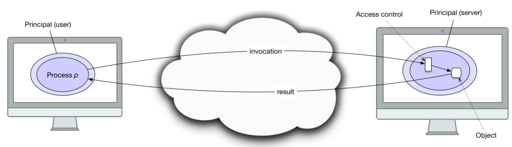
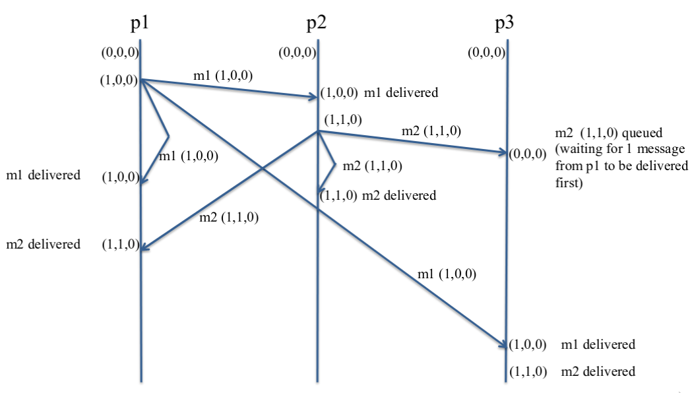
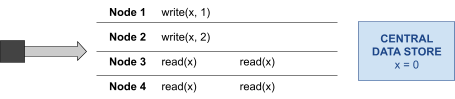
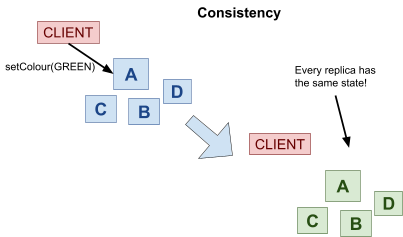
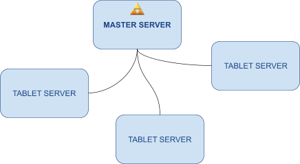
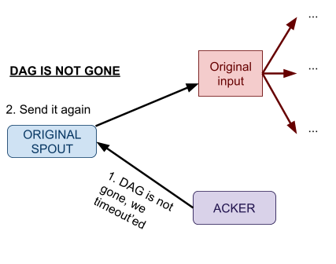

Distributed Systems & Networks
Matthew Barnes
Networking (Kirk) 5
Physical + Link layer 5
Functions 5
Acknowledgements 7
Frames 9
Ethernet CSMA/CD 10
WiFi CSMA/CA 10
Ethernet LANs 11
Ethernet theory 11
ARP 12
Building Ethernet LANs 13
Spanning tree protocol 13
VLANs 15
Ethernet frame priority 16
Internet/Network layer 16
Internet Protocol (IP) 17
Subnets 21
Calculating subnets 23
ICMP 25
IP routing protocols 25
Aggregating prefixes 26
Interior routing protocols 27
Distance Vector 27
Link state 28
Exterior routing protocols 29
Transport layer 30
UDP 30
TCP 31
TCP or UDP? 35
Sockets 36
DNS 37
Application layer 40
Telnet 40
Email 41
SMTP 41
IMAP 42
HTTP 42
HTTP/2 43
QUIC 43
CoAP 44
RTSP 44
SMB 44
NFS 45
P2P 45
IPv6 45
IPv6 Features 46
Why use v6? 47
IPv6 headers 47
IPv6 with routers and privacy 48
Deploying IPv6 48
IPv6 security 49
Other IPv6 stuff 49
Network security 50
DNS Security 50
Firewalls 51
Intrusion Detection Systems 52
Port / Physical Security 52
DDoS 53
Wi-Fi (In)Security 54
Distributed Systems Implementations (Tim) 55
Distributed Systems Models 55
Physical models 55
Architectural models 55
Mapping entities to infrastructure 56
Architectural patterns 56
Fundamental models: Interaction, Failure and Security 57
Distributed Object Systems 59
Distributed OOP 59
Remote Interfaces 60
Server Deployment 60
Dynamic Code Loading 60
Many Clients! 61
The Monitor 61
The Observer Pattern 62
RMI Limitations 62
Data Serialisation 62
Serialising Java Objects 62
Mobile code 📱 63
Pass by reference or value? 63
Programming language independence 64
JSON 64
GSON 65
Linked Data & Semantics 65
Loose Coupling 66
Space & Time Uncoupling 66
Group Communication 67
Publish & Subscribe 68
Message Queues & IoT 69
RabbitMQ 70
Distributed Transactions 71
Distributed Data 71
Lost Updates & Inconsistent Retrievals 71
Dirty Reads & Premature Writes 73
Distributed Commit Protocols 74
Two-Phase Commit 75
2PC Failure Handling 75
Increasing Concurrency & Deadlocks 76
Distributed Systems Theory (Corina) 77
Time in Distributed Systems 77
Clock synchronisation 77
Logical clocks 78
Distributed Mutual Exclusion 82
Failure detectors 82
Distributed Mutual Exclusion 82
Leader Election 91
Asynchronous systems 92
Synchronous systems 96
Reliable and Ordered Multicast 98
Basic multicast 99
Reliable multicast 99
Ordered multicast 100
Consensus 103
Synchronous 104
Asynchronous 105
Consistency models 106
Strong consistency 107
Sequential consistency 107
Causal consistency 109
Eventual consistency 109
Strong eventual consistency 110
Other stuff (Leonardo) 110
Data Replication and Scalability 110
Data Replication 110
Primary-backup 110
CAP theorem 112
Scalability 115
Highly Available Distributed Data Stores (Amazon Dynamo) 116
Replication 117
Consistency 118
Fault tolerance 123
Why is Amazon Dynamo AP? 123
Scalability 124
Consistent Distributed Data Stores (Google BigTable) 125
Data model 125
Architecture 126
Tablets 129
SSTables 130
Why is Google BigTable CP? 132
Online Distributed Processing 132
Use cases 132
Requirements 133
Apache Storm 133
Data model 133
Architecture 134
Replication 135
Stream grouping 136
Fault tolerance 137
Batch Distributed Processing 139
Implementation #1: Google MapReduce 139
Implementation #2: Apache Hadoop 140
TL;DR 142
Kirk’s stuff 143
Tim’s stuff 150
Corina’s stuff 154
Leonardo’s stuff 158
Networking (Kirk)
Physical + Link layer
Functions
-
There are three reference models for networking
protocols:
|
OSI model
|
TCP/IP model
|
Tanenbaum’s book
|
|
Application
|
Application
|
Application
|
|
Presentation
|
Transport
|
Transport
|
|
Session
|
Internet
|
Network
|
|
Transport
|
Link
|
Link
|
|
Network
|
Hardware
|
Physical
|
|
Data Link
|
|
|
|
Physical
|
|
|
-
Here is a sentence to remember the OSI layers, from bottom
up: Please Do Not Throw Salami Pizza Away 🍕❌🗑
-
Tanenbaum’s book is just the TCP/IP model, but they
changed Internet to Network and Hardware to Physical.
-
Each layer adds its own header, and it becomes part of the
payload for the layer below it:
-
There’s different types of medium for the physical
layer:
-
Coaxial cable
- Twisted pair
- Power line
- Fibre optic
-
Wireless (laser, sound, ultrasonic, pulses, radar)
-
Bits are transmitted using encoding schemes. Transmission
is based on something varying over time, like voltage or
frequency, with synchronisation.
-
What does the link layer actually do?
-
Transmits frames over physical media
-
Detects and handles transmission errors
-
The link layer doesn’t care about what the packet
says. The link layer only cares about getting the packet
from A to B.
-
Packet: a unit of data in the Network layer (our payload)
-
Frame: a unit of data in the Link layer (what the link layer
actually sends)
-
A frame contains a packet and wraps a header and a trailer
around the packet.
-
Data frames vary based on the physical layer, for example
there are Ethernet frames and Fibre Channel frames.
-
The partitions of a frame are usually fixed in size (except
for the payload), making it far easier to tell where the
data actually is.
-
Frames are transmitted through hop by hop transmission over a packet-switched network.
-
Too jargon-y for you?
-
Hop by hop transmission: where data is transported through intermediate nodes to
its destination.
-
Packet-switched network: A network where packets dynamically find their own way to
a destination without a set path (look at the pretty
animation from wikipedia)

-
Because of these properties, framing can allow senders to
send packets through a shared medium, like you see above
(all the intermediate nodes are available to all the
coloured packets/frames).
-
You also need to know where the frame starts and the frame
ends.
-
In flow control, we may need to regulate how fast we send
data. We don’t want to swamp a slow receiver with tons of packets!
-
We can either:
-
send messages from the receiver to the sender saying
“wait, let me process this data first” and
alternatively, “alright, now send more data”
a.k.a. feedback-based flow control
-
make the communication rate-based so the speed is agreed
between both parties (rarely used in such a low layer) a.k.a. rate-based flow control
Acknowledgements
-
There are three main link layer models:
-
Connectionless, no acknowledgements
-
Used for low error rate networks (networks where packets
rarely get lost, like Ethernet)
-
Connectionless: no signalling path is established in advance.
-
No acknowledgements: Frames are sent, and may or may not be received by the
destination.
-
Acknowledged, connectionless service
-
Acknowledged: frames are sent, and the recipient notifies the sender
when they’ve received a frame through an acknowledge
(ACK) signal.
-
This is used when connections need the assurance of
delivery, but can’t afford the overhead of connection
management.
-
Acknowledged, connection-oriented service
-
Acknowledgement signals are sent, and a connection is
formally established before communications occur.
-
This is used for long delay, unreliable connections, for
example with satellites.
-
It’s computationally expensive, but it’s
secure.
-
How do we handle ACK signals and errors?
- We use ARQs!
-
ARQ (automatic repeat-request): an error-control mechanism that uses ACKs and timeouts to
ensure reliable communications with an unreliable
recipient.
-
Basically, ARQs are different ways of handling ACKs and
when they screw up.
-
There are three kinds:
|
ARQ protocol name
|
Explanation (not in the slides, so it might not be
examinable, but if you wanna play it safe then
read this anyway)
|
|
Stop-and-wait
|
The sender sends the first frame, then the
recipient sends an ACK signal for that
frame.
The sender sends the second frame, then the
recipient sends an ACK signal for that
frame.
This keeps on going until all the frames have
been sent.
|
|
Go-back-N
|
The sender sends frames #1 to #N to the
recipient, in order, over and over again, even
if an ACK signal doesn’t exist.
The recipient throws away duplicate frames and
frames that aren’t in the right order. The
recipient sends an ACK signal containing the lowest number frame it had missed, let’s say #M where 1 ≤ M <
N.
The sender gets the ACK signal, and now sends
frames #M to
#(M + N) to the recipient. This keeps on going
until all frames are collected.
Protocols like these are called sliding window
protocols.
Example:
Alice is sending frames 1, 2, 3, 4 and 5.
Bob gets frames 1, 2, 3 and 5, but misses 4.
Bob sends an ACK signal to Alice with the number
‘4’.
Alice receives this ACK signal, and is now
sending frames 4, 5, 6, 7 and 8.
Now Bob has frames 1, 2, 3, 4, 5, 6, 7 and 8.
Bob sends an ACK signal with the number
‘9’.
Alice receives this ACK signal again, and is
now sending frames 9, 10, 11, 12 and 13.
|
|
Selective-repeat
|
Go-back-N may send duplicate frames, which is
inefficient on the bandwidth. Selective-repeat
aims to fix this.
The sender sends frames #1 to #N.
The receiver can either:
-
Send an ACK signal to move onto the next
set of frames
-
Send a NAK signal to request a specific
frame
If the sender gets an ACK signal with number M,
then it’ll start sending frames #M to #(M
+ N).
If the sender gets a NAK signal with number M,
then it’ll send only the frame #M to the
recipient.
Example:
Alice sends frames 1 and 2 to Bob.
Bob gets frames 1 and 2, and sends an ACK
signal with number 3 to Alice.
Alice gets this ACK signal and sends frames 3
and 4 to Bob.
Bob misses 3, but gets 4. Bob sends a NAK
signal with number 3 to Alice.
Alice gets this NAK signal, and sends frame #3
to Bob.
Bob gets frame 3 and sends an ACK signal with
number 5 to Alice.
Alice gets this ACK signal and now sends frames
5 and 6 to Bob.
|
-
How do we detect errors in communication?
-
There are a few ways we can do this:
-
Parity bit: a bit that’s either 1 or 0 depending on whether the
number of 1’s is even or odd
-
CRC (Cyclic Redundancy Check): a type of checksum based on polynomial division. The
checksum is stored in a field of the frame, and is
calculated and compared by the sender and the
recipient.
-
Checksums may happen on other layers too. IPv4 has a
checksum, but IPv6 doesn’t.
Frames
-
In frames, how do you know where frames start and where
frames end?
-
There’s many ways to do it. One way is to use a FLAG
byte value to mark the start and the end.
-
If a FLAG byte appears in the payload, escape it with an
ESCAPE byte (similar to escape characters \n, \b, \\ ... in C, C++, Java etc.)
Ethernet CSMA/CD
-
Ethernet was the de facto link layer standard throughout the
90’s, and continues to be today.
-
Originally, it all ran through shared media. In other
words, it was all one wire and everyone had to share. There
came twisted pair with hubs/repeaters to help, but it
didn’t solve the problem.
-
In the end, switches were used (they’re like hubs,
but a little smarter). There is one device per switch port,
and since it’s fully duplex, there’s no
contention.
-
On a shared medium, how is media contention handled?
-
Originally, Ethernet used Carrier Sense Multiple Access with Collision Detection, or CSMA/CD.
-
It works by checking if the media is busy. If it is, then
wait. If it isn’t, then it sends its signals across
it.
-
If a collision occurs (two devices try to use the media at
the same time), they both stop and pick a delay before
trying to talk again.
-
Ethernet doesn’t really use this anymore because
switches are fully duplex, so there’s no
contention.
WiFi CSMA/CA
-
WiFi is the wireless alternative to Ethernet. It works in
the 2.4GHz or 5GHz range. The 2.4GHz range has 14 channels
(13 in Europe). WiFi has evolved over the years.
-
With WiFi, devices are associated with a wireless access
point (AP). Devices can select from one of many service set
identifiers (SSIDs).
-
WiFi is technically a shared medium, so there can be
contention in a busy area. Therefore, you need a collision
avoidance scheme.
-
WiFi can’t send and receive at the same time, so WiFi
uses a slightly different approach called CSMA/Collision Avoidance (CSMA/CA).
-
It’s like CSMA/CD, but instead of listening to the
medium, it waits for an acknowledgement from the AP to
determine if the frame was sent.
-
In other words, instead of dealing with collisions, it
avoids them.
-
It’s very similar to the stop-and-wait ARQ
protocol.
-
Optionally, Request to Send / Clear to Send (RTS/CTS) could be used to improve performance, where a sender
sends an RTS message to ask if it can send frames, and can
only send frames after it receives a CTS message from the
receiver (basically, send an RTS and expect a CTS).
-
/CA is used in wireless connections as it is very difficult
to determine if a collision has occurred over a wireless
network.
Ethernet LANs
Ethernet theory
-
Ethernet is used on campus networks and on home
networks.
-
An Ethernet frame includes (remember, this is the link
layer):
-
48-bit source MAC address
-
48-bit target MAC address
-
Optional VLAN ID and frame priority
-
At max, the frame is usually around 1500 bytes. If it gets
any bigger, it’ll be broken down into smaller
frames.
-
MAC (Media Access Control) address: a unique ID for network interface controllers (NICs) at
the link layer.
-
It’s around 48 bits long, but can be extended to 64
bits.
-
They need to be unique, so MAC addresses are split up
into:
-
24 bits for vendor allocations (tells you what vendor this
hardware is from)
-
Last 24 bits assigned by the vendor
-
Ethernet networks are built with each device (also called
hosts) connected to a concentrator device (usually a
switch).
-
Desktops usually have 1 Gbit/s Ethernet, but the servers
are on 10 Gbit/s Ethernet.
-
There are different kinds of concentrator devices:
-
Hubs and repeaters:
- Really old!
-
They just take frames and forward them on to all the
devices available
-
They just extend Ethernet range
-
All hosts see all packets, which is a big no-no for
security.
-
Receives frames and forwards them to the host that needs
them
-
Has ‘smart’ forwarding (they learn which host
needs what packet)
-
Hosts only see the packets sent to them, which is good for
security.
-
Switches are smart, because:
-
they can perform CRC (Cyclic Redundancy Checks) before
forwarding
-
it learns the addresses of the hosts using a MAC table, so
they only send packets to the hosts that need them
-
can support more advanced features, like VLAN or QoS
-
How do switches learn which frames go to which host?
-
Switches match up source MAC addresses to switch
ports.
-
So if a frame with source MAC address 6F-72-61-6F-72-61 is
picked up by port number 2, the switch will remember that.
The next time a frame with that source MAC address comes up,
the switch will send it to port number 2.
-
There is a time-out for pairings like that (~ 60
seconds).
-
If there is no entry in the table the switch has to send
the package to all ports.
ARP
-
To send a frame to a host, you need its network layer
address (IP address) and its link layer address (MAC
address).
-
We can get the IP address from DNS, but how do we get the
MAC address from an IP address?
- We use ARP!
-
ARP (Address Resolution Protocol): a protocol that allows a host to get the MAC address
associated with a given IP address.
-
ARP uses a link layer broadcast message (a message sent to
everyone).
-
The broadcast message asks “Who has this IP
address”?
-
All the hosts see this message, and the one with that IP
address goes “It’s me! My IP address is
so.me.th.ing and my MAC address is wh:at:ev:er”
-
The sender gets this information and can now send the
frame.
-
This information is usually cached for around 60
seconds.
-
In an ARP message, you have:
-
Sender MAC address
-
Sender IP address
-
Target MAC address (zero-padded when we don’t know
what it is)
-
Target IP address
-
There are 4 kinds of messages:
-
Unicast: from one sender to one receiver. Purely one-to-one.
-
Broadcast: sent to everyone. To broadcast a message, make the MAC
address FF:FF:FF:FF:FF:FF.
-
Multicast: sent to anyone who is interested.
-
Anycast: sent to the nearest receiver; doesn’t matter who,
as long as it gets to someone.
-
Hosts can spoof and steal frames from other hosts
-
Low power devices may ‘sleep’ and not respond
to ARP messages
-
You can send a ‘gratuitous ARP’, which is just
making sure your information is up to date.
-
ARP probe: a use of ARP to make sure no two hosts have the same
IP
Building Ethernet LANs
-
LANs can’t be too big, or else we’ll have
problems with range and volume of messages (when
broadcasting).
-
Therefore LANs must be kept at a reasonable size, for
example in a campus, there’s typically one LAN per
floor, or per building.
-
When we create an Ethernet LAN with a switch, hosts can
talk to each other directly using their MAC addresses.
-
They’ll also allocate “local” IP
addresses to each host, for example 192.168.0.0 up to
192.168.255.255, as part of an IP address plan.
-
To connect two LANs together, we need to use an IP router,
which forwards IP packets between LANs (remember, routers do
not work with the link layer, only the network layer).
-
Routers can tell other routers the reachability of the IP
address ranges it serves, so the network can learn where to
forward IP packets.
-
Therefore, if a host was sending a packet from one LAN to a
host on another LAN, it will send the packet to its
‘default’ IP router.
-
IP routers act as network layer gateways between individual
link layer Ethernet LANs.
-
A localised network layer LAN behind a router is called an IP subnet.
-
A home network is usually a single IP subnet and Ethernet
LAN.
-
In multi-story buildings, they typically use copper twisted
pair cabling.
-
Ethernet networks may be deployed using:
-
Data riser: vertically aligned switch/server rooms
-
Flood wiring per floor: have faceplates from switch room
-
Ethernet switch stacks: one switch port per faceplate
-
A building may have one LAN, if a router connects the whole
building, or there could be one LAN per floor.
-
In homes, you typically have an ADSL router with multiple
Ethernet ports and 802.11 WiFi. It’s just one LAN,
with no internal routing. Pretty basic.
Spanning tree protocol
-
A bridge loop occurs in a network when there are two ways to reach
the same node.
-
They’re bad news because they can cause broadcast radiation, which is where there’s so much traffic on the
network cabling that it severely harms the performance of
the network.
|
No bridge loop
|
Bridge loop
|
|

|

|
-
Why is this so bad?
-
Let’s say the workstation wants to send a frame to
the file server. The switches will pass the frame onto the
neighbouring nodes, right? After all, no frame has been sent
before, there’s no way the switches would know which
frames to send where.
-
The workstation’s frame could end up back at switch 1
through the path 1 -> 2 -> 3 -> 1 or 1 -> 3
-> 2 -> 1. This loop is wasteful and clogs up the
medium.
-
The file server could also end up with two of the same
frame.
-
It’s pretty clear that loops are bad. But they could
also be good, because what would happen if switch 3 dies? We
could still use the switch 2 path to get to the file server.
Whereas, on the left, if switch 1 dies, that’s it. No
more talking to the file server.
-
Introducing the spanning tree protocol!
-
The spanning tree protocol maps out a set of paths from the
source to the target in a “tree” structure. It
plucks out the least cost path, and disables all the other
switches that are not on that path.
-
The source can then send the packet, and no loops will
occur.
-
However, if a switch on that path fails, the protocol will
pick the next best path, and re-enable and disable the
appropriate switches to follow that path instead.
-
Therefore, we get the best of both worlds: no broadcast
radiation, and if any switches fail, we’re fine.
-
Want an example?
-
So we want to get from the workstation to the file server.
There’s two (sensible) ways of doing this:
-
Normally, we’d pick the smallest, but they’re
both the same length, so let’s go with the switch 3
path.
-
So now, switch 2 is disabled. The workstation sends the
frame.
-
Oh no! A rat chewed on the cabling of switch 3 and made it
explode! What are we going to do?!
-
The protocol will now pick the switch 2 path. So now,
switch 2 is enabled, switch 3 is “disabled”, and
the frame is re-sent through the switch 2 path.
-
It reaches the file server successfully!
VLANs
-
A VLAN, or a Virtual LAN, are broadcast domains that are
partitioned and isolated.
-
A VLAN can consist of multiple hosts, all of different
LANs, but they are made to think that they are all connected
to the same wire.
-
Ethernet frames include an optional VLAN identifier.
It’s 12-bits, so there are 4096 different VLAN
IDs.
-
Because it’s completely logical and not physical,
it’s quite flexible.

-
Here, workstations 1, 3 and 5 think they’re all on
the same LAN, but really it’s a VLAN.
-
This is useful to group together staff that aren’t
physically in the same LAN, for example, workstations 1, 3
and 5 might all be in the marketing department.
Ethernet frame priority
-
How important is a frame?
-
VoIP is pretty important, because you want to know what the
other person is saying as they’re saying it.
-
HTTP might not be as important, because it’s a
document; you don’t need it right away.
-
There are three bits in the 802.1Q tag that determines
priority, from 1 to 7.
-
This only affects prioritisation at switches, not
end-to-end.
Internet/Network layer
-
What does the network layer actually do?
-
The network layer is responsible for establishing a network
between computers so that they can send things to each
other.
-
In more detail, the network layer is responsible for:
-
Connecting networks together to form an
“internetwork”, or “Internet”
-
Each network is served by a router
-
Packets the data by adding an IP header
-
Processes and routes IP datagrams (data units across the
network)
-
Fragmenting packets that are too big
-
Error checking
-
Reassembling fragments if needed
Internet Protocol (IP)
-
IP (or Internet Protocol) is the main protocol used in the network layer.
-
The properties of IP are:
-
Packet-switched, connectionless:
-
IP packets are routed towards destination at each router on
the path
-
Connectionless: packets find their own way to the destination, it
doesn’t have to rely on a fixed path from A to B
-
No guarantee that any IP datagram will be received
-
Best-effort delivery: there is a variable bit rate and latency and packet loss
depending on the current traffic load. Basically, the
routers try their best but won’t guarantee perfect
performance
-
Sending a packet is only based on destination IP
address
-
Routers maintain routing tables to make routing
decisions
-
Globally unique, delegated addresses:
-
Devices must be globally unique + addressable to send
traffic to them
-
Private address space, which are not globally routed, may
be used (because that’s the whole point, since we ran
out of IP addresses)
-
There are 5 main protocols for the network layer:
- IPv4
- IPv6
-
ICMP - used for diagnostics and control
- ICMPv6
-
IPSEC - used for security
-
Store-and-forward packet switching is a technique where data is sent to
an intermediary node and then passed on to either another
intermediary node or the destination node.
-
In this context, routers store the packet and determine where to forward them.
-
IP is a bit unreliable, because routers forward packets on
a ‘best effort’ basis.
-
Packets may get dropped because of congestion. The
transport layer (next layer above) may handle
retransmissions:
-
With TCP, retransmissions are handled
-
With UDP, the application layer has to handle
retransmission
-
Quality of Service may help by prioritising certain
traffic.
-
In IPv4, segments of data are taken from the transport
layer and an IP header is attached to the end of it.
-
This creates an IP datagram.

-
An IP header has the following fields:
-
Source IP address
-
Destination IP address
-
IHL - header length (can vary)
-
Identification field and fragment offset
-
Time to live (how long should this packet stay switching
before we give up)
-
IP header checksum
-
MTU (or Maximum Transmission Unit) is the size of the largest data unit that can be
communicated in a single network layer transaction.
-
If we’re sending a packet of 2000 bytes to a router,
and the MTU is 1500 bytes, then the packet has to be
fragmented.
-
Fragmentation happens in the network layer.
-
We should try to avoid fragmentation, because it adds
overhead and security issues.
-
Now, a bit of history of IPv4!
-
People used IPv4 since the 1970’s
-
It uses 32-bit addresses, written as ‘dotted
quads’, like 152.78.64.100.
-
The IPv4 address space is partitioned into 5 different
classes, where 3 classes are used for networks of different
sizes, 1 class is used for multicast groups and 1 class is
reserved:
|
Class
|
Prefix range
|
Prefix length
|
# of networks
|
# addresses per network
|
Examples
|
|
A
|
0.0.0.0 to
127.0.0.0
|
8 bits
|
128 networks
|
~16 million addresses
|
20.xx.xx.xx
102.xx.xx.xx
|
|
B
|
128.0.0.0 to 191.255.0.0.
|
16 bits
|
~16,000 networks
|
~65,000 addresses
|
152.78.xx.xx
160.125.xx.xx
|
|
C
|
192.0.0.0 to 223.255.255.0
|
24 bits
|
~2 million networks
|
256 addresses
|
196.50.40.xx
202.155.4.xx
|
|
D
|
224.0.0.0 to 239.255.255.255
|
n/a
|
n/a
|
n/a
|
n/a (used for multicast groups)
|
|
E
|
240.0.0.0 to 255.255.255.255
|
n/a
|
n/a
|
n/a
|
n/a (reserved)
|
-
Here is a graphical visualisation of the partitioning of
the IPv4 address space:
|
Class A
|
Class B
|
|
|
Class C
|
Class D
|
|
Class E
|
-
Basically, if an IPv4 address is within a certain class, it
must follow two rules:
-
The first 8 bits must be within a certain range
-
It must have a fixed prefix
-
For example, if an IP is within class B, the first 8 bits
must be between 128 and 191, and the first two bytes must be
fixed.
-
Additionally, an IP range of 152.xx.xx.xx cannot be within
class A because the first byte lies outside of A’s
range; it would be B, but the second byte would be part of
the fixed prefix too, so you should write something like
152.78.xx.xx.
-
This is generally very inefficient, e.g. there are not many
networks that require a Class A IP address and thus 16
million different addresses, which means that a lot of space
is wasted. Even 65,000 addresses in class B are too many for
most networks.
-
Since 1995, RIR (Regional Internet Registry) allowed
variable length prefixes, meaning that network addresses
were no longer assigned strictly based on the ABC class
scheme
-
This change reduced address consumption rate, but we still
ran out of addresses back in 2011.
-
Due to the fact that there are still not enough IPv4
addresses for all hosts world-wide, private IP addresses
were introduced
-
More precisely, there exist ranges in the IPv4 address
space that are used as private IP addresses
-
What does private IP address mean? It basically means that
this is an IP address that is not globally unique and thus
cannot be reached from outside the network.
-
In other words, private IP addresses may be used many many
times in different networks world-wide
-
An example for the use of a private IP address is your home
network
-
There exist three different private IP networks with the
following address ranges:
|
Address range
|
Number of addresses
|
Subnet mask
|
|
10.0.0.0 -
10.255.255.255
|
16,777,216
|
8 bits mask
|
|
172.16.0.0 - 172.31.255.255
|
1,048,576
|
12 bits mask
|
|
192.168.0.0 - 192.168.255.255
|
65,536
|
16 bits mask
|
-
For example, your home network may use 192.168.0.0
-
You can further divide the private address space into
subnets as you wish (more on subnets later), so you could
have 192.168.0.0/24, allowing for 255 ip host
addresses
-
There must be a mechanism to translate your private IP
address to a public ip address, which is called NAT (see
below)
-
We can maximise the use of address space:
-
DHCP (or Dynamic Host Configuration Protocol) requires IP addresses to be leased out for small time
periods, preventing inactive hosts from hogging valuable
address space
-
NAT (or Network Address Translation) allows you to use one IPv4 address to refer to an entire
private network, so each device on your network
doesn’t need their own unique IPv4 address
-
Classless Inter-Domain Routing: allows use of any prefix length, not just /8, /16 or
/24
Subnets
-
Remember that a subnet is a localised network behind a router (its default
gateway).
-
The full name is “subnetwork”.
-
There are various addresses concerning IP subnets,
like:
-
The first IP in the range
- e.g. 152.78.70.0
-
How big is the prefix of the range of IPs
-
e.g. 24 bits, so 152.78.70.(0 to 255) is written
152.78.70.0/24
-
Subnet mask (or network mask or netmask)
-
The fixed prefix bits for all hosts in the subnet
-
e.g. 255.255.255.0
-
In full: 11111111 11111111 11111111 00000000
-
Conveys the same information as the prefix length
-
Subnet IP broadcast address
-
The IP address to use when you want to broadcast to the
whole network
-
The last IP in the range
-
e.g. 152.78.70.255
-
Here’s a picture of all possible subnet masks you can
use in IPv4:
-
So you have a subnet and a bunch of addresses you can
use...
-
... but not all of them can be used for hosts.
-
Three are reserved for:
-
The subnet network address (e.g. 152.78.70.0)
-
The subnet broadcast address (e.g. 152.78.70.255)
-
The address of the router, also called gateway (any other address within the subnet range, but
conventionally either 152.78.70.1 or 152.78.70.254)
-
How do you determine a subnet (network) address?
-
Take the IP address and subnet mask (derived from the
prefix length), and binary AND them to get the subnet
network address.
-
How do you determine a subnet broadcast address?
-
Take the IP address and wildcard mask, that is the inverted
binary subnet mask, and binary OR them to get the subnet
broadcast address
-
Determining the broadcast address for a device with IP
address 172.16.17.30 and subnet mask 255.255.240.0 (/20),
which is the wildcard mask 0.0.15.255:
|
172.16.17.30
|
10101100.00010000.00010001.00011110
|
|
|
0.0.15.255
|
00000000.00000000.00001111.11111111
|
|
|
Broadcast =
|
10101100.00010000.00011111.11111111
|
= 172.16.31.255
|
-
ARP can also be used to find the Ethernet (MAC) address of
the default router (gateway) of the network (if the
destination IP is not in the same subnet).
-
This is why being able to use the subnet mask to determine
the subnet address is important.
-
What happens if you screw up the subnet mask (e.g. if the
network admin misconfigured the value on the DHCP
server)?
-
If it’s too short (it is /23 when it should be
/24)
-
Host may think a remote host is local, so it’ll use
ARP locally
-
It won’t get a response
-
If it’s too long (it is /25 when it should be
/24)
-
Host may think a local host is remote, so it’ll send
it to the router
-
The router may end up redirecting the packet
Calculating subnets
-
Here is a concrete example of how to calculate subnets - you could find
a question like this in the exam:
-
You have been tasked with assigning IPv4 address ranges to
six subnets in a new building and specifying the routing
tables. You have been allocated 152.78.64.0/22 to carry out
this task. How would you allocate this block of addresses to
best use the available space to cater for …? In your
answer you should include the network address, the broadcast
address and prefix length of each subnet!
-
A computing lab with 260 computers
-
First of all, let’s determine the subnet size we
need. We want to find the smallest power of two that exceeds
the host count by at least three. Why three? Because one is
the network address, one is the broadcast address and one is
reserved for the gateway (default router). Why the smallest?
Because we do not want to waste any addresses by making our
subnet too large.
-
In this case, it is 9 because 2^9 = 512 and 512 - 3 >= 260.
-
So for this subnet, we will need the last 9 bits for the
hosts, thus the first 32 - 9 = 23 bits are used for the
network and stay fixed (Why did I use 32? Well, the whole IP
address has 32 bits). Our subnet will be a /23 subnet.
-
Next, determine the network address for this subnet. The
network address is always the lowest address. Since this is
the first subnet, we are going to start with 152.78.64.0,
which is given in the question.
-
Finally, we need to determine the broadcast address. Our
network address is 152.78.64.0 and our subnet mask is /23.
The broadcast address is always the highest address.
Therefore we need to copy the first 23 bits and leave them
unchanged, and take the last 9 bits and set them to 1.
-
After you do this you will get 152.78.65.255, which is our
broadcast address.
-
So all in all our subnet is 152.78.64.0/23 with the
broadcast address 152.78.65.255
-
An electronics lab subnet with 200 computers
-
Again, we will determine the subnet size first. This time
it is 8, because 2^8 = 256 and 256 - 3 >= 200. Therefore
our subnet will be a 32 - 8 → /24 subnet
-
To determine the network address, take the broadcast
address of the last subnet and add 1. Why 1? Because we
don’t want to leave any gaps and thus waste addresses
in our allocation. 152.78.65.255 + 1 → 152.78.66.0 (by doing this, we ensure that this subnet begins
immediately after the last one ends) Attention: This only works if the current subnet is of the same size
or smaller than the last one. Otherwise, you might need to
leave a gap. You can check if you need to leave a gap by
checking whether the network address is the lowest one in
the range. If it isn’t, you must leave a gap and skip
to the next possible network address.
-
To determine the broadcast address, take the first 24 bits
of the network address and set the last 8 bits to 1.
Luckily, the first 24 bits are exactly the first 3 groups.
Now we get 152.78.66.255.
-
All in all, our subnet is 152.78.66.0/24 with the broadcast
address 152.78.66.255.
-
An office subnet with 110 computers
-
Subnet size: 2^7 = 128, 128 - 3 >= 110 → /25
-
Network address: 152.78.66.255 + 1 →
152.78.67.0/25
-
Broadcast address: 152.78.67.127
-
Also, an alternative way to calculate the broadcast address
if you already have the network address is to just add the
subnet size - 1 to the network address. In this case the
subnet size is 128 addresses, so we will add 127. Take
152.78.67.0 + 127 → 152.78.67.127 and you are done. Attention: this only works if you add to the network address, the
other procedure works with every address within the network!
This technique is especially helpful if the subnet size is 8
or smaller.
-
A server subnet with 60 servers
-
Subnet size: 2^6 = 64, 64 - 3 >= 60 → /26
-
Network address: 152.78.67.127 + 1 →
152.78.67.128/26
-
Broadcast address: 152.78.67.128 + 63 →
152.78.67.191
-
A DMZ subnet with 25 servers
-
Subnet size: 2^5 = 32, 32 - 3 >= 25 → /27
-
Network address: 152.78.67.191 + 1 →
152.78.67.192/27
-
Broadcast address: 152.78.67.192 + 31 →
152.78.67.223
-
An infrastructure subnet with 17 devices
-
Subnet size: 2^5 = 32, 32 - 3 >= 17 → /27
-
Network address: 152.78.67.223 + 1 →
152.78.67.224/27
-
Broadcast address: 152.78.67.224 + 31 →
152.78.67.255
-
We are done. As a last cross-check we can verify whether
our allocation fits within the range we were initially
given. Wait, you don’t need to scroll up, it was
152.78.64.0/22.
-
Let’s determine the broadcast address. Be careful,
because it might be the case that the address given is not
the network address (i.e. the lowest address) of this range,
so you may not be able to just use the trick I previously
used and add 1023 to this address!
-
To determine the network address, take the first 22 bits
and leave them unchanged. Set the remaining 10 bits to 0.
You will get 152.78.64.0, so as it turns out, the address
given was indeed the network address (which is the lowest
address).
-
To determine the broadcast address, either set the last 10
bits to 1 or just add 1023 to the network address. You will
get 152.78.67.255, which is exactly the broadcast address of
our last subnet.
-
So to conclude, our allocation fits perfectly in the range
that we were initially given.
ICMP
-
ICMP (or Internet Control Message Protocol) is a supporting protocol for sending status messages
between hosts instead of actual data.
-
If you ping a host, that’s ICMP.
-
ICMP can be used to send error messages or other
operational information.
-
ICMP can also be used for routers to tell other routers
about themselves to fill out their routing tables, called router advertisement.
IP routing protocols
-
When a host sends a packet, it will send it:
-
directly to the destination, if it’s on the same
local subnet
-
to the router, if the destination is not on the local
subnet
-
Hosts have no idea what goes on outside their subnet; they
just send to the router and let that take care of the
rest.
-
The router will participate in a site routing protocol, and
the site routes to the Internet using a policy-rich routing
protocol called Border Gateway Protocol (BGP).
-
To determine whether to deliver locally or forward to a
router, a host maintains a small routing table, with a list
of known networks and how to reach them (can be built from
information learnt by DHCP or IPv6 RAs)
-
The table includes a local subnet in which the host
resides, and a ‘default’ route to send a packet
if the destination is not in the routing table (the
‘default’ route is usually to the router /
default gateway)
-
But when a packet gets to the router, what do we do
then?
-
The router needs to try to forward the packet to the
destination’s router.
-
This is where we use routing protocols!
-
So, how do we solve this problem?
-
We configure the routes manually.
-
It works, but if the topology changes or network faults
occur, we have problems
-
We use routing protocols to establish a route on-the-fly,
such as:
-
Routing Information Protocol (RIP) - distance vector algorithm
-
Open Shortest Path First (OSPF) - link state algorithm
-
IS-IS - link state algorithm
Aggregating prefixes
-
You’d think all routers would need to have access to
all other routers on the Internet to communicate,
right?
-
No need; aggregated prefixes exist!
-
Instead of routing to 152.78.70.0/24 exactly, you can route
to 152.78.0.0/16, and through there the packet can find its
way into the smaller subnets, like 152.78.240.0/20,
152.78.255.128/25, and any subnet with address
152.78.??.??/x where x is greater than 16.
-
Let’s look at an example:
-
Here, R1 serves 152.78.2.0/24 and R7 serves
152.78.64.0/23.
-
Instead of sending directly to R1, we can send our packet
to the border router, which serves 152.78.0.0/16, which
makes it an “umbrella” router for all addresses
152.78.0.0 to 152.78.255.255.
Interior routing protocols
-
Routing is all about routers maintaining routing tables and
looking up destination addresses to know where to send off
the packet to.
-
The routing table is, fundamentally, a table with
destination IP prefixes and the interface or next hop to
use.
-
So how do routers fill in their routing tables? Routing
protocols! They allow routers to build or exchange routing
information.
Distance Vector
-
With the distance-vector routing protocol, we determine the
best route from one router to the next by distance, the
distance being the number of routers (or hops) from the
source to the destination.
-
It does this by only talking to the directly neighbouring
routers in a site, and uses an algorithm such as the
Bellman-Ford algorithm to get the shortest distance.
-
An application of this would be the Routing Information Protocol (RIP).
-
RIP is just an application of the distance-vector protocol,
but with a few extra conditions.
-
Each router maintains a RIP routing table, storing:
-
Destination network
-
Cost (hop count); 0 if network is directly connected
-
Next hop to use for best path
-
If a router receives an update with a lower cost path to a
destination network, it updates its entry for that
destination
-
If a router receives a higher cost path later for the same
destination from the same neighbour, the higher value is
used because topologies can change and the lower cost route
might not be valid anymore
-
This is all great, but RIP isn’t perfect:
-
Updates are only sent every 30 seconds, so things take
time. Plus, updates aren’t acknowledged (UDP) so there
could be message loss
-
Metrics are simple hop count values. What if you wanted to
weight certain links? Plus, the maximum value is 15. A value
of 16 means unreachable.
-
Routers don’t have knowledge of network topology, so
this can lead to the ‘count to infinity’ problem
(basically, a loop)
Link state
-
With the link-state routing protocol, we talk to all
routers and establish full knowledge of the site
-
Routers flood information messages describing their
connected neighbours around the entire site
-
An application of this would be IS-IS (Intermediate System
to Intermediate System) or OSPF (Open Shortest Path
First).
-
The steps are as follows:
-
Discover neighbours
-
Determine cost metric to each neighbour
-
Construct link-state information packet
-
Flood this message to all site routers in the same
area
-
Use messages to build topology, and then compute shortest
paths for prefixes served by any given router
-
The cost is usually based on bandwidth/delay
-
The structure of a link state packet is as follows:
-
Source ID to uniquely identify the node
-
Sequence to allow receiver to determine if message is a new
one to process and flood, or one to discard (sender
increments sequence number with each message)
-
Age (decremented once per second, prevents old messages
persisting in the network)
-
All messages are acknowledged to senders
-
Because we know the whole topology, we don’t need to
use Bellman-Ford or anything. We can just use
Dijkstra’s, which is faster.
Exterior routing protocols
-
Autonomous system (AS): a network or a collection of networks that are all
managed and supervised by a single entity or organisation,
typically an ISP (Internet Service Provider).
-
An interior routing protocol is for exchanging routing
information between gateways (routers) within an autonomous
system.
-
In contrast, exterior routing protocols are for exchanging
routing information between autonomous systems.
-
The de facto exterior routing protocol is Border Gateway Protocol (BGP).
-
In BGP, each ISP has a unique AS Number (ASN), assigned by
RIRs (Regional Internet Registry) -they’re 32 bits
long
-
It’s like distance-vector, but BGP includes many
improvements and also incorporates the AS path associated
with using a given route, the costs of the paths and many
other richer attributes.
-
BGP neighbours, called BGP peers, are identified and create
TCP sessions over port 179
-
They send their whole routing tables to each other, and
send incremental updates when something changes
-
Then, the routers advertise routes they know to their
neighbours, containing network prefix, prefix length, AS
path, next hop etc.
-
Neighbours can then use their knowledge of ASNs to choose
whether to use that route or not
-
F needs to get to D, but how? To get to D, F will have to
go through one of its neighbours. But which neighbour should
F choose?
-
To choose, F asks all its neighbours how they would get to
D. F will then pick the neighbour with the shortest
distance.
-
F will obviously not pick I or E, because their paths
contain F itself.
-
F will likely pick either B or G, making the path from F to
D either FBCD or FGCD.
Transport layer
-
The transport layer handles how the information is going to
be transported from the source to the destination.
-
There are two protocols that the transport layer can use:
UDP and TCP
UDP
-
User Datagram Protocol (or UDP) is a connectionless protocol on a ‘fire and forget’ basis.
-
Packets are sent to their destination with no
acknowledgements. They just sort of throw packets towards
the destination and hope for the best.
-
The properties of UDP are:
-
No need to set up a connection with the recipient
-
Application layer has to retransmit, if required:
-
If the recipient doesn’t get the data, the
application layer is responsible for resending
-
UDP applications use a constant bit rate:
-
No need to control the bit rate as the packets all come in
at once anyway
-
The application should adapt if necessary
-
No connection management is used, so we use less
bandwidth
-
The UDP header is simpler than TCP’s header
-
The checksum is optional
-
If buffers are full, packets may be dropped. The
application can detect this and tell the server.
TCP
-
Transmission Control Protocol (or TCP) is a connection oriented protocol.
-
It includes acknowledgements and retransmissions.
-
TCP provides performance and reliability on an otherwise
unreliable IP service, at the expense of an overhead.
-
The properties of TCP are:
-
Provides connection management:
-
A connection is established and managed
-
Slows down / speeds up when needed
-
Uses that capacity but tries also to avoid congestion:
-
Backs off when there’s packet loss (indicator of
congestion)
-
Sends segments again if they were unacknowledged
-
Receiver reassembles segments in the correct order
-
TCP headers are padded so that they’re a multiple of
32 bits.
-
Seq and Ack numbers used to track sequential packets, with
SYN bit:
-
TCP connection establishment uses a three-way handshake
of:
-
SYN: “Can
I talk to you please?”
-
SYN-ACK: “You
may talk to me.”
-
ACK: “We
are now talking.”
-
Each side uses a sequence number, so both parties have a
common understanding of the position in the data
stream
-
The sender must detect lost packets either:
-
by retransmission timeout:
-
Estimate when ACK is expected
-
by cumulative acknowledgement (DupAcks):
-
A type of acknowledgement that acknowledges all past data
chunks
-
TCP uses a sliding window protocol, like go-back-N or
selective-repeat back in the link layer, to perform flow
control.
-
Basically, the window is the same size as the
recipient’s buffer space. That way, the sender
can’t send any more than the recipient can
handle.
-
Once the recipient says that it can handle more, the window
is slid and further packets will be sent.
-
The sender sends a segment with a sequence number and
starts a timer.
-
The receiver replies with an acknowledgment number showing
the next sequence number it expects and its available
buffer/window size.
-
If the receiver doesn’t send anything by the time the
timer goes off, the sender resends.
-
If the receiver says the window size is 0, the sender may
send a 1-byte probe to ask for the window size again.
-
Here is an example, with dialogue to show you what’s
going on:
-
LEFT: “This is packet 0 (#1), it’s 2K in
size”
-
RIGHT: “Nice; I want packet 2048 (#2), and I have 2048
bytes of space left”
-
LEFT: “Here’s packet 2048 (#2), it’s 2K in
size”
-
RIGHT: “Great; I would want packet 4096 (#3) now, but
I’m full (I have 0 bytes of space)”
-
RIGHT: “OK, I want packet 4096 (#3) now, and I have 2048
bytes of space”
-
LEFT: “Alright, here’s packet 4096 (#3), it’s
1K in size”
-
If the connection started to get congested, how does TCP
control this?
-
TCP actually has two windows: a “recipient
buffer” window and a congestion window.
-
The recipient buffer window is defined just above;
it’s how much the receiver can take in before it gets
full.
-
The congestion window does its best to prevent congestion
in the connection (too much data flying through means more
packet loss)
-
A congestion window starts off small, and grows if
everything is going alright. It resets if there is a
timeout.
-
The window size doubles each time, until a threshold is
reached, at which point it’ll increase linearly,
called Congestion Avoidance.
-
After a timeout, the threshold decreases a bit.
-
So which window do we use; the recipient buffer window or
the congestion window?
-
We use whichever one is smallest.
-
Here is a graph showing the size of the window changing
with each transmission:
TCP or UDP?
-
Streaming services and voice over IP use UDP because
it’s immediate and has limited buffering.
-
Web services like HTTP and SMTP use TCP because having a
structured connection is more important.
-
DNS uses UDP because the overhead for TCP would be too much
for processing 100 to 1000 requests per second.
-
Here are the differences between TCP and UDP:
|
|
TCP
|
UDP
|
|
Connection
|
Connection oriented
|
Connectionless: “fire and forget”
|
|
Reliability
|
Handles ACK & retransmissions
|
Application needs to handle ACK &
retransmissions if needed
|
|
Data Order
|
Guaranteed that it arrives and in the correct
order
|
No guarantee that data is received in the order
sent
|
|
Header
|
20-bytes minimum
|
8-bytes
|
|
Good for
|
Applications that need high reliability
|
Applications that need fast and efficient
transmission
|
|
Example protocols
|
HTTP(S), FTP, SMTP, Telnet, SSH
|
DHCP, TFTP, SNMP, RIP, RTP, COAP
|
-
Here is a graphic showing the layers and what protocols
they use:
Sockets
-
A socket is created when a sender and a receiver act as
communication endpoints.
-
A socket has an IP address and a port number, for example
152.78.70.1 port 80
-
The socket and bind protocol uniquely identify the application’s subsequent
data transmission.
-
When multiple clients talk to one server, there is usually
one thread per client endpoint.
-
There is a sockets API, called the Berkeley sockets API.
Servers mainly use SOCKET and BIND, whereas clients tend to
use SOCKET and CONNECT:
DNS
-
First of all, what is a DNS?
-
The Domain Name System (or DNS) is a naming system for pairing up domain names to IP
addresses.
-
For example, when you search up “google.com”,
you’re actually talking to an IP, such as
“216.58.213.110”, and the DNS translates
“google.com” to that IP for you.
-
DNS names are delegated through the Top Level Domain (TLD)
registrars
-
For example, with soton.ac.uk:
-
first the “.uk” bit is delegated by
Nominet
-
then the “.ac.uk” bit is through Jisc
-
then finally, the whole thing “.soton.ac.uk”
comes down to the University of Southampton
-
It allows sites and organisations to maintain authority
over their registered domains.
-
The most common DNS lookup is host name to IP.
-
The DNS returns an A record for IPv4 or AAAA record for
IPv6 when queried for a specific host/domain name.
-
This means clients need to know the IP addresses of local
DNS servers (resolvers) so they can actually send the
queries.
-
A DNS resolver is a server that acts as a DNS server that resolves
queries and sends an answer back.
-
Client hosts are configured to use one or more local DNS
resolvers. They’re usually provided via DHCP.
-
Clients can use APIs to do DNS lookups. You can even do it
via a CLI tool.
-
Packets sent to DNS resolvers are usually UDP packets, but
they can use TCP.
-
They use UDP because it’s connectionless and
quick.
-
The results of queries can be cached.
-
Here is a list of DNS record types:
-
Campuses will run their own DNS servers, so they can:
-
act as resolvers for internally sourced DNS queries
-
act as servers for external queries against internal
names
-
Some DNS infrastructures also may provide a ‘split
DNS’ view, which is where separate DNS servers are
provided for internal and external networks as a means of
security and privacy management.
-
If DNS servers are local, then how does a client talk to a
server from across the world?
-
We leverage the hierarchical delegation structure! What?
That doesn’t make sense?
-
Basically, we have a set of “root” DNS servers
that can point us to other DNS servers that know about
different URL suffixes.
-
For example, if we were looking for “www.google.co.uk”, the root DNS could point us to another DNS server
and say “go to them, they know all about URLs ending
in uk”
-
Then that DNS server could point us to another DNS server
and say “go to them, they know all about URLs ending
in co.uk”
-
... and so on until we reach a DNS that knows the IP
address for www.google.co.uk.
-
Mapping one DNS to another DNS is known as DNS glue.
-
So in other words, to get your IP from your host name, your
browser goes on one big adventure, going from DNS to DNS,
looking for the IP.
-
This can also be cached, so we don’t hit DNS servers
heavily.
-
DNS resolvers are critical to Internet
infrastructure.
-
Because of this, people like to attack them.
-
Therefore, we need to make them resilient and strong.
-
Root servers are the ‘anchor’ for recursive
DNS’.
-
If someone managed to shut down all the root servers, they
could shut down the Internet.
-
There are 13 highly available clusters of root servers.
There are about 1000 servers in total used in these
clusters, and a server is picked in a cluster via
anycast.
-
This makes DNS servers more distributed and allows clients
to use the most local server, improving performance.
-
It also helps spread the load, and mitigate DoS
attacks.
-
IP anycast is where the same IP is configured in many locations,
and your network picks the closest one to connect to.
-
This is especially applied to DNS servers, as picking the
closest DNS server means you get better performance.
-
It also means you don’t have to reconfigure your
network when you’re in a different place; because of
anycast, your network just picks the closest DNS server
anyway.
-
Fast flux DNS is a technique where the association between an IP
address and a domain name is changed very frequently.
-
This is used in some peer-to-peer systems, but it can also
be used by botnets (the bad guys) to avoid detection and
make takedown harder (so they don’t get caught by the
good guys)
-
Public DNS servers are open public servers. They also answer queries for
domains, recursively. An example is the Google public DNS
server.
-
Why use them?
-
Speed improvements
- Reliability
-
Parental controls
-
Phishing protection
- Security
-
Access geoblocked content
-
Bypass web censorship
-
However, you don’t know who’s logging your
queries (and with a company like Google, can you really
trust them?)
Application layer
-
The application layer provides higher level services.
-
In the TCP/IP layer, it’s just called
“Application”, but in the OSI Model layers, the
application layer is split up into
“Application”, “Presentation” and
“Session”.
Telnet
-
Telnet: Simple unencrypted terminal emulation protocol
-
In other words, it provides a bidirectional text-based
communication service using your terminal, like a Unix / DOS
chatroom!
-
It was big in the 90’s, but nobody really uses it
anymore because
-
It’s old and computer normies non-techies don’t like using terminals
-
It doesn’t even have security, it’s
unencrypted
-
Today, it’s mainly used as a plot device in films
(like Die Hard 4) and watching the original Star Wars in
ASCII (the server is towel.blinkenlights.nl) .
Email
-
There are two main protocols for emailing: SMTP and
IMAP.
SMTP
-
SMTP (Simple Mail Transfer Protocol): a protocol used to send emails.
-
It uses TCP to connect to a mail server and uses the
commands MAIL, RCPT and DATA.
-
Authentication is an extension; you don’t need it,
but you should have it by now. Original emails didn’t
have it.
-
You can use SMTP quite easily in modern languages, like
Python and PHP.
-
How does SMTP work? Well, if you’ve been reading my
notes, you know I prefer to go in detail about stuff like
this (within reason).
-
If this illustration isn’t enough, here’s some
dialogue, where Alice is the sender and Bob is the
receiver:
-
Alice: “Hey, do you want to start a TCP
connection?”
-
Bob: “Yes. Let’s talk in TCP.” (220
message)
-
Alice: “Alright, let’s begin. Hello! Tell me what
you can do.” (EHLO extended hello message)
-
Bob: “OK. Here’s what I can do: (a list of things
Bob can do)” (250 message with list of supported SMTP
extensions)
-
Alice and Bob start performing mail transactions (you
don’t need to know these)
-
Alice: “I’m done with you. Let’s stop
talking.”
-
Bob: “OK. Goodbye.” Bob stops listening to Alice
(221 message, Bob closes transmission channel)
-
Alice receives Bob’s goodbye and also stops listening
to Bob.
IMAP
-
IMAP (Internet Message Access Protocol): a protocol used to retrieve emails.
-
It was designed in 1986 and listens on port 142 (993 for
the secure version)
-
It keeps a TCP connection open to send requests or receive
notifications.
HTTP
-
HTTP (HyperText Transfer Protocol): a text-based protocol that uses TCP and uses port
80.
-
There are two steps to using HTTP:
-
Send a request (e.g. GET /something/page.html HTTP/1.1)
-
Receive a response message (e.g. HTTP/1.1 200 OK)
-
A typical response might contain things such as:
-
Version of HTTP
-
HTTP status code
- Date
-
Content type (text, html, xml etc.)
- Server type
-
The main types of HTTP requests are:
-
GET - simply retrieve data
-
HEAD - like GET but no data is sent back
-
POST - send data to server, usually to create records
-
PUT - send data to server, usually to edit existing records
-
DELETE - send data to server, usually to delete a record
-
You can tell the variety of a status code by the left-most
digit:
-
1xx -> Information
-
2xx -> Success (e.g. 200 ok)
-
3xx -> Redirection (e.g. 301 moved)
-
4xx -> Client error (e.g. 403 forbidden, 404 not found)
-
5xx -> Server error (e.g. 500 internal error)
-
You can send HTTP requests using the wget or curl commands in Linux.
HTTP/2
-
The first major revision to HTTP, published in 2015
-
The header is now compressed as binary using HPACK, a
header compression algorithm. However, now, the whole packet is binary, not just
the header.
-
It also has Server Push, which means resources are sent to
the client before they even ask for them. No, it
doesn’t use King Crimson and erases time, instead it
goes like this:
-
Let’s say you requested index.html, and that page uses styles.css and script.js. Normally, you’d request for index.html, receive that, find out you need styles.css and script.js, and do separate requests for those assets, too.
-
With Server Push in HTTP/2, the server already knows that
you’ll need styles.css and script.js, so it prepares those responses in advance before your
browser even has the chance to parse index.html.
-
It can also multiplex multiple requests over a single TCP
connection.
QUIC
-
QUIC (Quick UDP Internet Connections): A UDP protocol to make the web faster, and possibly
replace TCP.
-
It’s pushed by Google, and it still establishes some
“state”/sessions and encryption.
-
It’s experimental, which is why you’ve probably
not heard of it.
-
HTTP/3 will be based on QUIC instead of TCP.
CoAP
-
CoAP (Constrained Application Protocol): provides HTTP-like protocol for simple devices
-
It has a minimal overhead, perfect for small devices.
-
Binary encoding for GET / PUT / etc.
-
It has a simple discovery mechanism and a simple subscribe
method
-
It’s used in things like Ikea smart lighting.
RTSP
-
RTSP (Real Time Streaming Protocol): a protocol used for streaming video / audio
-
It’s used by YouTube and Flash players (R.I.P.).
-
Video frames are packetized so that losses do not corrupt
the whole stream.
-
It has a URL scheme with arguments, similar to HTTP
GET.
-
Real-time transport protocol (RTP) delivers the media
(typically with UDP).
SMB
-
SMB (Server Message Block): a file-sharing protocol from Microsoft that can use
either TCP with port 445 or UDP.
-
It provides authentication, file locking etc.
-
It’s provided in Samba within Linux.
NFS
-
NFS (Network File System): a file-sharing protocol mainly used in Unix /
Linux.
-
It’s common between servers and can cope with very
large files and file numbers.
P2P
-
P2P (Peer-to-peer): instead of using a server-client model, every device has
the same priority and shares data with each other.
-
It distributes the content efficiently across everyone,
instead of having one master device rule all.
-
BitTorrent uses this for files (as you probably
know).
IPv6
-
We’re running out of IPv4 addresses!
-
The organisations handing out IP addresses (called RIRs)
have no unallocated address blocks.
-
It started off with alpha support in 1996, but drafts for
the IPv6 standard was established in 1998.
-
In the bizarre summer of 1999, IPng Tunnelbroker started,
which “tunnelled” v4 to v6.
-
They started putting them in servers at 2004, but major PC
operating systems didn’t start supporting them until
2011.
-
Now, people are starting to use it more, for instance in
2016 Sky has 80% IPv6 coverage.
-
It became an internet standard in July 2017.
IPv6 Features
-
So what can v6 do?
-
It has a 128-bit address, as opposed to the 32-bit v4
address, so there’s IPv6 addresses.
-
If we gave each grain of sand on Earth a global address,
we’d only take up 0.000000000000000002%, or of the total number of addresses we have.
-
To put it in perspective further, if we had a copy of Earth
for every grain of sand that exists on this Earth, and we
gave global addresses to all the grains of sand on every
copy of Earth, we’d still have addresses left over!
Basically, that’s a lot of addresses.
-
IPv6 addresses are usually written in colon-separated hex
format, to keep it shorter.
-
Leading 0’s are also omitted, and a single set of
repeated 0 blocks can be replaced with
“::”.
-
e.g. address 2001:0630:00d0:f102:0000:0000:0000:0022
-
can be shortened to 2001:630:d0:f102:0:0:0:22
-
which can be shortened to 2001:630:d0:f102::22
-
Remember that you can only do this once, or else there will
be confusion over where the zeros are! Source
-
Some other features include:
-
Subnets are represented in CIDR notation (like v4, e.g. 2001:630:d0:f102::/64)
-
Not as easy to remember as v4 because it’s longer,
but you shouldn’t care
-
Multicast is an inherent part of v6, and used in subnets
instead of broadcast
-
v4 and v6 can co-exist in dual-stack deployments
-
Just like how v4 had preset addresses, v6 has address
scopes dedicated to certain tasks:
-
::1/128 - loopback
-
::/128 - unspecified (equivalent to 0.0.0.0)
-
fe80::/10 - Link-local address (used only on local link)
-
fc00::/7 - Unique Local Address (ULA, used within a site)
-
2000::/3 - Global Unicast
-
ff00::/8 - Multicast
-
Hosts usually have multiple v6 addresses!
-
There are conventions, too:
-
/127 can be used for inter-router links
-
Smallest subnet is a /64 (which still allows 18 quintillion addresses)
-
Home / small business users should be given a /56
-
A “site” is usually given /48
-
Minimum v6 allocation from RIR is /32
-
Any subnet larger than /64 can be used
-
We know that v4 addresses are running out, but are there
any technical benefits to v6?
- No more NAT
-
More “plug-and-play” than v4 (require less setting up as Stateless auto configuration
(SLAAC) works)
-
Streamlined header, so more efficient routing and packet
processing
-
Fragmentation occurs at sender, so less strain on
routers
Why use v6?
-
If v4 works for now, why swap to v6 early?
-
You should get familiar with v6 before it becomes
mandatory
-
You can secure v6 and still use v4
-
Support for new applications
-
Enables innovation / teaching / research
-
To be fair, those last two are only for companies.
IPv6 headers
-
IPv6 headers are a fixed 40 bytes, which is bigger than
IPv4, but simpler.
-
It uses extension headers rather than options, and has 8
fields:
-
Version: represents the version of the Internet Protocol i.e.
0110
-
Source Address: the address of the originator of the packet
-
Destination Address: the address of the recipient of the packet
-
Traffic class: indicates class/priority of the packet
-
Flow label: a “hint” for routers that keeps packets on
the same path
-
Payload length: size of the payload + extension headers
-
Next header: indicates the type of the next header
-
Hop limit: equivalent to the “time to live” field from
v4
-
Extension headers carry optional Internet Layer
information, and sits after the v6 header but before the
transport layer header in the packet.
-
It’s equivalent to the options field in v4
-
Fragmentation is an extension header
-
Extension headers can be daisy chained, but must be in
order
-
Each extension header has a “next header”
field, hence the daisy chaining
-
Each extension header is a multiple of 8 bytes
IPv6 with routers and privacy
-
The way v6 handles neighbour discovery replaces ARP and
ICMP Router Discovery.
-
There are five ICMPv6 packet types:
-
Router solicitation: host requests router information
-
Router advertisement: tells other routers about itself
-
Neighbour solicitation: equivalent to ARP “who has __”
-
Neighbour advertisement: equivalent to ARP reply
-
Redirect: router informing host of a better first-hop (in other
words, a router correcting a host of a more efficient
path)
-
When a host sees or solicits a Router Advertisement
(RA):
-
The RA message carries the v6 network prefix (/64) to
use
-
The RA source address implies the default router
address
-
DNS server information can be in the RA
-
Prefix information is sent by multicast:
-
Periodically (usually every 600 seconds)
-
On request (in response to a Router Solicitation)
-
IPv6 can also automatically configure basic network
settings without a DHCPv6 server, using something called StateLess Address AutoConfiguration (SLAAC).
-
A host using SLAAC builds it’s address from:
-
A 64-bit prefix from a Router Advertisement
-
A 64-bit host part generated from the MAC address
-
It’s a security issue to embed your MAC address in
your global address, because the host part stays the same across
networks, meaning it’s easier for people to track
you.
-
A privacy extension of RFC 2941 adds a random 64-bit host
part, used for outgoing connections, to mitigate this
issue.
-
There’s an alternate method too in RFC 7217 that does
not use a MAC address, and it mitigates many of the security
/ privacy issues of before.
Deploying IPv6
-
The Internet is mostly v4. How do we get all the benefits
of v6?
-
One approach is: “why not both?”. It’s
called “dual stack”.
-
We might also have v4-only systems or v6-only systems that
need to talk to each other.
-
A dual stack system runs both v4 and v6 on the same
equipment.
-
You may need to rewrite/update applications and pick when
to use v6 or v4 (typically, it’s use v6 if
available)
-
You still require a v4 address space, because you use v4,
and you need to secure both protocols (e.g. firewall).
-
How do you translate from v4 to v6 and vice versa?
- You could:
-
Rewrite the header information
-
Use Application Layer Gateways (ALGs)
-
NAT64: a Nintendo 64 game using NAT to convert single IPv4 address to IPv6
network
-
DNS64: “fabricates” AAAA record for non-IPv6 sites
that points to an IPv6/IPv4 translator
-
There’s also a variety of tunneling technologies to
use:
-
6in4 - encapsulates v6 packets in v4 packets
-
Teredo - encapsulates v6 into UDP v4
-
DS-Lite (no, not the console) - encapsulates v4 packets in v6
packets
-
VPNs work too
-
What’s the best? Like Totally Spies, there is no
best; some are suited to certain scenarios.
-
We’re still going to use v4 for a long time, but the
focus at the moment is dual-stack. v6-only is growing,
though.
-
Everyone’s using v6 now! Youtube, Dropbox, LinkedIn,
Wikipedia, major ISPs...
-
Home routers lack v6 support because people in general
(normies) don’t want to learn something new, and network
administrators lack the desire to understand v6.
IPv6 security
-
IPSEC encryption is baked into v6.
-
There’s tonnes of addresses (as you know), so
scanning is less feasible.
-
Transition mechanisms (like tunneling and Teredo) can bypass network security mechanisms.
-
v6 implementations still have flaws that are undiscovered (e.g. Windows is susceptible to Router Advertisement
flooding)
-
v6 hosts can pick their own address.
-
To track which devices are used where, we can poll switches
and routers for MAC table and ARP table information.
Other IPv6 stuff
-
Don’t be an uninformed IPv6 normie! Know your stuff
with this FAQ:
-
Q: We don’t need IPv6, with CGNAT and address
recovery, we have a lot more addresses.
-
A: Those can only get you so far until you come crawling
back to IPv6.
-
Q: IPv6 replaces IPv4
-
A: Wrong. They will co-exist for years to come.
-
Q: IPv6 is more complicated than IPv4
-
A: The concepts are similar or simpler. You’re just
lazy.
-
Q: IPv6 is less secure because there’s no NAT
-
A: NAT isn’t a security mechanism and v6 has
firewalling/ACLs.
-
Q: IPv6 probably won’t be in the exam, so I
won’t revise it
-
A: Fool! It’s Sod’s Law that the one thing you
don’t revise on will be on the exam. I know it’s
boring, but please read all the sections.
-
As long as you know these answers, you can now become
“that guy” by preaching to everyone about how
IPv6 is the best thing ever and that you’re better
than everyone still using IPv4!
-
So, summary pls?
-
IPv6 good, IPv4 bad
Network security
-
Security is very important, as you know.
-
You can never be 100% secure!
-
The human element is often the weakest link in a system, hence why things like phishing is so
harmful.
-
Anyone can be an attacker, and they can have any motive, so
stay sharp and read this section to pass the exam be more aware of cyber attacks!
DNS Security
-
DNS can be exploited to break something!
-
A DNS amplification attack is an attack where:
-
The attacker sends tons of messages to a DNS with the
victim’s source IP
-
The DNS spams the victim with DNS response messages
-
The victim is overloaded with DNS messages and dies (not
really, but you get the picture)
-
So how do we trust DNS responses?
-
It’s not signed or encrypted, and messages can be
spoofed, so no, we can’t trust DNS responses.
-
There was even a campaign called DNSpionage which used
this.
-
OK, so DNS is insecure, but what information could it
possibly leak?
-
Well, your connection to a server may be encrypted, so what you’re doing is safe. But since DNS is
insecure, where you’re doing it isn’t safe.
-
This means third parties know where you’re doing
stuff, and that’s usually all they need to know to get
your usage patterns.
-
So, that’s it? Privacy is dead and we’re all
going to die?
-
Not quite: DNSSEC addresses DNS insecurity and was developed 10 years ago,
and is still being worked on to this day.
-
It allows responses to be signed, but that makes them
bigger and more complex to manage. Still, it’s worth
it.
-
Lots of people deploy it (like Jisc for .ac.uk and Nominet
for .uk), but some haven’t yet (like iSolutions for
.soton.ac.uk).
-
There’s other things too, like blocking non-local
look-ups, or ignoring certain kinds of requests.
Firewalls
-
NAT is NOT a security mechanism!!! >:0 (I mean, I don’t
remember anyone saying it was, but oh well)
-
A firewall is a network device that sits at the edge of a
network and operates at the Network layer.
-
It acts as a packet filter, and blocks packets that do not
fit a set of rules.
-
Stateless firewalls, or firewalls that work simply by testing predicates on
packets, are limited (e.g. to allow all packets on port 80
would mean an attacker can attack on that port).
-
Sod that; in this day and age, you want a stateful firewall!
-
These firewalls keep track of connections, and map packets
to connections.
-
There are rules for related and established packets, e.g.
allow outbound port 80 packets but disallow incoming port 80
packets unless it’s in relation to an existing
connection, which makes sense; a server doesn’t just
randomly give you a web page!
-
A common set of rules for home networks is:
-
Deny all inbound rules unless related / established
-
Allow all outbound
-
You can have even more powerful firewalls that act on the application layer.
-
These firewalls actually snoop around your packets,
checking if they look like what they’re supposed
to.
-
For example, look at these two packets:
|
Packet #1 on port 80
|
Packet #2 on port 80
|
|
<!DOCTYPE html>
<html>
<head>
<title>JoJo
homepage</title>
</head>
<body>
<h1>Joseph
Joestar</h1>
<p>Best
JoJo</p>
<p>maybe josuke
too</p>
</body>
</html>
|
<!DOCTYPE html>
// i’m a real packet i promise
remove_folder(system32)
|
-
Packet #1 looks like an actual HTML document, whereas
packet #2 looks shifty and suspicious. An application layer
firewall might be able to spot the difference.
-
However, this won’t work in all cases, especially
when packets are encrypted, as SSH might look like
HTTP.
-
At home, everything is packaged into one platform:
- a router
- DNS resolver
- DHCP server
-
NAT implementation
-
network switch & wireless access point
-
At workplaces, you might have a firewall device on its own,
or embedded in the router.
Intrusion Detection Systems
-
Someone may get into your network, or an actual user might
do something stupid in your network.
-
How do you prevent this? Use NIDS (Network Intrusion Detection System)!
-
NIDS sniffs around in your network, looking for suspicious
activity.
-
The detection may be signature based, or
anomaly-based.
-
Some NIDS implementations might only be able to notify you,
but some may be able to take action and prevent
intrusion.
Port / Physical Security
-
If someone physically breaches a network, that’s a
lot harder to protect against.
-
Fortunately, we have NAC (Network Access Control) mechanisms!
-
The simplest of which is to filter MAC addresses. However,
it’s easy to circumvent and it has an administration
overhead.
-
A better solution is 802.1x (creative name).
-
It uses Extensible Authentication Protocol (EAP) to authenticate clients.
-
It has three parties:
-
A supplicant (client)
-
An Authenticator (switch or access point)
-
An Authentication Server (e.g. LDAP using RADIUS)
-
It blocks the client until they authenticate
themselves.
-
NACs can also have other features, like anti-virus
-
However, NAC doesn’t stop parties from sniffing
traffic. Therefore, we need IPSEC (IP Security), which is encryption at the Network Layer.
-
There’s also VPNs (Virtual Private Network), that simulates a direct connection between devices.
-
It allows you to use internal services from the outside,
and uses encryption.
-
There are two kinds:
-
Site-to-Site VPN: connects two different networks together, e.g. a branch
office to head office
-
Remote-access VPN: where individual clients connect to a VPN server e.g.
Globalprotect
-
These notes are brought to you by ExpressVPN!
-
Basically, if you didn’t know, a VPN is a service
that encrypts your Internet data and gives you additional
security!
-
It also works on phones and other devices!
-
You open the program, single tap, and it’s on!
-
I use ExpressVPN because privacy is important, keeps my
information anonymous and safe from third parties.
-
Also, it has a 30-day money back guarantee and 30% off the
first month when you use the code
“NOTESNETWORK”.
-
Take back your Internet privacy today by clicking on the
link: expressvpn.com/notesnetwork
-
And now, on with the notes!
WARNING: It’s a joke
DDoS
-
A DDoS (Distributed Denial of Service attack), or any DoS attack, is an attack that targets a system and puts them out
of service to cause disruptions.
-
This can be done by consuming:
-
Network bandwidth
- CPU cycles
-
Server state capacity
-
Other system resources
-
DoS attacks aren’t the focus; they’re usually
used to distract others from the real threat, like:
-
Deploying malware
-
Stealing data
-
Single source attacks (DoS) are effective, but multiple
source attacks (DDoS) can be more effective, as it deprives
the target of more bandwidth, and it’s harder to stop
as there’s lots of sources.
-
One example of a DDoS attack is the TCP SYN flood.
-
How it works is:
-
Attacker connects with target
-
Attacker sends “SYN”
-
Target sends “SYN ACK”, and is now expecting an
ACK back
-
Attacker never sends ACK back
-
Normally, that wouldn’t be so bad for one client, but
what if thousands of attackers did that at the same
time?
-
It consumes state on the server and it doesn’t take
much bandwidth to do; just lots of systems.
-
There are programs that can be used to perform a DDoS
attack, like:
-
Low Orbit Ion Cannon (LOIC)
-
High Orbit Ion Cannon (HOIC)
-
There’s also a unique kind of DDoS called SlowLORIS,
and is explained in detail here.
-
There’s also IPv6 RA flood, where you flood a target
with IPv6 RA multicasts.
-
It makes targets join dud networks.
-
It’s mainly a problem with Windows, Mac OS and Linux
aren’t really affected as much.
-
What are we going to do to prevent this?
-
There’s no clear way to prevent this, but
there’s ways to mitigate it:
-
Anycast/content delivery networks: spread the load across lots of networks/systems
-
Responsive network team: block attacks as they occur and redistribute services
across different connections
-
Good relationships with upstream providers: get them to help blocking attack traffic
-
DDoS is easy to attack with, but hard to defend
against.
Wi-Fi (In)Security
-
Obviously, wireless networks are less secure than wired
ones.
-
All clients have access to all traffic in a wireless
network.
-
It’s clear that wireless networks require some kind
of encryption.
-
One of the old wireless encryption methods is WEP (Wired Equivalent Privacy).
-
It uses a 40-bit or 104-bit key and 24-bit IV, and uses the
RC4 stream cypher
-
It was proved insecure in the early 2000’s, so
don’t use it anymore!
-
The FBI proved that WEP is crackable in 3 minutes.
-
So they made a better one: WPA and WPA/2.
-
WPA (WiFi Protected Access I) is more of a fix for WEP and used Temporal Key Integrity Protocol (TKIP)
-
WPA/2 (WiFi Protected Access II) is more complex than its predecessor and more secure,
and uses a 128-bit AES (encryption standard).
-
WPA-Personal: uses pre-shared keys
-
WPA-Enterprise: uses 802.1x authentication (for that extra pinch of
security)
-
WPA are not without their weaknesses though!
-
If you have a crap password, like “password”
(who even uses that anymore) then you’re far more
likely to get hacked, even using WPA.
-
If the generation of keys are weak, they can be
“guessed” from the SSID e.g. old BT routers
could have their keys guessed from a spreadsheet
Distributed Systems Implementations (Tim)
Distributed Systems Models
Physical models
-
There are really only 4 physical models:
-
Early 80’s: up to 100 nodes connected by LAN
-
Internet-scale (90’s): large nodes connected by Internet; nodes are static, not
embedded and autonomous
-
Contemporary: hundreds of nodes, and nodes can change location. Can be
embedded
-
Emerging: systems of systems
Architectural models
-
Types of communication paradigms:
-
Inter-process communication: low-level communication e.g. Java
sockets
-
Remote invocation: two-way communication, sending and
receiving
-
Indirect communication: one-to-many communication using groups,
message queues, distributed shared memory systems etc.
-
Two main architectural models:
-
Client-server architecture: there’s one central
“server” node, and lots of other
“client” nodes that query a server with
resources. Servers can also be used as clients.
-
Peer-to-peer architecture: all processes share similar roles, and data
is distributed amongst peers. Used in software like Gnutella
or BitTorrent.
Mapping entities to infrastructure
-
It’s not good enough to just have a cool network with
lots of techy features.
-
Your system must be fit for purpose and be mapped to the
infrastructure it manages.
-
For example, a logistics network could be mapped to road,
rail, etc. infrastructure
-
How do we tailor our networks to fit into a mapping to
infrastructure?
-
There are three strategies we can apply:
-
Use of multiple servers - several servers implement a service and distribute
resources and services to increase performance
-
Proxies and caches - make web proxies store often used data to make it
more quickly accessible
-
Mobile code - send code to the recipient, so they can run the
code locally, which improves performance (but can also be a
security threat)
Architectural patterns
-
There are several architectural patterns that networks can
follow:
-
Layering
-
A vertical organisation of services into layers, with each
service making use of the service below it (similar to OSI
model or TCP/IP model)
-
Two-tier and three-tier architectures
-
Splits the system into different logic categories
-
For two-tier it’s view and modelcontroller
-
For three-tier it’s view, controller and model
-
Thin clients
-
Moves complexity away from the end-user and do all the hard
computational stuff on the server.
-
Popular with Software-as-a-service (SAAS) in cloud
computing
-
The point is that the client only has a handful of features
(mainly a UI hooked up to some web requests) and the server
does all the work
-
The opposite is called a thick client
- Proxies
-
Web proxies offer the same interface as the server
they’re trying to mirror
-
Supports location transparency when doing RMI (remote
method invocation)
Fundamental models: Interaction, Failure and Security
-
The three fundamental models include:
-
Interaction
-
Models how the participants interact with each other
-
There are two flavours:
-
Synchronous: we specify bounds about things like:
-
the time to execute each process step
-
the time to transmit a message over a channel
-
the drift of the local clock from real time
-
Asynchronous: we don’t care about stuff like that; messages can
happen as and when
-
Often, distributed systems are asynchronous, which are
harder to work with than synchronous because they need to
handle actions in any order.
-
However, some problems can only be solved in synchrony
(e.g. multimedia data stream)
- Failure
-
Describes the types of failures that can happen, and what
we can do to mitigate them
-
We categorise the types of failures:
-
Omission - failed to perform the action
-
Arbitrary (Byzantine) - performed the wrong action / lies
-
Timing - performed at the wrong time (only in synchronous
systems)
-
We can mask failures either by:
-
Hiding - do something to rectify the failure (think of it
like a try-catch)
-
Conversion - convert the failure to another kind of failure, so we can
handle it (e.g. a corrupted message would initially be
captured as an arbitrary failure, but we can convert it to
omission once we realise it’s corrupted)
-
To ensure reliable one-to-one communication, you
need:
-
Validity - every message is eventually delivered
-
Integrity - received message is identical to the one sent, and every
message is only sent once
-
Security
-
Ensures security in both processes and communication
-
To ensure security, we need to model threats, more
specifically a “man - in - the - mirror middle”
-
There are threats to both processes and
communication:
-
Threats to processes: how can you trust the source of the
message? An attacker can use a false identity when sending a
request to the server (like a DNS amplification attack). You
can’t tell.
-
Threats to communication channel: attackers can copy, alter
or inject messages
-
But by using secure channels, we can kill two birds with
one stone and patch these problems!
-
A secure channel uses existing encryption and
authentication technologies (like SSL and TLS).
-
Every process knows the identity of every other process
(via Trusted Third Party) and can check access rights before
performing operations, so no man-in-the-middle can
meddle.
-
It ensures privacy and integrity of data, and timestamps
are used to prevent replaying or reordering messages.
-
You also need to protect objects encapsulated by a
distributed application.
-
This is called access control. Usually, access rights are associated with each principal
(a user associated with an object, either the one requesting
it or the one who owns it)

-
For example, XACML policies are enforced at the server
based on the identity of the client.
-
Encryption and access control are great, but they
don’t address DoS attacks.
-
Also, how do we deal with mobile code? How do we trust
it?
-
Digitally signed code?
-
Run it in a sandbox?
-
I don’t know. I just write the notes.
Distributed Object Systems
Distributed OOP
-
There’s a thing called RMI (Remote Method Invocation).
-
Basically, you call methods on remote objects, as if they
are local.
-
It’s crap and it’s not used anymore. But you still need to learn it to pass the exam see the advantages of other more modern approaches :)
-
The server sets up a bunch of remote objects and make their
references accessible.
-
The client obtains remote references and invokes
methods.
-
Java.rmi package gives programs API to perform these kinds
of RMI operations.
-
Remote references are passed by parameters
-
Clients have proxies, or “stubs”, that allows
clients to communicate with the server.
-
Java objects are instantiated from a compiled class, so RMI
has to load classes from remote sites. It needs
serialization and transmission of class
specifications.
-
There are two fundamental concepts of RMI:
-
Remote object reference - so the client can talk to the server
-
Remote object interface - so the client knows what to do with the remote
object
Remote Interfaces
-
There is an interface called Remote.
-
If an interface extends Remote, it can become a remote
interface.
-
The methods in a remote interface can be accessed
remotely.
-
Any object can be a remote object if it implements a remote
interface.
-
A stub is a proxy for a remote object.
-
The stub implements the same methods as on the remote
interface.
-
RMI middleware consists of:
- Stub
-
Dispatcher (uses Java reflection, it invokes the remote
method)
-
A remote implementation should:
-
Implement a remote interface
-
Require an appropriate constructor
-
Must provide behaviour on all methods on remote interface
(obviously, you need to do that in Java anyway)
Server Deployment
-
To deploy an RMI server, you need to run the server itself, and you need a registry.
-
What’s a registry? It’s a separate instance of
the JVM that maps URLs to remote references.
-
Yes, you need two Java instances to run an RMI server.
-
You can bind URLs using the bind method, as well as unbind and rebind.
Dynamic Code Loading
-
How do you trust the code that’s coming to your
computer?
-
You need two things:
-
Security Manager - enforces rules, or policies
-
Security policy - the actual rules to abide by
-
A security manager, in Java, is stored via a singleton
pattern (sort of).
-
You can set one up with System.setSecurityManager and access it with System.getSecurityManager.
-
So then how do you set up security policies?
-
You can use System.setProperty, or via the -D switch when initialising the JVM.
-
You also need a policy file, to store your policies.
-
The format looks a little like this:
|
grant {
permission java . net.
SocketPermission
"*:1024
-65535",
"connect,accept,resolve";
permission java . net.
SocketPermission
"*:80", "connect";
};
|
Many Clients!
-
How does RMI manage multiple clients running the same
methods?
-
It opens up a new thread for each request!
-
But then we’ve got lots of threads acting on the same
resources. If you’ve read the PLC notes, you know that
this is a recipe for race conditions.
-
But in case you haven’t started PLC yet, a race
condition is when two or more threads try to manipulate a
shared resource at the same time.
-
So then, what do we do to stop race conditions from
screwing things up?
-
We use a schedule! So that thread activities can be
controlled.
-
Basically, we only want one thread trying to access a
critical region (some mutable shared resource) at a time.
This is called atomicity.
-
Also, when other threads try to access an occupied critical
region, it’ll wait for the “lock”. This is
called guaranteeing mutual exclusion.
-
In Java, there exists an implementation of the monitor
concept.
-
A monitor is a barrier securing a shared resource with a lock.
-
When a thread accesses a shared resource, it gets the
lock.
-
When more threads try to access the shared resource, it has
to wait in queue until the lock is released.
The Monitor
-
Don’t worry! There’s not some weird class you
have to use to use monitors.
-
You’ve actually been using monitors this whole time:
it’s from the synchronized keyword.
-
It can declare critical regions of methods or
objects.
-
When a thread tries to access code encapsulated with a
synchronized block, it needs a lock of that object (or
class, if it’s a static method).
-
For more information, read the PLC notes. PLC does a great
job of covering concurrency!
The Observer Pattern
-
There’s also an observer pattern used for concurrent
threads:
-
wait() - the thread stops and waits to be notified
-
notify() - wakes up a random thread
-
notifyAll() - wakes up all threads
-
This is more useful for scenarios such as the producer
consumer problem.
-
Again, this is explained further in the PLC notes, so for
more information, please check those.
RMI Limitations
-
Despite how amazing RMI is, it has disadvantages.
-
For example, it assumes both the client and server run in a
JVM.
-
It doesn’t work if either server or client are not
written in Java. For example, it can’t work with
legacy code in COBOL, servers written in Python or C (good luck to you if you write servers in C) or a web application written in JavaScript.
-
You can use JNI (Java Native Interface) in some cases, but
it’s a pain to work with (even more than RMI) and
doesn’t always work.
-
It makes remote calls look like local calls, i.e. it
assumes that the network is always reliable. Obviously,
that’s not the case and it’s a pain to handle
network problems with RMI.
-
All in all, RMI is a tightly coupled system. We don’t
want tight coupling though, as we want to build servers and
clients which are independent of each other, i.e.
don’t restrict or affect each other.
-
So yeah, it’s clear: RMI sucks. Well, it’s not
that it sucks; it’s outdated technology. Nowadays, we
have things like REST APIs, which pretty much run the entire
Internet.
Data Serialisation
Serialising Java Objects
-
In RMI, we send objects over networks, like parameters and
stuff.
-
How do we do that?
-
The object needs to implement the Serializable
interface!
-
If an object implements the Serializable interface, the
compiler generates bytecode to handle
serialization/deserialization.
-
The same version of the class must be known on both
sides.
-
Objects are passed through networks using ObjectInputStreams and ObjectOutputStreams, with the methods readObject and writeObject.
-
You also need a version UID, because that’s important
in sending objects over a network.
Mobile code 📱
-
We can use serialisation to create mobile code:
-
Client sends a message object to a server that contains
behaviour
-
Server calls a method on the received object to execute the
behaviour
-
The message object can then either be sent back to the
client or visit the next server.
-
To do this, you can define an interface for tasks, called
Task:
|
public interface Task extends Serializable {
public Object execute();
}
|
-
Then, you can create tasks that implement Task and send
those to a server.
-
For example, you could make a LetterCount task, which has a
string as a property, and the execute implementation could count the number of characters
in the string and return the result.
-
If the client sent that to the server, the server could run execute and do something with the result (e.g. send it back to the
client).
-
This is one way to send mobile code in Java, although
it’s a bit hacky because the server must already be
aware of the code in the first place; code isn’t
actually being “transmitted”.
-
However, if you store a Task as a property in some ExecImpl class and send that, you could send code that isn’t
preprogrammed into the server.
Pass by reference or value?
-
With serialisation, we’re passing a copy of the
object.
-
However, with RMI, you can pass a reference of an object,
using the Remote interface!
-
Let’s use an example with Banks and Accounts.
-
The Bank implementation passes references to remote account
objects.
-
Both the client and the server have copies of the same
Account object reference.
-
We can go further and use callbacks.
-
With callbacks, we pass a callback object reference (from
client to server).
-
Basically, a client sends the server a request and some
callback object.
-
Then, once the server has done performing the request, it
uses the callback object, so the client can react to what
the server has done.
-
With RMI, the client’s calling thread waits until the
remote method returns.
-
Callback allows decoupling between client and server.
Programming language independence
-
Don’t like the way Java is serialising your
objects?
-
What was that? You wanted your Java programs and your C
programs and your FORTRAN programs and your COBOL programs
to talk to each other through a language-independent
format?
-
No worries! Just override the writeObject and readObject methods and you can define your own language-independent
format!
|
import java .io. Serializable ;
import java .io. ObjectOutputStream ;
import java .io. ObjectInputStream ;
public class MyClass implements Serializable
{
private static final long serialVersionUID = 2L;
private void writeObject ( ObjectOutputStream out )
throws IOException
{ // Custom solution
}
private void readObject ( ObjectInputStream in )
throws IOException , ClassNotFoundException
{ // Custom solution
}
}
|
-
But that’s effort! You want to use a standard because you’re lazy and don’t want to define your own
format yourself you’d also like to support other programs, and
using a well-defined standard makes everything easier.
-
So what should the standard have?
-
Syntax: What is the structure of the byte stream?
-
Semantics: What do the symbols mean?
JSON
-
JSON (JavaScript Object Notation): a language-independent syntax for exchanging structured
data
-
There are three main components:
-
Value: a number, a string, a boolean, an array, an object or
null
-
Array: a list of values [ ]
-
Object: a mapping from keys (written as strings) to values { }
-
For example, here is a JSON document expressing an auction
structure, containing items with IDs, names and stock:
|
{
“auction”: “Notes
Network Auction”
“items”: [
{
“ID”:
“023469234”,
“name”:
“Red Stone of Aja”,
“stock”:
1
},
{
“ID”:
“FE40536”
“name”:
“String”
“stock”:
58
},
{
“ID”:
“296360”
“name”:
“Time Stop Hat”
“stock”:
3
},
]
}
|
-
JSON documents should be underpinned by schema (semantics,
or set rules) which can be defined by a “$schema” or/and “$id” property.
GSON
-
GSON is a JSON helper API made by Google.
-
Basically, it lets you use JSON in Java.
-
It has reflection-based functionality, which allows it to
convert Serializable objects into JSON and back again.
-
If you wanna check out more, look at the repo: https://github.com/google/gson
Linked Data & Semantics
-
There’s a method of encoding linked data to JSON
called JSON-LD.
-
It’s a W3C recommendation (standard) to use
this.
-
It uses a common schema with defined relations, most of
which can be found here: https://schema.org/ (such as sameAs, is-a, requires, attachedTo etc.)
-
We can also use this to describe policies for distributed
systems, not just with access control, but for behaviour
control, too.
-
The International Labour Organisation reported fatalities
in low/middle income countries due to workplace accidents
and illnesses. This was because equipment didn’t
comply with OHS policies.
-
So they used W3C SSN Ontology for sensor descriptions and a
framework called OWL-POLAR for semantical policy
representation, and now it’s being used in coal
mining.
-
Also, if we can describe things, rules, policies, we can
describe networks, too. That’s called software-defined
networking, and we’ve already seen a bit of that
already (with virtual LAN).
Loose Coupling
Space & Time Uncoupling
-
If senders and recipients don’t have to be directly
connected to each other, we are decoupling with space.
-
If sending and receiving messages can happen at any time
anyone is available, we are decoupling with time.
-
This can make one-to-many communication easier.
-
Here are the effects of coupling:
|
|
Time coupled
|
Time uncoupled
|
|
Space coupled
|
Message is directed specifically towards
receiver.
Receiver must be present when the message is
sent.
Example: sockets, remote invocation
|
Message is directed specifically towards
receiver.
Receiver doesn’t have to be present when
the message is sent.
Example: snail mail (normal mail), email
|
|
Space uncoupled
|
Sender doesn’t know exactly who
they’re sending to.
Receiver must be present when the message is
sent.
Example: IP multicast
|
Sender doesn’t know exactly who
they’re sending to.
Receiver doesn’t have to be present when
the message is sent.
Example: publish & subscribe with message queues
|
Group Communication
-
A sender sends a message to a group
-
All the recipients of that group receive the message
-
Participants may leave / join the group
-
A single multicast operation is used for sending the
message
-
Usually implemented with IP multicast
The frowning person won’t receive the message as they
aren’t available, hence why this is
space-uncoupled-time-coupled.
-
You can think of this as a space uncoupled time coupled
network (assuming there aren’t any message
queues).
-
You can use this to send information to a large number of
clients, or in a collaborative application.
-
It’s also handy for different kinds of groups, such
as closed groups (where only members can send messages) or
open groups (where any process can send messages).
-
There are two kinds of group communication:
-
Synchronous group communication: the messages are sent out in real-time, and bounds must
be set on communication delays, process scheduling delays
and faulty components.
-
Asynchronous group communication: messages are sent via datagram (UDP), so they may get
lost, so systems are characterised by communication
uncertainty. We should set bounds of timeout delays and
assume timely communication most of the time.
-
When implementing, we need to ensure:
-
Reliability: message received is identical to the one sent
(integrity), every message is eventually delivered
(validity) and if a message is delivered to one member,
it’s delivered to all (agreement).
-
Ordering: sender order is preserved (FIFO), and can either
have:
-
Causal ordering: just make sure if message m2 is sent in response to m1,
m2 is received by all members after m1.
-
Total ordering: all messages are sent in the same order, regardless of
causality.
-
Remember that we also need some kind of management, so we
can create/delete groups, add/remove participants, detect
failures and notify members of membership changes.
Publish & Subscribe
-
Publish and subscribe is the most widely used form of
indirect communication.
-
Also known as distributed event-based systems
-
Basically, publishers publish events to an event service, and subscribers express
interest (or subscribe) in particular events.
-
It’s like a special kind of group communication, also
making this space-uncoupled-time-coupled (assuming that the
system doesn’t store any events).
-
These kinds of systems deliver event notifications.
-
Publishers can also publish messages by topic, and
subscribers may want to subscribe to a set of topics.
-
If a subscriber is not running, events may be stored and
queued until it rejoins.
-
When events are queued, the system becomes time-uncoupled
since it will store them until a subscriber comes back
online
-
You’ve seen lots of these before, like:
-
Subscribing to a channel on YouTube (except you actually
get told when they upload)
-
Financial information systems (like the stock market)
-
Cloud-based workflows
-
Cooperative working systems
-
An example of an infrastructure that uses pub & sub is
Google Cloud Pub / Sub (creative name).
-
It supports many-to-many communication, and it has heterogeneity, which means it supports different components written by
different developers.
-
The types of subscription models are:
-
Channel-based: subscribers subscribe to a channel, so they receive all
events
-
Topic-based: subscribers subscribe to a set of topics, so they only
receive messages sent to those topics
-
Content-based: subscribers filter messages based on queries, and only
receive those.
-
The types of implementation models are:
-
Centralised: A single publisher sends messages to multiple subscribers
via point-to-point messages (it lacks resilience and
scalability)
-
Distributed: A network of publishers work together (also called federated)
-
Peer-to-peer: Some fully peer-to-peer implementations are
possible
Message Queues & IoT
-
That’s great, but we still don’t have full decoupling (unless we
store events); how do we decouple time, too? Do we need a time-based stand, like Killer Queen or King
Crimson?
-
No, using message queues are enough.
-
Traditionally, message queues are point-to-point
services.
-
Senders (or producers) place messages into queues, and
receivers (or consumers) take messages from the
queues.
-
This way, producers and consumers can have different
lifetimes, decoupling time. It’s also suitable for
enterprise applications.
-
What protocol uses message queues like this?
-
There’s one called MQTT (Message Queue Telemetry Transport), and it’s very light-weight! Perfect for embedded
systems, edge computing and Internet of Things.
-
Why not just use HTTP? Well, HTTP is better for requesting
information. Plus, it’s not event-oriented and it can
be more bulky than MQTT.
-
However, the way MQTT defines its namespaces is similar to
HTTP, as it uses a hierarchical system.
-
The sub-topics are separated with “/”, and it
gets more specific as you specify more topics.
-
For example, some device could publish to:
-
<town>/<postcode>/<house>/alarm
-
<town>/<postcode>/<house>/temperature
-
<town>/<postcode>/<house>/energyUse
-
<town>/<postcode>/<house>/thermostat/setTemp
-
Subscribers can also use wildcards:
-
Single-level wildcards “+” selects every topic at that
hierarchy
-
Multi-level wildcards “#” selects every topic path
- For example:
-
Southampton/+/+/energyUse - subscribe to energy use for all homes in
Southampton
-
Southampton/SO171BJ/# - subscribe to all queues for all homes in SO17
1BJ
-
It’s also cheaper to maintain a MQTT connection than
a HTTPS connection, as it requires less power:
-
A subscription can either be:
-
Durable: messages are stored until next time subscriber
connects
-
Non-durable: messages remain as long as subscriber is connected
-
Publishers can also make publications
“retained”.
-
This means that “last known good” messages are
sent to new subscribers.
-
MQTT is really small; the smallest packet size is 2 bytes!
It’s compressed into bit-wise headers and variable
length fields.
-
It has asynchronous bidirectional pushing, so no
polling.
-
It supports always-connected and sometimes-connected
models
-
It’s aware of sessions, and usually operates over
TCP.
-
Plus, the sender and receiver can agree on a quality of
service (QoS) based on a 2-bit integer:
-
0 - messages are delivered at most once
-
1 - messages are delivered but may be duplicated
-
2 - messages are delivered once and only once
-
Because MQTT is so minimalistic, it’s perfect for
devices with limited resources, like game controllers or
small battery powered devices.
-
Implementations of MQTT are available for C and Java, but
one of the most popular is one called RabbitMQ.
RabbitMQ
-
RabbitMQ is a multi-protocol implementation that is polyglot
(supports multiple languages).
- It supports:
-
AMQP (Advanced Message Queuing Protocol) - message-oriented pub/sub queueing protocol with
reliability and security
-
MQTT (Message Queue Telemetry Transport) - pub/sub based protocol designed to be minimalistic
for small code footprints
-
STOMP (Simple Text-Oriented Messaging Protocol) - similar to HTTP and has commands such as CONNECT,
SEND, SUBSCRIBE, UNSUBSCRIBE
-
Since it is polyglot, it supports many languages, for example, you could write
the producer in Java and the consumer in Python.
-
It also supports different communication patterns, such as
pub/sub, topic-based routing and RPC (Remote procedure
call).
Distributed Transactions
Distributed Data
-
When you distribute data, it needs to follow the ACID
rules:
-
Atomicity: either a transaction happens or not at all
-
Consistency: a transaction takes the system from one consistent state
to another
-
Isolation: effects of a transaction are not visible until it’s
fully complete
-
Durability: effects of a transaction are persistent (resistance to
failures)
-
To put this into context, we need:
-
objects to be recoverable
-
clients to signal the start/end of a transaction
-
commitment processes to guarantee all operations are
permanently recorded
-
the protocol to ensure aborted transactions leave no
visible effects
-
We need some kind of Coordinator to uphold these rules...
Lost Updates & Inconsistent Retrievals
-
Here are two kinds of problems we could face:
-
This is where an update is lost by transaction U because
transaction T overrides it:
|
Transaction T
|
Transaction U
|
|
bal = a.getBalance(); $200
|
|
|
|
bal = a.getBalance(); $200
|
|
|
a.setBalance(bal * 1.1); $220
|
|
|
commit
|
|
a.setBalance(bal - $100); $100
|
|
|
commit
|
|
-
As you can see, the final value is supposed to be $120, but
because T accessed the value before U changed it, it sets
the balance to $100 instead. The update of U was lost!
-
This is where a transaction U doesn’t get the right
value from a retrieval because they’re trying to
access before transaction T is finished:
|
Transaction T
|
Transaction U
|
|
a.withdraw($100); $100
|
|
|
|
total = a.getBalance(); $100
|
|
|
total += b.getBalance(); $400
|
|
b.deposit($100); $400
|
|
|
commit
|
commit
|
-
The problem here is that when U gets the balance of account
B, it shouldn’t be $400, it should be $500, because T
wanted to deposit $100 into B.
-
So how do we fix this?
-
Serial equivalence!
-
What is that? That means to ensure serially-equivalent
interleaving, as if the transactions happen one after the
other.
-
This prevents lost updates and inconsistent
retrievals.
-
So how can we serialise them?
- Two ways:
-
Locking: transaction must acquire a lock on an object before they
act on it. Other transactions must wait for the lock, but
can share a read lock. This could lead to deadlock.
-
Optimistic concurrency control: perform the transaction anyway, and if we have a conflict
at the commit stage, then abort. It’s similar to CAS
(compare-and-set) in PLC.
-
But what if we want to abort transactions? Then we’ll
have new problems!
Dirty Reads & Premature Writes
-
Here are two problems we could face with aborting:
-
This happens when transaction U happens after transaction
T, but then transaction T wants to abort after U has already
committed, which makes U’s read “dirty”
(because it’s not accurate anymore):
|
Transaction T
|
Transaction U
|
|
bal = a.getBalance(); $200
|
|
|
a.setBalance(bal * 1.1); $220
|
|
|
|
bal = a.getBalance(); $220
|
|
|
a.setBalance(bal + 20); $240
|
|
|
commit
|
|
abort
|
|
-
As you can see, T aborts after U is finished. That means
U’s read of account A’s balance is now
dirty.
-
We need recoverability, and to avoid cascading aborts by
delaying reads until other transactions commit or
abort.
-
This happens when a write happens just before a transaction
aborts and rolls back a data value:
|
Transaction T
|
Transaction U
|
|
$200
|
|
|
a.setBalance($250); $250
|
|
|
|
a.setBalance($220); $220
|
|
|
commit
|
|
abort
|
|
-
If T is aborting, A’s balance should be $220,
right?
-
What if the implementation of an abort is to roll back the
previous balance?
-
Then the result would be $200! Not good!
-
To fix this, we can delay writes until earlier transactions
that update the same objects have committed / aborted.
-
Remember that communication is not fully reliable; it can
crash, or links may temporarily fail.
-
Some transactions may be affected by this. What will we do?
How will we recover?
You think Bart Simpson from the slides will care if your
transactions are fully committed? Probably not.
Distributed Commit Protocols
-
So we need atomicity - all or nothing
-
We need durability - account for failures
-
We need locks on all data objects involved
-
Hmmm... how about a distributed commit approach?
-
Who’s going to coordinate? Use a leader election
protocol!
-
Shall we commit or abort? Use a consensus protocol! (more
info in Corina’s bit)
-
Basically, a coordinator asks a bunch of participants if
they want to commit.
-
They all commit if everyone else says they’re ready
to commit. This is called Single Phase Commit.
-
The coordinator keeps asking until everyone
acknowledges.
-
But how long do we wait, and what happens if some
participants fail?
Two-Phase Commit
-
Two-phase commit is a voting scheme to reach a consensus on
whether to commit or abort.
-
It preserves atomicity, because if one operation is aborted
the entire transaction is aborted.
-
This scheme requires a reliable message delivery.
-
The servers can all abort their own operations if the
coordinator can detect it.
-
It’s split into two phases:
- Voting
-
The coordinator sends instructions to all participants and
asks them if they can commit.
-
For all participants, they execute the instructions and if
they can commit, they respond with YES and save state to
local storage. If they can’t commit, they respond with
NO and abort local operations and release locks.
-
Completion
-
The coordinator collects all the votes (including its own).
-
If all the votes are yes, the coordinator sends a doCommit
message to all participants, and all participants send back
a haveCommitted message.
-
If even a single vote is no, the coordinator sends a
doAbort message to all participants, and everyone
aborts.
2PC Failure Handling
-
That’s great, but how does it handle failure?
-
If a participant crashes after voting yes, the participant saves its state
to local storage and uses that to reinstate an equivalent
participant. Then, it will call getDecision on the
coordinator and will use that decision to either commit or
abort.
-
If a coordinator crashes in phase 2 (completion), 2PC can become a blocking protocol.
-
Participants can’t use getDecision, because the
coordinator is gone. What are they going to do?
-
They need to elect a new coordinator using a leader
election protocol! The new coordinator issues an abort
message.
-
Recovery can take time (obviously).
Increasing Concurrency & Deadlocks
-
How do we increase concurrency in our system?
-
Objects can have multiple locks!
-
This is called Two Version Locking.
-
Here’s the basic principles: every object has three
locks: read, write and commit. If you have a respective lock on that object, you can
perform that action.
-
Threads can share locks too, for example multiple threads
can share the read lock on an object.
-
However, some locks are unobtainable while other locks are
already set.
-
For example, if the write lock has already been set,
another thread needs to wait to also obtain the write
lock.
-
The full table is here:
|
|
Lock requested
|
|
Lock already set
|
Read
|
Write
|
Commit
|
|
None
|
OK
|
OK
|
OK
|
|
Read
|
OK
|
OK
|
WAIT
|
|
Write
|
OK
|
WAIT
|
|
|
Commit
|
WAIT
|
WAIT
|
|
-
Following the table, if the “read” lock is
already set, it’s alright to share the read lock or
take the write lock (if the write lock isn’t already
taken).
-
If multiple locks are taken, the strongest (bottom-most)
lock takes precedence on the table.
-
As you can see, while an object is being committed to,
no-one can do anything with it until after it is
finished.
-
However, it is possible to have many readers and a single
writer, since setting the write lock doesn’t stop
threads from reading the object.
-
The advantage of this is that read operations are only
delayed during commits.
-
However, read operations on one transaction can delay
commitment on others (since all reading and writing needs to
stop during commitment).
-
There’s still one problem though: deadlocks!
-
We still have the overhead of checking and maintaining
deadlocks.
-
We can break them using timeouts or probes.
Distributed Systems Theory (Corina)
Time in Distributed Systems
Clock synchronisation
-
Distributed systems need to sync up!
-
If they don’t, messages could arrive out of order.
Sometimes that can be disastrous!
-
In practice, this is mostly used in things like banking or
e-commerce.
-
There’s no way to be fully synchronised, but there
are two methods of synchronisation:
-
External synchronisation: all processes are synced up to some
external clock, like UTC
-
Internal synchronisation: processes use some kind of sync protocol
to sync up their local clocks with each other. They agree on
a common time, but not necessarily a standard (like
UTC)
-
To achieve internal synchronisation between two processes, process A
sends its time
 to process B in a message. Then, B sets its own time
to , where max is the maximum time needed to transmit a
message, and min is the minimum time needed to transmit a
message.
to process B in a message. Then, B sets its own time
to , where max is the maximum time needed to transmit a
message, and min is the minimum time needed to transmit a
message.
-
Basically, your time is the other process’ time plus
the average time to transmit a message.
-
In asynchronous systems, max isn’t known!
-
But what if you wanted to have internal synchronisation
with multiple processes?
-
You can use the Berkeley algorithm!
-
It works like this:
-
One machine is chosen as the master.
-
The master then periodically polls everyone’s clock
values.
-
The master then estimates local times based on round trip
times, and then averages (fault-tolerant average that
disregards faulty clocks) out the values (including the
master’s own time)
-
The master then sends the amount by which processes need to
adjust their individual times (not the new clock
value!)
-
For external synchronisation, you can use Cristian’s algorithm.
-
The way that works is as follows:
-
There is a process and a time server.
-
The process requests for the time, , from the time server.
-
The time server responds to the process with the time, .
-
The process then sets its own time to , where is the time taken by the request and reply.
-
Why add that bit at the end? Well, by the time the time
server responds with T, T is no longer the time anymore,
because of the time spent waiting for the message to get to
us. That’s why we estimate how long that message took,
and we add it to the time we receive.
-
Admittedly, this assumes the time to request and receive
are distributed evenly.
-
There’s another synchronisation method called Network Time Protocol (NTP).
-
NTP allows clients to be accurately synchronised to
UTC.
-
It works in a hierarchy system, with:
-
primary servers (at the top) directly connected to time
source (e.g. radio clocks)
-
secondary servers which synchronise with primary ones
-
tertiary servers which synchronise with secondary
ones
- etc.
-
The time is synchronised down the hierarchy using
multicast, or Cristian’s algorithm.
-
A client is somewhere in this hierarchy, and the lower they
are in the hierarchy, the less accurate the time
they’re synced with is.
Logical clocks
-
Some distributed algorithms only care about the ordering of
events. That’s where we use logical clocks.
-
Logical clocks use event causality to obtain partial ordering of events.
-
Alright, so how do we get causal ordering with logical
clocks?
-
First, we define a relation , where
 and
and  are events:
are events:
-
If and are events in the same process and a occurs before b, then
-
If is the event of sending a message and is the event of receiving the message, then
-
Transitivity rule: if and then
-
This relation is called the “happened-before”
relation (a happened before b)
-
We assume that holds, even if it doesn’t make much sense
-
Messages and are concurrent if neither nor . That’s written as .
-
Here’s an example:
-
is true because and happen in the same process, and happens before .
-
is true because is a send event and is that respective receive event.
-
is true because of the transitivity laws.
-
is also true because and are both false (you can’t derive them).
-
There are other causalities too, like , ,
 and .
and .
-
We can capture this concept numerically, with Lamport’s Logical Clocks.
-
Basically, each process keeps their own logical clock,
starting at 0.
-
When a process sends or executes an event, it increments
its logical clock and timestamps it, so the recipient can
see the timestamp.
-
When a process receives an event, it checks if the
timestamp received is bigger than its own clock. If it is it
first sets its own clock to the timestamp and then carries
on with the same procedure described above.
-
This may be a little hard to visualise at first, so
let’s use an example:
-
Below, I give an explanation to all the timestamps of the
events:
-
a - process 1’s first message, so it has a
timestamp of 1
-
b - process 1 has already executed event a, so the
clock of process 1 was incremented by 1, to make it 2. When
process 1 executes b, it’ll be timestamped with 2,
because that’s process 1’s clock value at that
moment.
-
c - process 2’s clock is 1, but the timestamp of
the message is 2. The message’s timestamp is bigger,
so process 2 will increment and use that one for c.
Incrementing 2 gives 3, so the timestamp of c is 3.
-
d - process 2’s new clock is now 3, because of
event c. The clock will be incremented and used to timestamp
d, so d’s timestamp will be 4.
-
e - process 3’s clock is still 1, and has no
events yet. So process 3’s first event, e, will have a
timestamp of 1.
-
f - process 3’s clock is 2 after event e, and the
timestamp of the message from d is 4. The message’s
timestamp is clearly bigger, so that will be incremented to
5 and used for the timestamp of f.
-
To refer to the timestamp of an event, use .
-
implies
-
... but does not imply , because could be concurrent to ()
-
In the example, a and e have identical timestamps. How do
we differentiate them?
-
We use Totally Spies Ordered Logical Clocks!
-
All we have to do is add the process ID to the event
timestamp.
-
So instead of something like 1 for event a (in the example
above), it would instead be (1, 1), or (3, 2) for c, or (5,
3) for f.
-
is true if:
-
For example, under total order in the above example, a <
e because (1, 1) < (1, 3).
-
What if we wanted that implies rule to be true?
-
With vector clocks, that can be arranged!
-
Instead of an integer being stored as a clock, a vector is
stored instead.
-
Instead of incrementing an integer value, the process
increments its own field in the vector.
-
It works almost the same as normal logical clocks, except
we’re using vectors instead, and each process has
their own field in the vectors.
-
Upon receiving a message, it updates all the fields of
it’s own clock with the newly received clock if
it’s bigger than the one we already have (more
formally, for all j)
-
When we compare vectors:
-
iff for all

-
iff for all
-
iff and
-
It’ll be easier to show an example again:

-
Below, I give an explanation to all the timestamps of the
events:
-
a - process 1’s vector clock is empty, (0, 0, 0),
so process 1’s slot (the first slot) is incremented to
(1, 0, 0) and is used to timestamp a.
-
b - process 1 increments their first slot again to get
(2, 0, 0) and uses that to timestamp b.
-
c - upon receiving the message from b, it updates all
the slots in its own local clock with the slots in event
b’s clock (only if it’s bigger than what we
already have). Process 2’s clock is currently (0, 0,
0) and event b’s clock is (2, 0, 0), so the first slot will be
updated with ‘2’ in process 2’s local
clock. Now, process 2 increments its own slot (the second
slot) to (2, 1, 0) to use for event c.
-
d - process 2 increments their own slot again to get
(2, 2, 0) and uses it for event d
-
e - process 3’s vector clock is still empty, at
(0, 0, 0). It increments its own slot (the third slot) to
(0, 0, 1) and uses that for event e.
-
f - process 3 updates its own clock, (0, 0, 1), with
the new clock from event d, (2, 2, 0). The first two slots
are clearly bigger, so process 3’s clock is updated to
(2, 2, 1). Process 3 then increments its slot to (2, 2, 2)
to use for event f.
-
With vector clocks, we can not only see the number of
events a process has timestamped, but we can see how many
events another process has executed that affected some other
process.
-
What’s also good about vector clocks is that implies .
-
Why? If , that means all the slots in event a’s clock is
smaller than or equal to every slot in event b’s
clock, and slots can only go up (they can’t be
decremented), so a has to have gone before b.
-
If , then events a and b are the same events, just different
names. We’ve already established that , so this is trivial.
-
The disadvantage to using this over Lamport timestamps is
that storage and message payload is proportional to N (the
number of processes), so it’d be inefficient to use
this unless we have to.
Distributed Mutual Exclusion
Failure detectors
-
Failure detectors detect failure (wowee, now that’s
what I call info)
-
There are two kinds of failure detectors:
-
Unreliable: returns either unsuspected or suspected hints (can only suspect if a process is no longer
alive via an “alive” message not being received
back)
-
Reliable: returns either unsuspected or failure (if it sends ‘failure’, it knows for sure
a process is down)
Distributed Mutual Exclusion
-
You have some distributed critical region, and all the
online processes wanna grab it and mess with it at the same
time. Big no-no. You want them to take it in turns.
-
You want to do it with message passing.
-
We need to make some assumptions:
-
There are N processes
-
Network is reliable but asynchronous
-
Processes don’t fail
-
Processes spend finite time in critical section (they
don’t hang while in critical section)
-
There are also some properties of mutual exclusion
algorithms/protocols:
-
Safety: at most one process is in critical section
-
Liveness: requests to enter / exit eventually succeed
-
Fairness: access to critical section happens in
happened-before order, so if action 1 is requested before action 2, then action
1 should go first and then action 2.
-
Minimise number of messages sent in entry / exit
operations
-
Minimise client delay (entering / exiting critical section)
-
Minimise synchronisation delay (time between one process exiting and another entering
critical section)
-
So what kinds of algorithms are there?
-
Firstly, there’s the Central Server Algorithm.
-
It’s based on one server and many clients. Simple
enough.
-
The server has a token, and clients can REQUEST for the
token or RELEASE the token.
-
If a client requests for a token and it’s taken,
they’re added to a queue to wait for the token.
-
It’s basically the whole lock concurrency ordeal, but
in a distributed setting.
-
It has safety, because if the token belongs to a process, other
processes can’t have it
-
It has liveness, because all requests are handled by a server, and all
request messages are eventually answered once they’re
at the front of the queue
-
It does not have fairness because there are no timestamps -- it’s an
asynchronous system. For example, say that request #1
 request #2. Request #2 could come earlier than request #1 and process
#2 could get the token, when in reality it should’ve
been process #1. See this slide for more detail.
request #2. Request #2 could come earlier than request #1 and process
#2 could get the token, when in reality it should’ve
been process #1. See this slide for more detail.
-
This has good performance, but there is a single point of
failure and the server acts as a bottleneck. That’s
bad! But we can find a way around this...
-
Next we have the Ring-based Algorithm!
-
It’s essentially the same as the server based one,
except without a server and it’s a ring.
-
Tokens aren’t explicitly sent to one process;
it’s passed around a ring.
-
For example, when process 2 is finished with the token,
it’ll pass it to process 3, who will pass it to
process 4 and so on.
-
It has safety, because again, only the process with a token has access
to the critical region.
-
It has liveness, because eventually everyone will get the token.
-
It does not have fairness, because the order of processes in the ring topology might
not be the order in which we want the processes to act on
the shared data.
-
We no longer have the bottleneck, but this’ll really
weigh us down on bandwidth, as the token might have to travel quite far just to get
to a process that needs it.
-
Why not use an algorithm using multicast and logical
clocks?
-
There’s one called Ricart and Agrawala’s Algorithm which uses these in a very interesting way.
-
In this algorithm, messages have totally-ordered
timestamps. Don’t think too hard about it; it just
means that processes can tell when messages were sent.
-
When a process wants to access a critical region, it sends
a REQUEST multicast message to all the participants.
-
When a process receives a REQUEST message, it can do one of
two things:
-
If this process is already in the critical region, or if
this process also wants to access the critical region but
this process wanted to access it before the sender, then the
sender of the request message is put in a queue
-
If the sender wanted to access the critical region before
this process, then it will send a simple REPLY message to
the sender. That’s all; no extra info in the message
or anything. It’s sort of like a “sure, you can
use the critical region as far as I care”
-
When a process gets REPLY messages from all other
participants, it gets access to the critical region.
-
Confusing? Let me show you an example:
|
Image
|
Explanation
|
|

|
We have three processes and the critical
region.
|
|

|
The blue process requests access to the
critical region from all other processes.
|
|

|
Both the green and yellow processes don’t
care about the critical region, so they both
immediately reply to the blue process.
|
|

|
The blue process, having received replies from
all other participants, can now use the critical
region.
|
|

|
Yellow wants to use the critical region now, so
they send out requests to everyone.
|
|

|
Blue adds yellow to their queue, because blue
is currently using the critical region.
Green doesn’t care about the critical
region, so green replies to yellow.
|
|

|
Now green also wants to use the critical
region. They send out requests to
everyone.
|
|

|
Blue is using the critical region, so green is
added to the queue. Yellow came first (it knows
because of the totally-ordered timestamps), so
yellow adds green to its queue.
|
|

|
Blue is now done with the critical region and
sends a reply to yellow, because yellow was at
the head of the queue.
It will also send a response to green, because
they’re next on the queue.
|
|

|
Yellow just got responses from everyone! That
means yellow can now use the critical
region.
|
|

|
Yellow is now done with the critical region,
and sends a response to green.
Green now has all the responses, and can now
use the critical region.
|
-
This has safety because a process doesn’t reply if they are in
the critical region.
-
This has liveness because the total ordering of the timestamps ensures
each request will eventually get all replies, and because
each participant spends finite time in critical
section.
-
This has fairness because with the timestamps, whoever requests first
will go first, and whoever requests after will go second and
so on.
-
The performance is good because the token isn’t
circulating.
-
Wow, this is, like, the perfect algorithm!
-
But what if I told you that we don’t even need all
those replies from all those participants?
-
We can also use Maekawa’s Voting algorithm! (No, I don’t mean Maekawa from iDOLM@STER)
-
The whole gimmick of Maekawa is that we use groups instead
of individual processes.
-
There’s one group for each process, and all the
groups overlap each other, and each process needs to be in
either 2 groups or more (if there are any less, then
there’s no overlapping)
-
As for the size of these groups, an optimal amount would be (where N is the number of processes). In practice, this
makes the groups non-trivial to construct, so we use a
simpler method which has group sizes of :
-
Construct groups by first arranging the processes in a
matrix, then work out the group for each process by taking
the union of the row and column that it’s in. For
example, these are the groups for A and B respectively in a
situation with 9 processes.
-
-
This ensures that every pair of groups overlap.
-
The algorithm works like this:
-
For each process
 there is a group
there is a group
-
For to access the critical region:
-
It must not already be voting for someone else
-
It sends REQUEST messages to all processes in its group,
-
It waits for VOTE responses from all processes in its
group
-
For receiving a REQUEST from
 :
:
-
If is already in the critical region, or if
they’ve already voted for someone else, then put in the queue.
-
Otherwise, send a VOTE message to .
-
For to exit the critical region:
-
It sends RELEASE messages to all processes in its group,
-
For receiving a RELEASE from :
-
If there is a request in the queue, take the first process
out of that queue and send them a VOTE.
-
Otherwise, simply remember that we have no votes for
anyone.
-
What? Still confusing? Let me illustrate it for you:
|
Image
|
Explanation
|
|

|
We have participants A, B and C. The groups
are:
A’s group: A, B
B’s group: B, C
C’s group: C, A
|
|

|
A wants the critical region, so it multicasts a
REQUEST message to it’s group (B).
|
|

|
B isn’t in the region, and it
hasn’t voted for anyone else, so
it’ll vote for A.
|
|

|
Because A has received all votes from its
group, it gets access to the critical
region.
|
|

|
Now C wants to access the critical region! It
sends a REQUEST to its group (A).
|
|

|
However, A is already using the critical
region, so it puts C in the queue.
|
|

|
A has now finished, and will send a RELEASE
message to its group (B).
|
|

|
B will now cancel the vote with A.
A looks at the queue and sees that C tried to
access the critical region. A will now vote for
C.
|
|

|
C, now having all the votes in its group, now
has access to the critical region.
|
-
So, how good is this one?
-
This has safety because a process needs all votes to enter the
critical region, and other processes can’t vote for
someone else if they’ve already voted for someone in a
critical region.
-
This does not have liveness because deadlocks can occur.
-
This does not have fairness because there are no timestamps; processes
can’t tell which requests should be served first (only
via queue).
-
The performance isn’t even that much better than Ricart and
Agrawala.
-
So why does this have deadlock?
-
Because we can create a chain of reply waiting!
-
In the example above, if everyone wanted to use the
critical region, we could have this as a deadlock:
-
A is waiting for B’s reply
-
B is waiting for C’s reply
-
C is waiting for A’s reply
-
To solve this, we could incorporate timestamps into the
requests to give order to the requests.
-
All of these algorithms are great, but they don’t
tolerate message loss.
-
When processes crash, what happens?
-
The ring-based algorithm just stops working
altogether
-
Some crashes are tolerated by central server and
Maekawa
-
Ricart and Agrawala can be adapted to tolerate process
crashes, assuming a reliable failure detector is
available
Leader Election
-
Why use election algorithms?
-
Sometimes we want to elect a coordinator amongst a bunch of
participants.
-
Everyone has to agree on one, so how do we do it? Election
algorithms!
-
We need some assumptions first though:
-
There are N processes with unique, totally ordered
identifiers
-
Process with the largest ID must win election (for these
examples, this condition will be different in
practice)
-
Messages are eventually delivered (no failed packets)
-
Each process can call only one election (unless coordinator
fails)
-
Multiple concurrent elections can be called by different
processes
-
Participant: process engaged in an election
-
Each participant has a variable initially
-
Wait! One more thing! How do we determine correctness and
performance, like in the distributed mutual exclusion
algorithms?
-
Correctness:
-
Safety: a participant’s elected vote is either nothing or P where P is the non-crashed process with the largest
identifier
-
Liveness: all processes participate and eventually set their
elected vote to something other than nothing or they crash
-
Minimise total number of messages sent
-
Minimise turnaround time (number of serialised message
transmissions in a single run)
Asynchronous systems
-
With asynchronous systems, we use a ring-based algorithm.
-
In this, all processes are gathered around in a ring.
-
A process sends messages to the process next to it in the
ring.
-
This can only work with no process failures!
-
This one’s actually quite simple. Here’s how it
goes:
-
Initially, every process marks itself as a
non-participant.
-
Any process can call an election by:
-
Marking itself as a participant
-
Places its ID in an ELECTION message
-
Sends that message to its neighbour
-
For receiving an ELECTION message:
-
If message ID > our ID, forward the message and mark
ourselves as a participant, if we’re a
non-participant.
-
If message ID < our ID:
-
If non participant, replace ID with our ID, forward
message, mark ourselves as participant
-
If participant, stop forwarding (should only happen when
doing multiple elections)
-
If message ID = our ID, then we’ve found our
coordinator. Set our elected variable to our ID, and send an
ELECTED message with our ID to our neighbour. Set ourselves
as a non-participant.
-
For receiving an ELECTED message:
-
If message ID != our ID, set our elected variable to the
message ID and pass it along. Set ourselves as a
non-participant.
-
If message ID = our ID, stop forwarding (because we know
we’ve hit full circle).
-
To make this work, lots of processes should instigate
elections, but this example will show you just one so you
understand the algorithm (it is worst-case):
|
Image
|
Description
|
|

|
We have processes 2, 6, 7 and 3 in a ring. 3
decides to start an election and creates an
ELECTION message with 3 in it. It passes it to
its neighbour.
Red = non-participating
Green = participating
|
|

|
6 receives the message and sees that it’s
ID is bigger than the one in the message. It
puts its ID in there, sets itself as
participating, and sends the message to its
neighbour.
|
|

|
2 receives the message. 2 is smaller than 6, so
it just forwards the message and marks itself as
a participant.
|
|

|
7 receives the message. 7 is bigger than 6, so
it replaces the ID, forwards it and marks itself
as a participant.
|
|

|
3 receives the message. Since 3 is already a
participant, and 3 is smaller than 7,
it’ll just forward on the message.
In fact, 6 and 2 will just forward on the
message too. It’ll only differ when 7
receives the message, so we’ll skip 2 and
6 for now.
|
|

|
7 receives the message. Since it’s
already participating, and the message ID is
equal to 7’s ID, it realises that they are
the new coordinator.
It creates an ELECTED message with it’s
ID in it, sets itself as 7’s elected
process, and sends the ELECTED message to its
neighbour. 7 will also mark itself as a
non-participant.
|
|

|
3 receives the ELECTED message. 3 is not 7, so
it sets 3’s elected process as 7 and
forwards the message. 3 will also mark itself as
a non-participant.
6 and 2 will do the same thing, so again, the
algorithm only differs when the message goes to
7.
|
|

|
7 receives the message. The ELECTED message ID
is equal to 7’s ID, so 7 stops forwarding
the message and the message is
“deleted”. A new coordinator has
been elected with all participants!
|
-
So how good is the ring-based algorithm?
-
It has safety, because only the process with the largest ID can start an
ELECTED message
-
It has liveness, because eventually every process becomes a participant
and receives ELECTED messages
|
Best case
|
Worst case
|
|
The initiating process has the highest
identifier.
There are N ELECTION messages...
... and N ELECTED messages...
...resulting in 2N turnaround messages
(messages sent in total)
|
The anti-clockwise (last) neighbour has highest
identifier.
There are 2N - 1 ELECTION messages...
...and N ELECTED messages...
...resulting in 3N - 1 turnaround messages
(messages sent in total).
|
-
This works best if more than one process starts an
election, because you’re more likely to get that best
case!
-
However, this algorithm does not tolerate failures.
-
Can we modify the ring-based algorithm to support
failures?
-
Introducing the modified ring-based election algorithm!
-
Broken links are detected by the message sender and the
ring is repaired (by making the next node your neighbour or
something)
-
Basically, the messages now carries a list of processes
that have forwarded this message.
-
An ELECTION message is started by the initiator and goes
full circle once, tracking IDs. After it goes full circle, a
new coordinator is selected from the list of processes and
an ELECTED message is pushed around, just like the normal
ring-based algorithm (except we’re still tracking
IDs).
-
When the ELECTED message reaches the initiator of the
election, it checks if the coordinator appears in the ID
list.
-
If it does, then the election was successful.
-
If not, then another election is started.
|
Ring-based algorithm message
|
Modified ring-based algorithm message
|
|

|

|
-
Well? What’s good about this one?
-
For starters, it requires fewer messages (2N at most) and
it tolerates failures.
-
However, the messages are larger.
-
If two processes initiate concurrently, then we can discard
the message sent by the lower ID initiator (we could change
it so that the message could remember who initiated the
election).
-
If an initiator fails, the successor to the initiator can
notice when the message went all the way around by spotting
its own ID in the list of IDs in the message. Then it can
act as the new initiator.
-
Can we have a totally correct election algorithm for fully
asynchronous systems?
-
We actually can’t, because election algorithms can
solve consensus, and as you’ll see later, there exists no consensus algorithm for any asynchronous
system.
-
If that’s so, then the modified ring algorithm
shouldn’t work. What’s wrong with it?
-
It’s good in theory, but in a real asynchronous
system, you can’t truly detect leader failures or
repair the ring (how do you know who will replace your
neighbour?).
Synchronous systems
-
With synchronous systems, we use a bully election algorithm.
-
The bully algorithm has a few assumptions:
-
Processes can crash and restart
-
Message delivery is reliable
-
It’s a synchronous system, so we can use
timeouts
-
Each process knows all other processes and can communicate
with all
-
Each process knows which processes have higher IDs
-
The whole point of the bully algorithm is to select a new
non-failing coordinator.
-
The algorithm goes like this:
-
If process P recovers from failure, or detects that the
current coordinator has failed:
-
If P has the highest ID, it sends a COORDINATOR message to
all other processes
-
Otherwise, P sends an ELECTION message to all processes
with a higher ID than itself
-
If P receives no ANSWER message after sending an ELECTION
message, it declares itself the new coordinator and sends
COORDINATOR messages to all processes.
-
If P receives an ANSWER message after sending an ELECTION
message, it waits for a COORDINATOR message from some
process with a higher ID (if timeout, it restarts the
process)
-
If P receives an ELECTION message from a process with a
lower ID, it sends an ANSWER message back and sends ELECTION
messages to all processes with higher IDs.
-
If P receives a COORDINATOR message, it treats the sender
as the coordinator.
-
Here is an example (it is worst-case, and only 1 notices 4
dies, when in practice everyone should notice):
|
Image
|
Explanation
|
|

|
Process 4 is the coordinator, as indicated by
the yellow colour.
|
|

|
Process 4 fails and 1 reacts by sending
ELECTION messages to all processes with a higher
ID.
|
|

|
Process 2 and 3 answer process 1’s
ELECTION message.
|
|

|
Since processes 2 and 3 received ELECTION
messages, they themselves start elections
too.
3 answers 2, so 2 waits for a COORDINATOR
message from someone higher up.
3 doesn’t get anything back from process
4 because it’s failed. 3 is about to hit
the timeout and declare itself the coordinator,
until...
|
|

|
Uh oh! A rat is going to nibble on 3’s
cabling and shut it down! 3, look out!
He’s got air pods on, he can’t hear
me! Oh god oh fuck I’m literally crying
and shaking right now
|
|

|
Oh no! Process 3 goes down before it can
declare itself as the coordinator!
|
|

|
Now 2 is waiting for a COORDINATOR message, but
it’s not going to get one.
2 reaches the timeout and declares itself as
the coordinator! It sends the COORDINATOR
message to all participants below itself.
|
|

|
1 receives the COORDINATOR message and declares
2 the coordinator.
|
-
So, what’s good about this algorithm?
-
It doesn’t exactly have safety because even though lower process IDs yield to higher
ID ones, if a failed process revives itself while some lower
process ID is declaring itself the coordinator, you’re
going to get two different coordinator messages flying
around! Who are you going to believe?
-
It has liveness because all processes participate and know the
coordinator at the end.
-
So what’s the performance like?
|
Best case
|
Worst case
|
|
When the coordinator is process N, and N fails,
and N - 1 detects that failure and elects itself
using COORDINATOR messages.
There’s only an overhead of N - 2
coordinator messages and a delay of 1 message
(because there’s no ELECTION/ANSWER
messages, only the COORDINATOR messages being
passed to everyone)
|
When the least identifier process detects
coordinator failure.
There’s a total overhead of (N + 1)(N -
2) messages. Basically, that’s an
O(N2) complexity.
Plus, there’s a huge delay of all the
election and answer messages swarming
around.
|
Reliable and Ordered Multicast
-
Multicast is used for group communication
-
You spread one message amongst a group of
participants
-
However, how do you ensure reliability (every process gets
the message) or order (multicasts sent before should come
first)?
-
We’ll come back to those in a second, but first,
let’s set some ground rules.
-
Here are some basic operations:
-
multicast(g, m) sends message m to all members of group g
-
deliver(m) delivers the message m (think of it like an acknowledgement
of receiving the message, or a callback. Basically we run
this as a confirmation of “yes, we’ve got the
message”)
-
Message m contains information about the sender and the
destination group.
-
Closed vs open groups: only group members can multicast to a closed group, whereas non-members can multicast to an open group.
-
If you still don’t understand how deliver(m) works, think of it like this: when a node receives a
message m, it won't actually "get" it until it
runs deliver(m). Say if a node receives m1 and m2, but it
receives m2 before m1, but it should've received them in
order m1, and then m2. Some systems allow the node to wait
until m1, and then run deliver(m1) and then deliver(m2). So
you see, deliver is mainly used to order messages that were
received in the wrong order.
Basic multicast
-
This is just your normal multicast. It doesn’t
guarantee reliability or order.
-
It works like this:
-
When we do multicast, we send the message m to each process p in the group g.
-
When a process p receives message m, it delivers message m to p (acknowledges it)
-
It really is basic; it’s just sending the same
message to all the processes in the group, which is what
multicast is, really.
-
Also works for open groups!
-
Only thing is, like I said, it doesn’t guarantee
reliability (i.e. it can’t handle process or omission
failure) or order.
Reliable multicast
-
This version of multicast tolerates process crashes, so it
guarantees reliability.
-
It assumes the following:
-
Group membership is known (it knows about everyone in the
group)
-
Reliable communication
-
Processes only fail by crashing
- Closed Group
-
Process p basic-multicasts to all members of a group g
(including itself)
-
When a process receives a message, it performs
basic-multicast again (unless we’re the original
sender) and delivers (acknowledges) the message for
itself.
-
So basically, when we receive a multicast message, we
multicast the same message too.
-
Duplicate messages are identified and not delivered.
-
When receiving a duplicate message, processes do not
deliver (acknowledge) the message twice.
-
Reliable multicast guarantees:
-
Integrity: a process delivers a message at most once and only group
members receive it
-
Validity: processes deliver (acknowledge) their own multicast
messages
-
Agreement: if a process delivers (acknowledges) a multicasted
message, then all other processes should too (all or
none)
-
This algorithm is good, but it’s inefficient and does
not ensure order.
Ordered multicast
-
Ordered multicast ensures order (obviously).
-
However, there are different kinds of order:
-
FIFO order: if a single process multicasts message #1, and then
message #2, then all receiving processes must deliver
(acknowledge) #1, and then #2. Messages sent by different
processes can come in any order, since they’re not
related.
-
Causal order: like FIFO, except it incorporates things like response
messages and the relation, so if , then m1 will be delivered first and then m2.
-
Total order: all processes receive messages in the same order (it doesn’t have to be the order in which
they’re sent, just that all processes receive the same
order of messages)
-
Causal order implies FIFO order, but total order does not imply FIFO / causal order (because total order says
nothing about when the messages were actually sent)!
-
Here’s a visual example:
|
Type of order
|
Image
|
Explanation
|
|
FIFO
|

|
In the diagram, messages are being sent between
three processes. The blocks are the
“receiving” events, and the small
black circle dots are the “sending”
events.
The F1 message (beige blocks) is sent before the
F2 message (black blocks) in the same
process, hence why you’ll always see, in
all processes, beige blocks before the black
blocks.
The F3 message (orangey brown blocks) is
independent of the other messages, so the
orangey brown blocks can go anywhere between the other blocks.
|
|
Causal
|

|
It’s clear that because C1 was sent before C2 in the same process, so the beige blocks
will always go before the black blocks.
In this example, let’s say that C3 is sent in response to C1 (the beige block), so is true and the orangey brown blocks will
always go after the beige blocks.
However, C2 and C3 are independent of each other
(concurrent), so black blocks and orangey brown
blocks can go before or after each other.
|
|
Total
|

|
It doesn’t matter when the messages were
sent, each process has the same order of
receiving messages: beige, then black.
|
-
So now we know the different flavours of ordered
multicasting; what do they actually do?
-
It’s not important to know the details, just a rough
idea is enough.
-
With Ordered Multicast: FIFO Ordering, sequence numbers are used.
-
All processes keep a counter of how many multicast messages
they’ve sent.
-
They also package their messages with this counter
too.
-
The counter is incremented when a message is sent.
-
Processes remember the latest sequence number of the latest
message that they received from each process from their
group (by default, they probably start at 0)
-
Messages sent out of order will be queued until the
previous messages have been delivered (this is done using
the counter in the message).
-
For example, if process P2 collects message #2 from P1 before it receives message #1, it’ll know to
wait for #1 first before delivering #2.
-
This works with basic / reliable multicast.
-
With Ordered Multicast: Causal Ordering, we assume that groups are closed and non-overlapping.
-
We need to use vector timestamps. Don’t be afraid!
It’s pretty much the same use as in the “Time in
Distributed Systems” topic.
-
Each process has their own vector clock, starting at (0, 0,
0 .. ).
-
When a process sends a message, they increment their slot
(e.g. P1 may increment to (1, 0, 0 ...)) and include their
vector clock in the message.
-
When a process receives a message, it does one of two
things:
-
If we haven’t got the messages that causally precede
this message, put it in a queue.
-
If we have the messages that causally precede this message,
then deliver (acknowledge) it and check the queue for
messages that come after this one (and deliver those,
too).
-
Don’t think about how the vector clocks work too
hard; just keep in mind that, with the vector clocks, you
can tell if a message causally precedes another message.
-
If you’re still confused, take a look at this example
diagram which should clear things up:

-
With Ordered Multicast: Total Ordering, we use group-specific sequence numbers.
-
This is like FIFO, but instead of the counters being
specific to each process, it’s specific to the whole
group.
-
For example, when process P2 collects message #2 from P1, that’s not 2 as in “the second message that
P1 sent”, that’s 2 as in “the second
message that everyone in the group has sent”.
-
However, to manage something like this, you’d need
either a:
-
sequencer process to assign sequence numbers (then
you’d need an election)
-
distributed agreement on the assignment of sequence
numbers
-
It’s actually impossible to implement total ordering multicast in an asynchronous system, because doing so would mean we can have complete
consensus in an asynchronous system, which is
impossible.
-
Think of consensus as being reducible to total ordering
multicast (you know, like with Turing machines).
-
More info on that in the Consensus topic (hype)!
Consensus
-
What is consensus?
-
Consensus is simply a network collectively picking an
option over a set of options, after one process proposes a
value.
-
Let’s look at an example:
-
Kris, Ralsei and Susie need to agree on either defeating King or not (to spare Lancer’s feelings, you see), but can
only talk to one person at a time.
-
However, there is a twist! Toby Fox changed the plot, and
now Ralsei is a secret agent working against our Lightner
heroes! He’s planning to mess up our arrangements by
giving us false information!
-
Is there some protocol they can use to decide, despite our
traitorous friend?
-
To solve this means to solve our consensus problem.
-
The consensus problem can be applied to more than just
Deltarune fan-fictions:
-
Banking: should we commit or abort transaction?
-
Replicated data: should we commit or abort updates?
-
Agree on message delivery order in total order multicast (more on their relationship later)
-
We also need to reach a verdict despite arbitrary process
failures!
-
First of all, we need some assumptions:
-
There are N processes
-
We have a reliable connection (messages are always
received)
-
Must tolerate both crash failures (someone drops out) or
Byzantine failures (someone lies, like our prince
Ralsei)
-
So how do we actually reach consensus? What’s the algorithm for it?
- First:
-
Processes are all in an undecided state
-
Each proposes an initial value drawn from the set of
options
-
Everyone exchanges values with each other (using reliable multicast)
-
Each process decides on a value and enters a decided
state
-
Basically, if you’ve done the second coursework for
this module, you’ve implemented this already.
-
You may be thinking “So what’s the problem?
This looks fine to me.”
-
The problem is, does this still work when people start
lying, or crashing?
-
Here are some properties of consensus that we want to
achieve:
-
Termination: eventually, each process comes to a conclusion
-
Agreement: all processes agree on the same option
-
Integrity: if all processes propose the same value, then all
processes must agree on that value at the end too
(basically, no changing your mind!)
-
So if the algorithm has no failures, how does it
fare?
-
It has termination and integrity because it uses reliable multicast
-
Because it’s a majority vote, we have agreement
-
But with failures, it doesn’t work so well
anymore!
-
With crash failures, asynchronous systems can’t detect that
(doesn’t know if they’ve crashed or if
they’re just really slow)
-
With Byzantine failures (lying), you need a certain number of truthful
participants (this is even hard for synchronous systems, let
alone asynchronous)
-
Now just before we jump right in to how synchronous and
asynchronous differ, let me tell you what’s so special
about consensus and RTO (reliable total order
multicast).
-
This is assuming that only crash failures are
allowed!
-
It can be said that if we solve the consensus problem, we
can solve the RTO multicast problem.
-
If you’d like, you can think of it like consensus is
reducible to RTO multicast, except it works both ways.
-
Implementing consensus using RTO-multicast:
-
Processes pick their options
-
Everyone uses RTO-multicast to multicast their options to
everyone
-
Everyone picks an agreed option based on message order
(last option, first option, whatever. It’s usually the
first option)
-
Boom; you’ve got a consensus.
-
This works because to do RTO-multicast, the participants
have to have a consensus on the order of messages, so we can
just use that to our advantage.
-
Implementing RTO-multicast using consensus:
-
For each value to be delivered, run a consensus algorithm
to distribute it to everyone.
-
Because the consensus algorithm picks one option out of
many, for each run you do, the outcome of that consensus
defines the order of the RTO-multicast.
-
For example, if the first run they decide on A, then the
second run they decide on C, then the third run they decide
on B, the consensus algorithm has pretty much mapped out a
global order for us: A, C, B!
Synchronous
-
If
 processes crash, then we need rounds to make the algorithm work.
processes crash, then we need rounds to make the algorithm work.
-
In all these rounds, participants send new votes to each
other.
-
This works because even if a process crashes, as long as it
sends its vote to one other participant, that participant
will send that new vote to other participants, and soon
everyone will know that vote, long after that participant is
dead!
-
At the end of it all, everyone should have the same votes
(because the rounds can only end if there are no more new
votes to send)
-
Hence, everyone can decide on a vote.
-
If there’s no failures, we can just use 2PC
(Two-phase commit). That works fine.
-
In fact, 2PC is literally just consensus, except the
participants don’t share votes.
-
It’s like a non-failure-safe consensus!
-
What about arbitrary failures?
-
Ah, now here’s where it gets interesting.
-
Let’s say you have
 processes , and of them are liars.
processes , and of them are liars.
-
Did you know that it’s impossible to get a consensus
if ?
-
In other words, if a third of your participants are liars,
there’s no way you can get a consensus. This is called
the Byzantine generals problem.
-
Where did this rule come from?
-
Let’s go back to our example above:
-
Kris decides that they should defeat King.
-
Susie wants to hear everyone’s opinions. Kris says
“Let’s defeat King”. Ralsei says
“Kris doesn’t want to defeat King”.
-
What? They contradict each other! Who should Susie believe?
Kris or Ralsei?
-
If only there was some other truth-teller that could be the
tie-breaker in this dilemma...
-
In this example, and . , which is true, so no consensus can be made. If only we
had one extra truth-teller, then we could reach a
consensus.
Asynchronous
-
This is a bit of a depressing one (like the Halting
problem)
-
Asynchronous systems don’t have timeouts, so we
can’t tell the difference between a crashed process
and a process that’s just taking its sweet time.
-
So there is actually no consensus algorithm for asynchronous systems.
-
If there is no consensus algorithm, that means it’s
also impossible to solve RTO-multicast.
-
However, not all hope is lost. We can’t have a perfect consensus algorithm, but we can have an almost
perfect algorithm using imperfect, close-to-reliable failure
detectors.
-
In practice, this is usually good enough.
Consistency models
-
Don’t worry; SEC / CRDTs are not examinable, so these
notes will cover standard models only. That means less
reading for you!
-
So what is a consistency model?
-
Basically, it’s a network model that copies
information between nodes.
-
Why do we want that?
-
Better performance
-
Better scalability
-
Better availability
-
Better fault tolerance
-
We go into more detail in Leonardo’s bit, but
basically there’s this CAP theorem.
-
We can only have two of either:
-
Consistency: All nodes are updated with the right information
-
Availability: Requests are served as long as one server is
available
-
Partition Tolerance: Stuff still works, even if we partition servers
-
There’s two main strategies we can apply:
-
Prioritise consistency (CP): high cost, no conflicts
-
Prioritise availability (AP): low cost, possible conflicts
-
We say there’s two strategies, but in reality
there’s a range of models we can use.
-
At the top of the range, we have strong consistency models.
- They use CP.
-
When updates are committed, replicas need a consensus on
the ordering of the updates.
-
At the bottom of the range, we have weak consistency models.
- They use AP.
-
No global ordering; guarantees on consistency are
relaxed
-
So what are the kinds of models we can use?
-
Strong consistency (e.g. Google’s BigTable)
-
Sequential consistency
- ...
-
Causal consistency
-
Eventual consistency (e.g. Amazon’s Dynamo)
-
You need to learn all four of these, so let’s get
started!
Strong consistency
-
Messages have global timestamps
-
The order of messages must respect these timestamps
-
Once a write is complete, all later reads return the value
of that write or a later write.
-
Once a read is complete, all later reads return the value
of that read or a later write.
-
So, for example, if process A writes something to a
variable, and then process B writes another thing to that
variable, the only thing people are ever going to read is
that write that B did, because it overwrote A.
-
That’s it! It’s as you expect. Achieving this
is expensive, and sometimes not necessary.
Sequential consistency
-
This one is a little weird. It may seem counterintuitive at
first, but bear with me!
-
Sequential consistency takes the operations performed by
all the nodes, merges them into a sequence, and operates
that sequence.
-
Think of it like a card shuffle, but instead of cards,
it’s operations.
-
I also have an example if it’s not clear:
-
We have nodes 1, 2, 3 and 4.
-
They each perform operations on a variable x, like
so:
-
What sequential consistency does is, it takes all those operations:

-
... and in each “iteration”, the arrow points
to a node (it could be random, but it depends on the
system), and it executes the operation on that “node
queue”.
-
For example, let’s run the first iteration...

-
Look at that! The arrow picked node 2! So now the system
executes write(x, 2) and writes x as 2 in the central data store...
-
The arrow has now picked node 3, node 3 will read value
‘x’. It reads it as ‘2’.
-
The arrow has now picked node 4, so now node 4 will read
‘x’ as 2.
-
The arrow has picked node 1, so now x will be overwritten
as 1.
-
... and then the arrow will pick node 3 to read, and then
node 4 to read and then that’ll be that.
-
So, when you think about it, the arrow picked the
operations in such a way that:
-
What? How can those reads at the end return 1, when just
before read returned 2? How can reading something change the
value?
-
It’s not that read changed the value of x. It’s
that the write operation of setting x to 1 (from node 1)
didn’t take effect until after nodes 3 and 4 read x
for the first time.
-
Think of it like threads: let’s say node 1 was just
really slow for some reason, and took ages to write 1 to x.
By the time node 1 has a chance to do anything, node 2 has
already written 2 to x, and nodes 3 and 4 have already read
x as 2. But before 3 and 4 reads x again, node 1 changes x
to 1, so when 3 and 4 reads x again, it’s 1.
-
The arrow in the example picks an order of operations, and
those operations become global in the sense that all
replicas will perform the operations in that order.
-
This is usually implemented using a totally-ordered
multicast algorithm.
-
Shout out to James Bornholt for the analogy of using a “switch” to
visualise sequential consistency in action!
Causal consistency
-
Causal consistency is a little stronger than eventual
consistency, as it uses the event causality relation (if you
forgot, it’s the a happened before b thing)
-
If it uses event causality, then yes, you guessed it, this
uses vector clocks.
-
Again, don’t think about it too hard. Just keep in
mind that, because of vector clocks, we can tell if an
operation should go before another operation.
-
Because we use vector clocks, causal consistency has better
performance than sequential consistency.
-
Basically, causal consistency makes sure that if , it’ll be sure to execute operation a before
b.
-
If we have two concurrent actions, then we don’t
really care; either way will do.
-
Let’s have a short example:
-
Now, if node 3’s first read(x) is a response to node 1’s write(x, 1), then when the replicas receive the operations to perform
on their data, they’ll make sure to execute node
1’s write(x, 1) and then node 3’s read(x).
-
Assuming that all other operations are concurrent,
it’ll do them in any order. Because they’ll do
them in any order, causal consistency does not have a global
order, making it less consistent than sequential or strong
consistency.
Eventual consistency
-
Eventual consistency is lazy; it’ll eventually update the replicas.
-
But the implementation is easy; all you need to do is
guarantee that updates actually reach the replicas!
-
However, we can have conflicts. If we do have conflicts, we
can either:
-
use a consensus algorithm to decide, say, which write came
first
-
roll back to previous configuration
-
delegate the problem to the application (let them handle
it)
-
Amazon’s Dynamo uses the delegation solution to
conflicts.
-
The main things about eventual consistency is that replicas
eventually reach equivalent states, and that reads may not
be up-to-date straight away.
-
The good thing is that the reads and writes are fast,
because they happen in the background (they’re not
such a huge priority), and this can work even if the network
is partitioned.
-
The bad thing is that consistency is very weak and we still
need consensus anyway for conflicts.
Garfield: Eventual consistency in cat form
Strong eventual consistency
-
I know you don’t have to learn this, but it’s
just one sentence.
-
There’s a good compromise between all of these
models; it’s called strong eventual consistency.
-
That’s all. Have fun with Leonardo’s
section!
Other stuff (Leonardo)
Data Replication and Scalability
Data Replication
-
We can replicate data on multiple servers.
- Why do that?
-
Fault tolerance: if one server crashes, the other one can still serve
requests
-
Load balancing: we can distribute the pressure of requests
-
Location: we can place servers near users and increase
performance
-
However, if we repeat data, how do we keep all the data on
all the servers the same?
-
How do we achieve consistency?
-
Also, we want our service to be available if there is at
least one server that’s up.
-
How do we achieve availability?
Primary-backup
-
This is one design choice that allows consistency and
availability.
-
There is one primary server and multiple backup servers
(linked through a master-slave pattern)
-
It works like this:
-
A client sends a request to the primary server.
-
If the primary server has already executed this request
before, we go to step 5.
-
Primary server executes request and stores response
-
If it’s a write request, primary server updates and
notifies all the backup (slave) servers and waits for ACKs
(acknowledgements).
-
Primary server sends response to client.
-
So basically, we have a main server receiving all the
requests, and backup servers that are just updated with new
information on the fly.
-
What happens when a backup server fails?
-
Easy; if a backup fails, it’ll eventually be restored
/ replaced, and then it’ll update its state from one
of the other backups (if there is one), so we don’t
overload the primary.
-
When the primary fails...
-
... how do we pick a new primary?
-
We can use an election algorithm to pick someone as a
primary.
-
Since we need elections, and elections solve consensus, and
it’s impossible to have a consensus algorithm in an asynchronous system, we know that primary-backup networks need to
be synchronous! I just thought I’d tell you
that.
-
... how do clients know who the new primary is?
-
The primary can register itself as the primary with a name
service that clients consult.
-
Basically, there’s some service that the client asks
“who’s the primary?” and the service goes
“that guy”. The new primary can tell that
service “hey, I’m the new primary
now”.
-
... what happens to pending requests?
-
Clients resend the requests after a certain timeout, if
they don’t get their response.
-
If the previous primary already executed and propagated
that request, then we’ll just go to step 2 and
respond.
-
If not, then we just execute the request as normal with the
new primary.
-
How many server failures can be tolerated?
-
With N servers, up to N - 1 server failures can be
tolerated (because we always need at least 1 server
up)
CAP theorem
-
If you’ve read the previous sections, you already
know what the CAP theorem is, but I’ll go into a bit more detail
here:
-
All replicas are synchronised to have the same state
-
There must exist a total order of operations that is
applied to all replicas (e.g. one guy can’t do operations in the order A B C
and another do A C B, everyone has to do it in the same
order)
-
If a read operation happens after a write, that read
operation has to return the value in that write (which may seem trivial, but if you remember from
consistency models, this isn’t always the case)

-
Requests are served as long as at least 1 server is
up
-
Every request received by a non-failing node must result in
a response

-
The data store keeps working if the servers are
partitioned
-
In other words, the system needs to keep functioning even
if two nodes lose communications with each other
-
Let’s say we got nodes A and B. They’re synced
with each other and everything’s dandy. But, oh no!
Here comes Gennaro with his rifle, and he accidentally
shoots the communication cable between A and B while aiming
for a fly! If we have partition tolerance, our system can
still work and execute requests, even with A and B being
independent from each other.
-
It’s impossible to have all 3, we can only have at
most 2.
-
Why? Here is a short proof by contradiction.
-
Proof why CAP theorem is true
-
Let’s say all three are true; we have consistency,
availability and partition tolerance.
-
Plus, we have nodes A and B, and a data value x = 0
initially.
-
We’ve got one client who can write to x and read
x.
-
A and B are independent, and our system still works because
we have partition tolerance.
-
Now, our client will write x = 2 to our node A (and A will
acknowledge):
-
A can’t tell B about this write, because
they’re independent.
-
Now the client will read x from node B:
-
Uh oh! The client has read ‘0’ instead of
‘2’.
-
This breaks our rule of consistency, because as we’ve
said before, if a read occurs after a write, that read has
to return the value of that write.
-
As you can see, if we have all three rules, we’ve got
problems.
-
However, we can have two out of three. Let’s have a
look at those:
-
AP (availability, partition tolerance) systems
-
We give up consistency to always be available and to
partition our system.
-
So, basically, it’s exactly like our proof
above.
-
Is there anything close to consistency that AP can
provide?
-
Well, there is partially synchronous networks, where
we’re synchronous in “periods”, and
asynchronous every other time.
-
So our nodes will eventually become consistent.
-
Eventual consistency is a good example of this.
-
CP (consistency, partition tolerance) systems
-
We give up availability to have consistency and partition
tolerance.
-
When our nodes lose connection with each other, we respond
to requests with a “FAIL” message until
they’re back together.
-
So in that proof above, instead of writing 2 to x, or
returning a ‘0’ when asking for the data value
x, A and B would’ve just said
“FAIL”.
-
CA (consistency, availability) systems
-
This one’s a weird one, because here, we don’t
have partition tolerance.
-
This means we don’t “support” partition
tolerance.
-
It doesn’t mean we continue working when nodes are
separated, or we fail when nodes are separated. It means our
system is built such that the concept of “separating
nodes” doesn’t exist.
-
This is only applicable to single-site systems (like
datacenters) which are not likely to experience network
partitions.
-
But if we have a single-site system, that defeats the
purpose of thinking about data replication!
-
In a distributed system, you cannot give up partition
tolerance: https://codahale.com/you-cant-sacrifice-partition-tolerance/
-
So CA isn’t really an option. We mainly care about
choosing either consistency (CP) or availability (AP).
Scalability
-
What is scalability?
-
Scalability: the ability to handle increased workload without adding
resources to a system, or to handle increased workload by
repeatedly applying a cost-effective strategy for extending
a system’s capacity.
-
Basically, it means your system can handle lots of work at
one time.
-
How do we assess scalability?
-
There are three steps:
-
Scale parameters: the external parameters that change over time, the things
that affect scalability (number of clients, workload, number
of data objects etc.)
-
Scalability metrics: stats and measurements of system properties based on
parameters
-
Latency: how long it takes to complete requests from POV of
clients
-
Throughput: how many requests per second are processed
-
Availability: probability that a system will work currently during a
certain period
-
Scalability criteria: expected scalability metric values (where your metrics
should be at. You wanna hit as many of these as you
can)
-
Worst latency observed by 1% of requests
-
Four nines availability: be available 99.99% of the time
-
It’s always cool to add stuff to your system to make
it more scalable, but...
-
... there’s a point at which adding stuff
doesn’t give you enough benefit to make it
worthwhile.
-
This is called the law of diminishing returns.
-
The more servers you add, the more scalable your network
is, right?
-
But what if you had 9,357,572 servers, and you added one to
make it 9,357,573? Would that make much of a
difference?
-
Probably not. You need to strategize your scalability
tactics to be more effective!
-
One good scalability tactic is to identify bottlenecks and
mitigate them.
-
For example, in the primary-backup model, there are two
bottlenecks:
-
The primary server, as it’s the one handling all the
requests
-
The backup servers, as the primary needs to wait for all
the ACK signals
-
Here’s what we can do to mitigate them:
-
Share data on more than one primary server
-
Primary server only waits for majority of ACK signals
-
But here’s the drawbacks:
-
If there are data dependencies, we’ll need
coordination amongst primary servers
-
Not all backup servers might be up to date, and if the
primary fails and a backup server is elected that
isn’t up to date yet, we’ll have problems
-
Is it worth the risk? I don’t know. I just write the
notes.
Highly Available Distributed Data Stores (Amazon Dynamo)
-
What is Amazon Dynamo?
-
How does Amazon Dynamo work? it just works
-
It’s a distributed key-value storage service run by
Amazon.
-
Key-value store means that data are stored such that each
value is mapped to a key, like how a map data structure
works
-
It’s used for things like:
-
Shopping carts
-
Best seller list
-
Customer preferences
-
Product catalogue
-
Now, before you begin, keep this in mind: in the exam, it’s not important
to know the intricate details! So if you don’t exactly
understand how something works, don’t worry too much.
You’ll probably be asked things like “How well
does Dynamo scale?” or “How is Dynamo an AP
system?”, not something like “When you have a
ring in Dynamo and you get some data and nodes A, B and C
are down and N = 10 and W = 5 and R = 4 and
lalalalalalalalalalathequestiongoesonforever” so be
sure you understand the concepts of Dynamo, and don’t
sweat it if you don’t understand the underlying
mechanics too much.
-
This applies to every other system in Distributed Systems
& Networks.
Replication
-
Amazon Dynamo has the following interface:
- get(key)
-
put(key, context, object)
-
It seems like something you’d expect for a key-value
structure, except the context object.
-
We’ll go over that more in detail later, but
it’s basically for specifying the version of the
object to update.
-
So what kind of structure is Amazon Dynamo?
-
It uses a Distributed Hash Table (DHT), but with a slight
adjustment.
-
Basically, we have a ring of nodes:
-
When we put a key-value pairing (e.g. K -> O), we hash
the key and it gets a respective position on the ring for
that key (think of it like the wheel of fortune; the key
points to a “random” (it’s based on hash)
spot on the ring):
-
Now, that data object (key-value mapping) is replicated on
at least N nodes, from that position, clockwise (say that N
= 3, but we decide to replicate 5):
-
Those 5 nodes make up K’s preference list, which is a list of nodes that is responsible for a
certain key.
-
Each node is responsible for the keys between itself and its Nth predecessor (e.g. D is responsible for keys whose
position lie between itself, D, and it’s Nth predecessor, A, because any keys that fall in that
range will be added to node D)
-
The reason why we pick more than N nodes is to account for
node failure, so if one of the first N nodes dies (B, C or
D), we can use the other nodes (E or F).
Consistency
-
Dynamo sacrifices consistency for availability, but it can
have conflicts.
-
It ensures consistency by allowing changes to propagate to
other nodes in the background over time, making Dynamo a lot
like eventual consistency.
-
How does Dynamo resolve conflicts?
-
It resolves them at read time, so when you try to read
data, that’s when the conflict is resolved.
-
First, Dynamo tries to do it by itself using distinct data
versions (using vector clocks), but if it has trouble,
it’ll send the client the list of versions.
-
How does Dynamo’s get / put requests work?
-
First, Dynamo finds the first node in the preference list
for that key, which becomes the request coordinator.
-
A request invokes the get / put operation on the first N
healthy nodes in the preference list (including the request
coordinator).
-
Now here is where it gets complicated:
-
Two numbers are picked, W and R.
-
W is the minimum number of nodes that must perform the put
request
-
R is the minimum number of nodes that must perform the get
request
-
When doing a put request:
-
Request coordinator performs put locally, then sends the
new version to the other N - 1 nodes.
-
Once the request coordinator gets W - 1 responses, then the
write is successful
-
When doing a get request:
-
Request coordinator asks all other N - 1 nodes.
-
Once the request coordinator gets R - 1 responses, then the
read is successful. If different versions are found, we
return all those that are causally unrelated (concurrent)
(basically, a byproduct of syntactic reconciliation).
-
So, basically, when we write, W out of N nodes are updated,
and when we read we consider R out of N nodes’ read
operations.
-
Which nodes out of N are picked? The ones that respond
first, usually.
-
There are several combinations we can get out of
this:
-
- can return stale versions of the object
|
Image
|
Explanation
|
|

|
Here, we’re putting K = 2 into their
respective nodes. Since W = 2, we’ll only
accept 2 node responses. The green nodes are the
nodes that have sent write responses first,
filling up our W window.
For some reason, the request does not reach D,
E and F.
|
|

|
Here, we’re trying to get K. However,
node D responds because B and C are down. Now
we’ve got a stale version of K!
|
-
- when we read, we can get multiple versions, leading
to a quorum-like system
|
Image
|
Explanation
|
|

|
Like last time, we’re putting K = 2 into
their respective nodes. Since W = 2, we’ll
only write to the 2 most available nodes. The
green nodes are the nodes that have written the
update.
|
|

|
Here, we’re trying to get K. B goes down,
and R = 2, so we’ll fetch the values C and
D have. They’re two different versions:
one is old and one is new!
|
-
- optimise reading (because only one node is doing
it)
-
- optimise writing (because only one node is doing
it)
-
When R = 1 or W = 1, it’s quicker, but we have less
consistency.
-
For better latency, R and W are usually configured to be
less than N.
-
There’s a problem with this, though!
-
A put operation may return before all the nodes are
updated, so get operations may return outdated
objects.
-
How do we fix this?
-
We use versioning!
-
Basically, if we try to update an object that hasn’t
finished updating yet, we create a branch, similar to
Git.
-
We need to diverge the branches; we don’t want to
deal with lots of branches!
-
There’s two ways to diverge them:
-
Syntactic reconciliation
-
If the new version subsumes the previous version, then
reconciliation is easy.
-
Semantic reconciliation
-
If there’s a bigger conflict, then we will send the
branches to the client and the client will take care of
it.
-
For example, with a shopping cart, we would union the
carts; the data from adding to a cart is never lost but
deleted cart items may resurface
-
With each version of the object, a vector clock is
attached.
-
The vector clock slots consist of a pair, containing the
node ID and the update count.
-
The context object we talked about before contains vector
clock information.
-
When we send branches to the client, we also send their
vector clock information.
-
Can we see this in action? Of course we can!
|
Image
|
Description
|
|

|
Here, we write Object #1, written as O1, by
node Sx. This is the first time Sx has written
anything, so it gets the value of
‘1’ in its vector clock spot.
|
|

|
Here, we overwrite the object with #2, also
done by node Sx. As a result, the update count
for Sx is now 2.
|
|

|
We write yet again, to object #3. This time,
node Sy does it, so Sx’s counter stays at
2, and Sy’s counter becomes 1.
|
|

|
Here’s where things get interesting
though: Sy’s writes are taking a long
time. Maybe there’s lag. Anyway, the
client overwrites with #4 and Sz, a new node,
writes that.
Now, a new branch has been formed, because
there were two changes to the same version,
#2.
|
|

|
Now we’re doing a new read. The client
finds out that there’s a conflict and
there’s branches to join together.
The client fixes the conflict and pushes object
#5. The vector clock still takes into account
who has updated the object in all
branches.
|
Fault tolerance
-
How does Dynamo handle faults?
-
It uses something called sloppy quorum.( ͡° ͜ʖ ͡°)
-
Basically, if A temporarily goes down, and we want to do
some put request, we’ll send the update to D, and D will do the put request instead.
-
The reason why we don’t send it to B or C is because B becomes the new coordinator, hence B and C would
know of the operation.
-
Then, when A is back online, D will tell A about the
update.
-
The update has a hint in its metadata that suggests which
node was the intended recipient, so D is able to know to
inform A of the update.
-
This is called hinted handoff.
-
This way, Dynamo ensures that get/put requests do not fail
due to node/network failures.
-
Additionally, we can achieve the highest level of
availability if we set W to 1, since we only need one node
to be available to write anything.
-
Dynamo also has something called replica synchronisation, where a periodic protocol runs in the background and
ensures data is synchronised between nodes.
-
It’s based on Merkle trees.
-
It solves the problem of node D failing before it can
update node A in hinted handoff.
Why is Amazon Dynamo AP?
-
Sloppy quorum allows Dynamo to serve even when nodes go
offline
-
Additionally, there are consistency conflicts, so
it’s definitely not CP.
-
They’re resolved through:
-
Syntactic / semantic reconciliation
-
Replica synchronisation
-
So eventually all replicas will converge, which means it
follows eventual consistency.
Scalability
-
Since the keys are dotted around the ring when hashed, data
is distributed amongst the nodes pretty well.
-
It’s also really easy to add nodes to the ring!
-
Let’s show an example:
-
Remember our first example?
-
N is 3, so B is in charge of keys landing anywhere between
F and B.
-
C is in charge of keys between G and C.
-
D is in charge of keys between A and D.
-
What if we add a node X between A and B?

-
B isn’t in charge of F to B keys anymore; it’s
in charge of G to B, because X has distanced B away from
F!
-
C is now in charge of A to C
-
D is now in charge of X to D
-
Since B is no longer in charge of any keys between F to G,
B can send all those keys to X, because X is now in charge
of them.
-
Additionally, C will send all keys from G to A to
X...
-
... and D will send all keys from A to X to X.
-
That’s it! Now everything is stable again.
-
Dynamo is scalable; the more nodes you add, the less keys
each node has to remember.
Consistent Distributed Data Stores (Google BigTable)
-
BigTable, like Amazon Dynamo, is a service that Google
provides that stores data.
-
Google uses it themselves, for things like Google Earth and
Google Finance.
Data model
-
BigTable fulfils five properties:
-
Sparse: NULL values aren’t stored, to save space
-
Distributed: data is distributed amongst nodes
-
Persistent: data is saved on stable storage
-
Multi-dimensional: data is indexed by row, column and timestamp
-
Sorted: data is stored on disk in some defined order
-
So how does BigTable actually work?
-
Well, you know tables, right? I hope you know what a table
is.
|
ID
|
Name
|
Part
|
Stand
|
|
1
|
Jotaro Kujo
|
3
|
Star Platinum
|
|
2
|
Josuke Higashikata
|
4
|
Crazy Diamond
|
|
3
|
Giorno Giovanna
|
5
|
Gold Experience
|
-
Well, in BigTable, categories are clumped together, so
instead of accessing a row with all its columns, you can
specify a row with a column family, containing columns that
are often requested together.
-
For example, let’s say Name and Part are clumped
together in a family.
-
We could specify any row, and the family, and we would get
back data sets like:
-
1 : “Jotaro Kujo”, 3
-
2 : “Josuke Higashikata”, 4
-
3 : “Giorno Giovanna”, 5
-
Each cell can be timestamped, so if cells change, different
versions are created and timestamped.
-
There’s also a garbage collection scheme to either
keep only N versions available, or to delete versions past a
certain date.
-
There’s also an implementation of BigTable called
WebTable, which Google uses to handle webpages.
-
The row (ID) is the URL of the webpage.
-
The columns are the properties of the pages (content,
links, language etc.)
-
The cells are timestamped when the information is
retrieved
-
There’s also an anchor column family, which stores
references to the page (think Google PageRank).
Architecture
-
Rows of column families are stored in tablets, sorted by key.
-
A tablet is like a storage unit that contains some
rows.
-
A bunch of tablets are stored by a tablet server.
-
All the tablet servers are managed by a master server.
-
Clients directly talk to the tablet servers and the master
server.
-
Clients ask the master server what tablets to talk to in
which server, and the client reads/writes data through the
tablets in the tablet servers.
-
Caution: The data isn’t actually stored in the tablet! It points to the SSTables (files, see below), with the
corresponding data, within the GFS chunkservers (also see
below).
-
The data is only stored in the tablet from a logical
perspective, but the chunkservers of GFS are where the data really resides.

-
BigTable has a file system, called GFS (Google File System).
-
Files are divided into fixed-size chunks (of around 64MB), kind of like sectors on a disc.
-
Chunks are replicated on multiple chunkservers (around 3).
-
The master from before manages all the chunkservers, and
stores things like:
-
Namespace (to help navigate the chunkservers)
-
Access control information
-
Mapping from files -> chunks
-
Mapping from chunks -> chunkservers
-
Clients ask the master what chunkserver it should talk to,
and then the client talks to them (the client being
BigTable; actual clients don’t talk to the GFS
system)
-
The master can also cache queries by the client.
-
There is one more unit called chubby. It’s highly available.
-
Chubby is like a configuration server that stores all the
useful tidbits and parameters that BigTable requires to
function, such as:
-
Persistent concurrency locks for files and
directories
-
Handle tablet server lifetimes
-
Store schema information
-
Ensures that there is at most one active master at any time
-
It contains a small namespace with files and directories,
and reads/writes to files are atomic.
-
The entire architecture looks like this:
-
What about scalability?
-
What happens when there are more client requests?
-
Tablet servers receive more traffic, because clients
directly talk to them. With more traffic to tablet servers,
tablet servers are requesting the chuckservers more, so the
traffic of tablet servers are proportional to the traffic of
chunkservers.
-
The master server only has as much traffic as there are
clients who need to know what tablet servers to talk to;
they’re not as often spoken to as other servers, like
tablet servers or chunkservers, so they experience less
traffic.
-
What is the bottleneck?
-
Tablet servers and GFS chunkservers, because they’re
the ones that all the clients are requesting writes / reads
from.
-
What can be done to mitigate the bottleneck?
-
You can add more tablet servers / chunkservers, so the data
is distributed more and there is less stress on individual
servers.
-
However, the more tablet / chunk servers you have, the
closer their strain gets to the master’s strain.
Sooner or later, the master’s strain will be higher
than the tablet / chunk servers’ strain. If that
happens, the master itself will become the bottleneck! Plus,
it doesn’t help that there are more servers to request
about from the master.
Tablets
-
There are multiple levels of tablets:
-
First level: Chubby points to root tablet
-
Second level: Root tablet points to METADATA tablets
-
Third level: METADATA tablets point to user data tablets
-
The client library caches tablet locations and also
prefetches locations of tablets the user might want to use
next.
-
The master server can keep track of:
-
Mapping from tablets to tablet servers
-
Unassigned tablets
-
The master has a unique “master lock” in
chubby.
-
If the chubby session expires, the master kills
itself.
-
If the master dies, a new one is promptly started.
-
When there is no master, client requests cannot be
served.
-
When a tablet server starts, it acquires a lock in chubby,
in the form of a file in some server directory.
-
The master monitors this server directory to discover new
tablet servers.
-
The master detects if a tablet server isn’t working
by:
-
Asking the tablet server about its lock
-
If there is a problem, the master tries to get the
server’s lock itself
-
If the master can get the lock, that means the chubby is
OK, it’s the tablet server that’s the
problem
-
When the tablet server has a problem, the master deletes
all the chubby files associated with it and moves the
associated tablets to the unassigned tablets.
-
If a tablet server loses its lock, it stops serving
requests. It’ll try to acquire its lock again as long
as the file exists, but if the file does not exist, the
server will kill itself.

SSTables
-
An SSTable (Sorted Strings Table) is a file format used by BigTable to store
information.
-
It is a persistent, immutable ordered map from keys to
values.
-
Remember, it’s immutable, so we write once and we
only read from it afterwards.
-
We can either look up a single key or iterate over multiple
key-value pairs in a key range.
-
It’s also split up into blocks, and we can use a
block index (which is at the end of an SSTable) to search
for blocks and load them in memory.
-
So what happens when we write to a tablet?
-
The write operation goes into a buffer called
“memtable”.
-
As we request more write operations, more goes into the
“memtable” buffer.
-
Older updates are stored in the SSTables.
-
The writes are also logged into a commit log.
-
The read operation is done by merging the memtable and all the SSTables
together to get a single value.
-
So what happens to the operations in the memtable? How do
we create new SSTables?
-
We have something called minor compaction, where we empty out the memtable into a new SSTable.
-
We also have something called major compaction, where we compress all the SSTables and the memtable into
one big SSTable (like merging layers in Photoshop), so that
we don’t end up with thousands of SSTables.

Why is Google BigTable CP?
-
Availability is given up in the following situations:
-
If the master dies, no requests can be attended to
-
When a tablet server dies, the tablets that were handled by
that server cannot be used until they are reassigned
-
If chubby fails, no synchronisation or client
requests
-
If GFS fails, SSTables and commit logs cannot be
accessed
-
Consistency exists in the following situations:
-
Each row is managed by a single tablet server (requests are
serialised)
-
Writes for a specific tablet to GFS are done by one tablet
(reads and writes are serialised)
-
Writes to GFS are always appends (copy-on-write), so
concurrently there are no race conditions (because data is
immutable, for more info check PLC notes)
-
SSTables are write once and then read, so there’s no
interleaving between reads and writes
-
Commit logs are only read upon compactions and recoveries;
reads are not interleaved with writes
-
Therefore we have strong consistency.
Online Distributed Processing
-
How do we process streams of data / event-based data
online?
-
Our process can’t quit, because data streams are
continuous.
-
There exists services to help us process data like
that!
Use cases
-
It’s used by Twitter to look at trends coming and
fading. That can be interpreted as a data stream, and trends
are happening all the time, so the system has to always be
on, running and parsing data.
-
It can also be used by Google Trends for search
queries.
-
It’s also used for user profiling, bus routing,
sentiment analysis in tweet streams and fraud
monitoring.
Requirements
-
So what do we actually need?
- We need:
-
Real-time computing
-
Low computation latency (do stuff fast)
-
Correlation with fresh data (don’t use old
stuff)
-
Input loads can vary (be scalable)
-
Hardware / software failures may occur (be fault
tolerant)
Apache Storm
-
Apache Storm is an implementation of this.
-
It has an abstraction that can work with event-based data,
it can sustain high input streams and can parallelise
computation.
Data model
-
So how does it actually work?
-
It works like this:
-
Spout: outputs the raw data that we want to work on
-
Bolt: modifies the data in some way and either passes it on to
another bolt, or stores it
-
The topology usually looks something like this:
-
For example, if we wanted to implement some word counting
example, we could have:
-
One spout for the raw data string
-
A bolt to split the string into words
-
Another bolt to count the words
-
So we have something like:
Architecture
-
So that’s the high-level stuff, what about the
low-level stuff?
-
A storm cluster (one of the things we have above) consists
of one master node and several worker nodes.
-
The master node runs the Nimbus process, which manages all
the workers.
-
The worker nodes run Supervisor processes, as well as a
number of worker processes.
-
The topology is submitted to the master, and the master
allocates a component for each Worker node using a
scheduler.
-
Each component can have multiple instances, and each
instance is mapped to an executor (a thread).
-
Workers (processes) are run when the Worker node must run
executors for the given topology.
-
Each Worker node handles their own local input / output,
and the supervisor makes sure everything is running
alright.
-
The Nimbus handles potential failures and resource
usage.
Replication
-
Let’s say you have a stream of integers and you
wanted to use this architecture to perform some operations
on it:
-
The yellow operation is stateful, because it requires a state to
run (it needs to remember the previously highest
score)
-
The red and orange operations are stateless; they are pure functions and
do not rely on some kind of memory or state.
-
Therefore, we can split the data we receive and replicate
these stateless functions to create a pipeline:
-
We can replicate the same list of stateless operations as
many times as we want (within reason). The number of times
we do this is called the replication factor.
-
We can apply this practice to Apache Storm, with spouts and
bolts:
-
When we have multiple spouts (like that Spout x8), nodes
won’t be so clogged with input data; it’ll be
distributed, so even if we receive an influx of data, our
system won’t crash.
-
When we have multiple bolts (like the Bolt x3, or the Bolt
x5), we are doing the same thing as the example above;
we’re pipelining stateless operations to split up the
workload amongst multiple nodes.
Stream grouping
-
But how do we split up the data to distribute? In the
example above, we just chopped the data in half and fed each
pipeline half the data. In practice, that may not be the
most efficient approach; we may be able to optimise our
splitting by choosing the right grouping strategy!
-
Types of grouping strategies:
-
Shuffle: data is randomly distributed between pipelines
-
Fields: pipes data based on some predicate on their fields
-
All: all data is distributed on all pipelines (may be useful if randomness is involved)
-
None: you don’t care (by default, this is the same as shuffle, but in the future
Apache Storm will change this)
-
Direct: the producer of the data directly picks a pipeline
programmatically
-
Local or shuffle: will shuffle and pipe data only to the target nodes that
are running on the same Worker node as the data source. If
there are none that fit that description, then it just works
like normal shuffle.
-
These are Leo’s slides, so you know what we’ve
got to do...
-
How does Apache Storm scale?
-
What happens when workload increases?
-
Computational stress increases for some spouts /
bolts
-
What is the bottleneck?
-
The CPU or memory for overloaded spout / bolt
instances
-
What can be done to mitigate the bottleneck?
- Two things:
-
Increase the replication factor of overloaded spouts/bolts,
so we distribute the workload
-
Add more Worker nodes so more systems can run more
instances of the spouts/bolts, thereby distributing the
workload
Fault tolerance
-
A tuple can spark the production of multiple tuples in the
topology.
-
When we say tuple, we just mean some input data (it’s
mainly to account for multiple data elements residing within
one data unit)
-
What this means is that one piece of data going into the
topology can result in a whole tree of resulting data
units.
-
That looks like a mathematical structure...
-
That’s a DAG (directed acyclic graph)!
-
We have a component called an acker that monitors the DAG of each input tuple.
-
Each bolt sends an “ack” signal to the acker
when they correctly process each input tuple.
-
When the acker receives this, it prunes the DAG at that
bolt’s respective position.
-
The acker goes along the bolts, from the finish to the
start, receiving acks and pruning the DAG, until
there’s nothing left of the DAG.
-
When the DAG is empty, the acker knows that the input tuple
was processed correctly. In that case, the acker notifies
the original spout of that input tuple for garbage
collection.
-
However, if there is a timeout and the DAG isn’t
empty yet, the acker notifies the original spout about the
failure and the spout will replay the failed tuple.

-
What about when spouts/bolts fail?
-
If a worker dies, the supervisor restarts it (unless it
fails at boot time; then the Nimbus will reassign the work
to a different machine).
-
If a machine fails, the assigned instances will timeout and
the Nimbus will reassign them.
-
If the Nimbus/Supervisors die, they are restarted
-
They behave like a fail-fast process (better to die quickly
than to waste time in a half-working state)
-
They are stateless in practice
-
There is no explicit state management for components in
Storm.
Batch Distributed Processing
-
With online distributed processing, it’s highly
complex and hard to maintain.
-
With batch distributed processing, incoming data is stored;
not processed straight away.
-
It’s done in batches over time.
-
Therefore you can have a high input rate because it’s
only being stored; it’s computationally less expensive
than actually processing stuff.
-
However, because everything is stored, batch might not be
suitable for real-time applications.
Implementation #1: Google MapReduce
-
Logically, computation is split into two phases:
-
Map: (k, v) -> list of (ki, vi)
-
Reduce: (k, list of vi) -> (k, v)
-
By doing this, we can simplify:
-
Parallelisation
-
Handling of machine failures
-
For example let’s do a word count example
-
Input: “Deer Bear River Car Car River Deer Car
Bear”
-
Output: [(Bear, 2), (Car, 3), (Deer, 2), (River, 2)]
-
How do we do this with map and reduce?
-
It’s actually 4 steps:
-
Splitting: split input text into paragraphs (e.g. 3 words
each)
-
Map: just map a word to the number 1
-
Shuffling: order the key-value mappings into groups of equal
keys
-
Reduce: count the number of mappings and reduce to one key mapped
to the count
Implementation #2: Apache Hadoop
-
Hadoop also does map and reduce
-
However it has a job tracker, which delegates jobs to task
trackers, which delegates tasks to task processes
-
Task trackers have a limited number of tasks
-
If full, tasks go into a queue and wait for other tasks to
finish
-
Bottleneck: if there're too many tasks and the task tracker
can’t take them all, there will be too many tasks in
the queue.
-
Solution: add more task trackers (seems simple
enough)
-
If there’s too many task trackers, job tracker will
become the bottleneck (unfortunately there’s no
mitigation for that)
-
Hadoop Distributed File System (HDFS)
-
Remember GFS with BigTable? This is kind of like
that.
-
Data is organised into files and directories.
-
It’s designed for:
-
Single writer
-
Multiple readers
-
Data is replicated for optimisation, minimising data loss
and improving availability.
-
Data is divided into chunks, usually of max size 64MB
(getting deja vu?)
-
Each chunk is replicated over DataNodes (chunkserver
equivalent in BigTable)
-
The replication factor of DataNodes is a configuration
parameter
-
The NameNode decides which chunk is stored in which
DataNode.
-
When we write, access the NameNode first, and then write to the
DataNote.
-
When we read, the NameNode picks out the closest DataNode for us.
-
What about splitting and shuffling that Google MapReduce
had?
-
Yes, Hadoop does that too.
-
Each mapper keeps its own output partitioned by key and
notifies the JobTracker about what keys it has.
-
Each reducer is informed by the JobTracker on what keys to
process and collects the corresponding data from
TaskTrackers.
-
Apache Hadoop has something called locality awareness.
-
In typical development, each TaskTracker is placed in a
machine with its own DataNode.
-
Mappers get their data from DataNodes. Wouldn’t it be
a pain if the mappers had to fetch data from nodes all over
the network every time they wanted data?
-
That’s why the JobTracker assigns mappers to
TaskTrackers with DataNodes storing data that the respective
mapper needs.
-
When that happens, the mapper doesn’t need to fetch
their data from across the network; they can just do it
locally, saving lots of time and minimising data
movement.
-
What happens when stuff fails?
-
If a task fails:
-
The JobTracker detects it
-
Task is assigned to another TaskTracker
-
If a task fails more than a certain number of times, the
whole job fails
-
If a TaskTracker has too many failed tasks, it is
blacklisted
-
It’s blacklisted (obviously)
-
All the tasks for that TaskTracker are reassigned to
another TaskTracker
-
It’s a single point of failure! (basically, you’re fucked)
TL;DR
-
Look! It’s the reference guide of Computer
Science!
-
Well, more specifically, Software Engineering MEng...
-
How are you doing today? Good?
-
Studying hard?
- What? No?
-
What’s that, you say? The slides are crap and make
you want to commit not continue your lifespan any longer?
You’re also too lazy to read the above notes because
you’ve left revision to the last minute because you
have no self-control and regret your life choices?
-
Scroll down. Don’t worry, I gotchu.
-
However, if you do have time, please read all of the above
notes at least once before you move on to this reference
section.
Kirk’s stuff
|
OSI model
|
TCP/IP model
|
Tanenbaum’s book
|
|
Application
|
Application
|
Application
|
|
Presentation
|
Transport
|
Transport
|
|
Session
|
Internet
|
Network
|
|
Transport
|
Link
|
Link
|
|
Network
|
Hardware
|
Physical
|
|
Data Link
|
|
|
|
Physical
|
|
|
-
Coaxial cable
- Twisted pair
- Power line
- Fibre optic
-
Wireless (laser, sound, ultrasonic, pulses, radar)
-
Packet: a unit of data in the Network layer (our payload)
-
Frame: a unit of data in the Link layer (what the link layer
actually sends)
-
Hop by hop transmission: where data is transported through intermediate nodes to
its destination.
-
Packet-switched network: A network where packets dynamically find their own way to
a destination without a set path
-
Connectionless, no acknowledgements
-
Acknowledged, connectionless service
-
Acknowledged, connection-oriented service
-
ARQ (automatic repeat-request): error-control mechanism that uses ACKs and timeouts to
ensure reliable communications with unreliable
recipient
-
Three kinds of ARQ protocols:
-
Stop-and-wait
-
Go-back-N
-
Selective-repeat
-
Detect errors using parity bit or CRC (cyclic redundancy check)
-
Ethernet: de facto link layer standard
-
Ethernet used to use CSMA/CD (Carrier Sense Multiple Access with Collision Detection)
-
Ethernet frames have priority setting from 1 to 7, which
affects prioritisation at switches.
-
WiFi: wireless alternative to Ethernet. Works in 2.4GHz or
5GHz.
-
Wifi uses CSMA/CA (Carrier Sense Multiple Access with Collision Avoidance)
-
Can use Request to Send / Clear to Send (RTS/CTS) to increase performance
-
MAC (Media Access Control) address: a unique ID for network interface controllers (NICs) at
the link layer. (48 bits long, can be extended to 64
bit)
-
Concentrator device: central hardware in a network; nodes connect to it
-
Hubs and repeaters: Old! Just reroute packets
-
Bridges and switches: Smart! Learn what packets go where
-
ARP (Address Resolution Protocol): a protocol used by host: given IP address, can get MAC
address
- Unicast
- Broadcast
- Multicast
- Anycast
-
IP address plan: range of local IPs a host can have
-
IP subnet: a localised network behind a router
-
Spanning tree protocol: enables and disables switches so a path is always
available for packets (within reason)
-
VLAN (virtual LAN): a logical network; not physical. Each node can be in
different physical LANs but be in the same VLAN.
-
IP (or Internet Protocol) is the main protocol used in the network layer.
- Properties:
-
Packet-switched, connectionless
- Unreliable
- Routing
-
Globally unique, delegated addresses
- IPv4
- IPv6
-
ICMP - for diagnostics and control
- ICMPv6
-
IPSEC - for security
-
Store-and-forward packet switching: a technique where data is sent to an intermediary node,
then passed on to either another intermediary node or the
destination node. Basically the same as hop by hop
transmission.
-
MTU (or Maximum Transmission Unit) is the size of the largest data unit that can be
communicated in a single network layer transaction.
-
If data unit is bigger than MTU, fragmentation
happens.
|
Class
|
Prefix range
|
Prefix length
|
|
A
|
0.0.0.0 to
127.0.0.0
|
8 bits
|
|
B
|
128.0.0.0 to
191.255.0.0.
|
16 bits
|
|
C
|
192.0.0.0 to
223.255.255.0
|
24 bits
|
|
D
|
224.0.0.0 to
239.255.255.255
|
n/a
|
|
E
|
240.0.0.0 to
255.255.255.255
|
n/a
|
-
Maximise address space using:
-
DHCP (or Dynamic Host Configuration Protocol)
-
NAT (or Network Address Translation)
-
Classless Inter-Domain Routing
-
Subnet network address
-
Subnet prefix length
-
Subnet mask (same information as prefix length)
-
Subnet IP broadcast address
-
Can use mask to get from IP in subnet to network address
and broadcast address
-
ICMP (or Internet Control Message Protocol): protocol for checking status between hosts (pinging is
included in this).
-
Router advertisement: telling other routers about yourself
-
Static routing: configure routes manually
-
Dynamic routing: establish routes on-the-fly
-
Aggregating prefixes: sending packets to networks with smaller prefixes, so
that we don’t need to access specific routers
-
Routers build up their routing table with routing
protocols.
-
Distance vector: only talk to neighbouring routers and build up a shortest
distance to our destination using the Bellman-Ford
algorithm.
-
Link state: talk to all routers to establish full knowledge of
site
-
Link state usually better than distance vector
-
Autonomous system (AS): a network or a collection of networks that are all
managed and supervised by a single entity or organisation,
typically an ISP (Internet Service Provider).
-
Interior routing protocol: exchanging routing information between gateways (routers) within
autonomous systems
-
Exterior routing protocol: exchanging routing information between autonomous
systems
-
Border Gateway Protocol (BGP): allowed autonomous systems to store and exchange routing
information about packet destinations. The de facto exterior
routing protocol.
-
UDP (User Datagram Protocol): connectionless, low overhead protocol; “fire and
forget” basis
-
UDP properties:
-
Connectionless
-
Application layer has to retransmit, if required
-
Constant bit rate
- Low overhead
-
TCP (Transmission Control Protocol): connection oriented protocol
-
TCP properties:
-
Connection management
- Flow control
-
Tries to avoid congestion
-
Retransmission
-
Reassembles segments in correct order
-
TCP connection establishment:
|
|
TCP
|
UDP
|
|
Connection
|
Connection oriented
|
Connectionless: “fire and forget”
|
|
Reliability
|
Handles ACK & retransmissions
|
Application needs to handle ACK &
retransmissions if needed
|
|
Data Order
|
Guaranteed that it arrives and in the correct
order
|
No guarantee that data is received in the order
sent
|
|
Header
|
20-bytes minimum
|
8-bytes
|
|
Good for
|
Applications that need high reliability
|
Applications that need fast and efficient
transmission
|
|
Example protocols
|
HTTP(S), FTP, SMTP, Telnet, SSH
|
DHCP, TFTP, SNMP, RIP, RTP, COAP
|
-
Socket: created when sender and receiver act as end-points.
-
DNS (Domain Name System): pairs up domain names to IP addresses
-
Domain names are delegated through Top Level Domain (TLD) registrars
-
DNS resolver: server that acts as a DNS
-
DNS servers use a hierarchical delegation structure, where
DNS servers point to other DNS servers that know about
certain URL suffixes.
-
DNS glue: mapping one DNS server to another
-
IP anycast: same IP visible in multiple locations
-
Fast flux DNS: association between IP address and domain name is changed
frequently
-
Public DNS servers: open public DNS servers, can be used for speed,
reliability, parental controls etc.
-
Application layer services:
-
Telnet: simple unencrypted terminal emulation protocol
- Email:
-
SMTP (Simple Mail Transfer Protocol): send emails
-
IMAP (Internet Message Access Protocol): receive emails
-
HTTP (HyperText Transfer Protocol): uses TCP on port 80 to send text
-
HTTP/2: header is now binary, uses server push, multiplex
multiple requests on the same TCP connection
-
QUIC (Quick UDP Internet Connections): UDP protocol, trying to replace TCP, pushed by
Google
-
CoAP (Constrained Application Protocol): HTTP-like protocol with minimal overheads
-
RTSP (Real Time Streaming Protocol): used for streaming video/audio
-
SMB (Server Message Block): file sharing protocol by Microsoft
-
NFS (Network File System): file-sharing protocol used on Linux and Unix
-
P2P (Peer-to-Peer): every device has the same priority and shares data with
each other
-
IPv6 has 128-bit addresses
-
Written in colon-separated hex format
-
Repeated zeros are replaced with double colon
-
IPv6 dedicated address scopes:
-
::1/128 - loopback
-
::/128 - unspecified (equivalent to 0.0.0.0)
-
fe80::/10 - Link-local address (used only on local link)
-
fc00::/7 - Unique Local Address (ULA, used within a site)
-
2000::/3 - Global Unicast
-
ff00::/8 - Multicast
-
Other properties of IPv6:
- No more NAT
-
More “plug and play” than IPv4
-
Streamlined header
-
Fragmentation occurs at sender
-
IPv6 header is 40 bytes, and can daisy chain extension
headers
-
IPv6 RA: Router advertisement for IPv6
-
StateLess Address AutoConfiguration (SLAAC): automatic basic network configuration for IPv6
-
Dual stack: having both IPv4 and IPv6
-
Tunnelling technologies:
-
6in4 - encapsulates v6 packets in v4 packets
-
Teredo - encapsulates v6 into UDP v4
-
DS-Lite (no, not the console) - encapsulates v4 packets in v6
packets
-
VPNs work too
-
IPSEC encryption is baked into v6
-
v6 hosts can pick their own address
-
DNS amplification attack: attacker sends lots of messages to DNS with
target’s IP, so DNS spam target
-
DNS cookies can be used to help mitigate DNS amplification
attacks
-
Stateless firewall: firewall that only tests incoming packets on
predicates
-
Stateful firewall: firewall that can remember things and keep track of
packets
-
Some firewalls even act on the application layer and can
read packets to tell if the content looks alright
-
NIDS (Network Intrusion Detection System): sniffs network activity, checking for intruders
-
NAC (Network Access Control): solution that helps against physical network
breaches
-
Extensible Authentication Protocol (EAP): a protocol that authenticates clients
-
IPSEC (IP Security): encryption at the network layer; prevents against
sniffing
-
VPNs (Virtual Private Network): simulates direct connection between devices
-
Two kinds of VPN:
-
Site-to-site VPN: connects two networks together
-
Remote-access VPN: clients connect to a VPN server
-
DDoS (Distributed Denial of Service attack): lots of clients target a network and takes it down
-
Ways to mitigate DDoS:
-
Anycast/content delivery networks: spread the load across lots of networks/systems
-
Responsive network team: block attacks as they occur and redistribute services
across different connections
-
Good relationships with upstream providers: get them to help blocking attack traffic
-
WEP (Wired Equivalent Privacy): Old, don’t use this. It’s crackable in, like,
3 minutes.
-
WPA (WiFi Protected Access I): Fixed version of WEP that uses Temporal Key Integrity Protocol (TKIP)
-
WPA/2 (WiFi Protected Access II): More complex version of WPA, uses 128-bit AES
-
WPA-Personal: uses pre-shared keys
-
WPA-Enterprise: uses 802.1x authentication (for that extra pinch of
security)
Tim’s stuff
-
Distributed System Models
-
Early 80’s: up to 100 nodes connected by LAN
-
Internet-scale (90’s): large nodes connected by Internet; nodes are static, not
embedded and autonomous
-
Contemporary: hundreds of nodes, and nodes can change location. Can be
embedded
-
Emerging: systems of systems
-
Types of communication paradigms:
-
Inter-process communication: low-level communication e.g. Java
sockets
-
Remote invocation: two-way communication, sending and
receiving
-
Indirect communication: one-to-many communication using groups,
message queues, distributed shared memory systems etc.
-
Two main architectural models:
-
Client-server architecture: there’s one central
“server” node, and lots of other
“client” nodes that query a server with
resources. Servers can also be used as clients.
-
Peer-to-peer architecture: all processes share similar roles, and data
is distributed amongst peers. Used in software like Gnutella
or BitTorrent.
-
Three strategies for infrastructure:
-
Use of multiple servers - several servers implement a service and distribute
resources and services to increase performance
-
Proxies and caches - make web proxies store often used data to make it
more quickly accessible
-
Mobile code - send code to the recipient, so they can run the
code locally, which improves performance (but can also be a
security threat)
-
Layering: layers services, each layer makes use of the service
below it
-
Two-tier and three-tier architectures: like MVC but with networks
-
Thin clients: clients just have an API or interface, and all the work
is done at the server
-
Proxies: proxy offers same interface as the server they’re
mirroring
-
Interaction: how participants interact with each other
-
Failure: describes types of failures
-
Security: ensures security in processes and communication
-
Distributed Object Systems
-
RMI (Remote Method Invocation): call methods on remote objects as if they were
local
-
Stub: proxy for a remote object. Implements same methods as
remote interface
-
You need a registry and a server to run a complete RMI
server.
-
Java security manager uses a policy file to enforce rules;
helps to trust code coming to your computer
-
In RMI, multiple clients may access critical region.
-
Use Java monitors to ensure no deadlocks (basically just synchronized) <- guaranteeing mutual exclusion
-
Can also use wait, notify and notifyAll, which uses observer pattern
-
RMI limitation: client and server must run JVM
-
Can send objects over networks with Serializable interface, ObjectOutput/InputStream and version UID
-
Can use serialisation to send mobile code
-
Can pass references to objects with RMI and callbacks
-
You can override readObject and writeObject and define your own language-dependent format.
-
JSON (JavaScript Object Notation): a language-independent syntax for exchanging structured
data
-
GSON: JSON helper API made by Google in Java
-
JSON-LD: encoding linked data to JSON using a common schema
|
|
Time coupled
|
Time uncoupled
|
|
Space coupled
|
Message is directed specifically towards
receiver.
Receiver must be present when the message is
sent.
Example: sockets, remote invocation
|
Message is directed specifically towards
receiver.
Receiver doesn’t have to be present when
the message is sent.
Example: snail mail
|
|
Space uncoupled
|
Sender doesn’t know exactly who
they’re sending to.
Receiver must be present when the message is
sent.
Example: IP multicast
|
Sender doesn’t know exactly who
they’re sending to.
Receiver doesn’t have to be present when
the message is sent.
Example: publish & subscribe with message queues
|
-
Group communication: sending messages to a group of clients (usually done with
multicast)
-
Synchronous group communication: connections are strongly established and messages are
sent out in real-time
-
Asynchronous group communication: messages are sent via UDP to everyone
-
Desired properties of group communication:
-
Integrity: message received is identical to the one sent
-
Validity: every message is eventually delivered
-
Agreement: if a message is delivered to one member, it’s
delivered to all
-
Ordering: sender order is preserved (FIFO), and can either
have:
-
Causal ordering: just make sure if message m2 is sent in response to m1,
m2 is received by all members after m1.
-
Total ordering: all messages are sent in the same order, regardless of
causality.
-
Publish and subscribe: a model where publishers send messages to clients who
mark themselves as “subscribed”
-
Heterogeneity: supports different components written by different
developers
-
Subscription models:
-
Channel-based: subscribers subscribe to a channel, so they receive all
events
-
Topic-based: subscribers subscribe to a set of topics, so they only
receive messages sent to those topics
-
Content-based: subscribers filter messages based on queries, and only
receive those.
-
Centralised: A single publisher sends messages to multiple subscribers
via point-to-point messages (it lacks resilience and
scalability)
-
Distributed: A network of publishers work together (also called federated)
-
Peer-to-peer: Some fully peer-to-peer implementations are
possible
-
MQTT (Message Queue Telemetry Transport): uses message queues to send messages to receivers
-
Uses a HTTP URL-like method for querying sub-topics
-
Can use wildcards:
-
Single-level wildcards “+” selects every topic at that
hierarchy
-
Multi-level wildcards “#” selects every topic path
-
Cheaper to maintain than HTTPS
-
Subscription can be:
-
Durable: messages are stored until next time subscriber
connects
-
Non-durable: messages remain as long as subscriber is connected
-
RabbitMQ: implementation supporting many protocols and languages
-
Distributed data must follow ACID rules
- Problems:
-
Lost updates: update is overwritten
-
Inconsistent retrievals: read in the middle of a write
-
Fix: Serial equivalence: Locks / optimistic concurrency control
- Problems:
-
Dirty reads: transaction wants to abort after another transaction
happened during it
-
Premature writes: write happens just before an abort
-
Fix: Distributed commit protocols
-
Single-phase commit: waits for everyone’s acknowledgement before
committing
-
Two-phase commit: send out a vote. If everyone votes to commit, commit. If
single no, then abort
-
If coordinator crashes -> Two-phase commit = blocking protocol
-
Two-version locking: have multiple locks for each operation; a lock may not be
given if another kind of lock has already been set
|
|
Lock requested
|
|
Lock already set
|
Read
|
Write
|
Commit
|
|
None
|
OK
|
OK
|
OK
|
|
Read
|
OK
|
OK
|
WAIT
|
|
Write
|
OK
|
WAIT
|
|
|
Commit
|
WAIT
|
WAIT
|
|
Corina’s stuff
-
Time in Distributed Systems
-
External synchronisation: all processes are synched up to some external clock, like
UTC
-
Cristian’s algorithm: get time from server, then offset it with
-
Network Time Protocol (NTP): clients are synced up to UTC in a hierarchy system
-
Internal synchronisation: processes sync each other up using their own clocks
-
Berkeley’s algorithm: master polls everyone’s clocks, returns amount by
which they need to adjust
-
Relation , where and are events:
-
If and in the same process and occurs before b, then
-
If is sending and is receiving, then
-
Transitivity rule: if and then
-
is allowed
-
Concurrent:
-
Lamport’s logical clock: each process has integer clock value, it updates when
receiving / sending / executing an event. implies , not the other way around.
-
Totally ordered logical clock: like Lamport, but it’s a pair including process
ID
-
Vector clock: uses a vector instead of an integer, where each process
has their own slot in the vector (isomorphic to a list of
totally ordered logical clocks). implies and implies .
-
Distributed Mutual Exclusion
-
Types of failure detectors:
-
Unreliable: either unsuspected or suspected
-
Reliable: either unsuspected or failure
-
Network is reliable but asynchronous
-
Processes don’t fail
-
Processes spend finite time in critical section (they
don’t hang while there)
-
Safety: at most one process is in critical section
-
Liveness: requests to enter/exit eventually succeed
-
Fairness: access to critical section granted in happened-before
order
|
Central Server Algorithm
|
Ring-based algorithm
|
|
Token-based, uses a central server, clients ask
for a token and waits if it’s not
available.
-
safety
-
liveness
-
no fairness
-
good performance
-
single point of failure
|
Tokens are passed around a ring of
processes.
-
safety
-
liveness
-
no fairness
-
no bottleneck
-
higher bandwidth usage
|
|

|

|
|
Ricart and Agrawala’s Algorithm
|
Maekawa’s Voting algorithm
|
|
Uses totally-ordered time stamps. Must receive
responses from all other participants before using critical region.
-
safety
-
liveness
-
fairness
-
good performance
-
failure of even just one node has big
repercussions
|
Only need all responses from our respective
group to access critical region. All groups
overlap.
-
safety
-
no liveness
-
no fairness
-
performance is slightly better than Ricart
and Agrawala
-
can have deadlocks (but can be
mitigated)
|
|

|

|
-
Leader Election
- Assumptions:
-
N processes with unique, totally ordered IDs
-
Messages are eventually delivered (no failed packets)
-
Process with highest ID must win the election
-
Safety: a participant’s vote must either be or P (where P is non-crashed process with highest
ID)
-
Liveness: all processes participate & eventually set
their vote to something other than (or they crash)
|
Ring-based algorithm
|
Bully election algorithm
|
|
Pass ELECTION and ELECTED messages around in a
ring, updating the process ID inside it. Used in asynchronous systems.
-
safety
-
liveness
-
does not tolerate failures (however we can
modify to use a list, which mitigates
this)
-
O(N) in both worst and best case
|
When a coordinator fails, failure detection
systems fire off in other nodes and they send
ELECTION and COORDINATOR messages to decide the
new coordinator. Used in synchronous systems.
-
no safety
-
liveness
-
O(N2) worst case, O(N) best case
|
|

|

|
-
Reliable and Ordered Multicast
-
Closed group: only members can multicast
-
Open group: anyone can multicast
-
Basic multicast: sends messages directly to all participants. No specific
order or reliability
-
Reliable multicast: basic multicasts, then everyone who receives a new
message basic multicasts that too. Ensures reliability.
It’s what we implemented in the second
coursework.
-
Ordered multicast: a multicast that ensures some form of order
-
FIFO order: messages sent before other messages must come first. Process-specific sequence numbers are used.
-
Causal order: extension of FIFO, but uses causal relation (includes concepts like responses). Vector timestamps are used.
-
Total order: all messages received in the same order by all processes. Group-specific sequence numbers are used. Impossible to use in asynchronous system, because total order can solve
consensus.
-
Consensus
-
Byzantine failures: processes lying/giving false information in a consensus
algorithm
-
Solve consensus => can solve RTO multicast
-
Solve RTO multicast => can solve consensus
-
In synchronous systems, we can use 2PC to get consensus
-
Impossible to get consensus if , where N is processes and f is number of liars. Called Byzantine generals problem.
-
In asynchronous systems, no algorithm for consensus
-
Can have almost-perfect algorithm, like modified ring-based
algorithm
|
CP
|
Strong consistency (Google BigTable)
-
Messages have global timestamps
-
Order of messages respect timestamp
-
Expensive, and not always necessary
|
|
|
Sequential consistency
-
Shuffles read and write operations
together, like multi-threading or if a
switch selects operations each
iteration
|
|
|
Strong eventual consistency
-
Good compromise (don’t need to know
this one)
|
|
|
Causal consistency
-
Uses the causal relation and vector
clocks
-
Operations are only in order by the causal
relation
-
Better performance than sequential
|
|
AP
|
Eventual consistency (Amazon Dynamo)
-
Lazy; eventually update replicas
-
Can have conflicts, so we can use consensus
or roll back
|
Leonardo’s stuff
-
Data Replication and Scalability
-
Primary-backup: one primary server, many back-up servers. Back-up servers
are updated with updates passed to primary server.
-
Bottleneck: primary and back-up servers
-
Mitigation:
-
Share data on lots of primary servers, but we’ll need
coordination.
-
Primary server only waits for some ACKs, but not all
back-ups may be up-to-date.
-
CAP theorem: Pick two out of three:
-
Consistency
-
Availability
-
Partition tolerance
-
Scale parameters: raw data that changes over time
-
Scalability metrics: measurements of parameters
-
Scalability criteria: conditions based on metrics that should be true
-
Highly Available Distributed Data Stores (Amazon
Dynamo)
-
Amazon Dynamo: key-value store based on a ring architecture (distributed
hash table).
-
Preference list: list of nodes responsible for a key. More than N
-
Request coordinator: first non-faulty node in the preference list
-
N - number of nodes to request reads/writes
-
W - number of expected nodes to respond to writes
-
R - number of expected nodes to respond to reads
-
- can return stale versions of the object
-
- when we read, we can get multiple versions
-
- optimise reading
-
- optimise writing
-
Syntactic reconciliation: if new version subsumes previous version, simply
merge
-
Semantic reconciliation: send branches to client to decide. Uses vector clocks
with node ID and update count pairs
-
Sloppy quorum: if node in preference list dies, pick a node outside N
but within preference list to update and remind dead node
when it comes back online (called hinted handoff)
-
Replica synchronisation: periodic protocol runs in background and ensures
everything is synced. Based on Merkle trees.
-
Why AP: sloppy quorum lets Dynamo run even when nodes go
down. There are conflicts, so it’s not CP
-
Bottleneck: all the nodes, collectively
-
Mitigation: add more nodes
-
Scalability: adding nodes is easy, the following nodes gives the new
node the keys they’re not in charge of anymore
-
Consistent Distributed Data Stores (Google BigTable)
-
Google BigTable: table-based store that splits up columns into
families
-
Rows of families => stored in tablets
-
Tablets => stored in tablet servers
-
Tablet servers => managed by master server
-
Tablets point to SSTables with data in chunkservers
-
GFS (Google File System): file system that BigTable uses
-
Files => divided into chunks
-
Chunks => replicated onto chunkservers
-
Chunkservers => managed by master server
-
Chubby: highly available config server storing files,
directories, parameters, tidbits to help BigTable run
-
First level: Chubby -> root tablet
-
Second level: Root tablet -> METADATA tablets
-
Third level: METADATA tablets -> user data tablets
-
Master server and tablet servers have their own locks in
Chubby
-
SSTable (Sorted Strings Table): file format used by BigTable to store data
-
Immutable ordered key-value
-
Split up into blocks
-
memtable is buffer, SSTable store locked immutable changes
-
writes: goes to memtable, reads: merge memtable and SSTables together to read
|
Minor compaction
|
Major compaction
|
|
Empty out memtable into new SSTable
|
Compress all SSTables and memtable into one big
SSTable
|
|

|

|
-
Why CP: if master dies, no requests, or when tablet server
dies, tablet cannot serve requests; less availability
-
GFS is copy-on-write, so reads/writes are serialised, no
race conditions, more consistency
-
Bottleneck: tablet servers and GFS chunkservers
-
Mitigation: add more tablet servers / chunkservers, but then master
will become bottleneck
-
Online Distributed Processing
-
Apache Storm: used to handle streams of incoming data / events
-
Spout: outputs raw data
-
Bolt: modifies data in some way and passes it on / stores
it
-
One master node, many worker nodes
-
Master node runs Nimbus process, which has a scheduler
-
Worker nodes have a supervisor with many executors (threads) running worker processes
-
Whole thing is called a cluster.
-
Replication: pipelining stateless operations to distribute
workload
-
Grouping strategies:
-
Shuffle: random
-
Fields: based on fields predicate
-
All: all data is sent on all pipes
-
None: don’t care
-
Direct: producer picks explicitly
-
Local or shuffle: pipe data to nodes running on same worker node
-
Bottleneck: CPU / memory of overloaded spout/bolts.
-
Mitigation: increase replication factor or add more worker
nodes
-
acker monitors DAG of input tuple and prunes DAG when bolt acks
acker.
-
When DAG is empty, acker sends message to spout saying
input processing was successful
-
When timeout, acker sends message to spout saying
it’s failed. Spout may repeat input.
-
Batch Distributed Processing
-
We store data instead of processing it straight away
-
Not suitable for real-time systems
-
Uses splitting -> map -> shuffling -> reduce
procedure
-
Google MapReduce: implementation of batch distributed processing
-
Apache Hadoop: another implementation of batch distributed
processing
-
JobTracker -> delegates jobs to TaskTrackers
-
TaskTracker -> delegates tasks to task processes
-
Bottleneck: task tracker, if too many tasks
-
Mitigation: add more task trackers. If we add too many, job tracker
will be bottleneck
-
HDFS (Hadoop Distributed File System): file system used by Hadoop, designed for single writer
multiple reader
-
Data => divided into chunks
-
Chunks => replicated over DataNodes
-
NameNode => decides which chunk goes in which
DataNode
-
Locality awareness: job tracker assigns mappers to task trackers with data
nodes storing the data they need
-
Task fails: Job tracker detects it, moves it to another
task tracker
-
Task tracker fails: blacklisted, all tasks moved to another
task tracker
-
Job tracker fails: you’re stuffed; single point of
failure
🎊 You’ve reached the end. Good luck on the exam!
🎊
{kind=link}